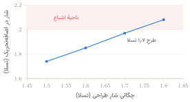
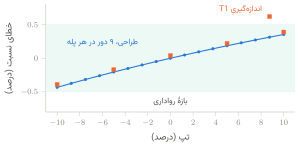
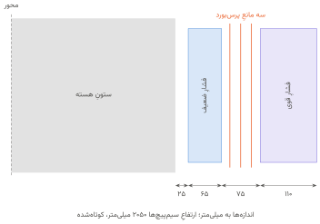
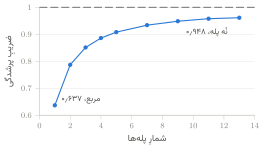
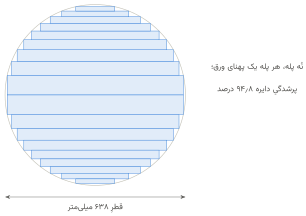
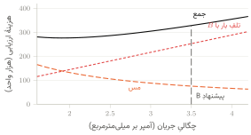
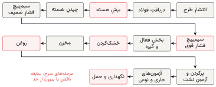
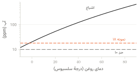
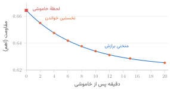
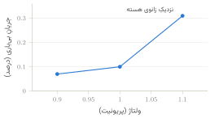

43 ترانسفورماتورِ قدرت: نظریه، طراحی و ساختِ کارخانهای
43.1 نقشهٔ فصل
پس از این فصل، خواننده میتواند:
- الزامهای یک ترانسفورماتورِ قدرت را به کمیتهای طراحی برگرداند: چگالیِ شار، ولت بر دور، شمارِ دور و پلههای تپ، چگالیِ جریان، امپدانس، فاصلههای عایقی و تنشهای اتصالِ کوتاه.
- یک طرحِ مقدماتی را با دست و پایتون بسازد و با تضمینهای پیشنهاد بسنجد: هستهٔ پلهای، فولادِ هسته، تلفِ بیباری، تلفِ بار، امپدانس از هندسه و جرمِ حمل.
- توضیح دهد چرا طراحیِ نهایی کارِ سازنده است و بازبینیِ طراحیِ خریدار چه چیزی را میتواند و نمیتواند ثابت کند.
- مسیرِ کارخانه را از ورقِ فولاد تا حمل دنبال کند، کنترل و سابقهٔ هر گام و عیبهایی را که هر گام جلویشان را میگیرد بشناسد.
- گزارشِ آزمون را بخوانَد و تصحیح کند: نسبتِ دور در هر تپ، مقاومت در دمای مرجع، تلفات با تصحیحِ شکلِ موج و دما، آزمونِ گرمایی با منحنیِ سردشدن، توانِ صوتی و گازهای حلشده.
- پروندهٔ کارخانه را از الزام تا شاهد ردیابی کند و تصمیمهای باز را با مالکشان فهرست کند.
پیشنیازها: ترانسفورماتور و پست (فصل 25)، سامانهٔ تولید و کیفیت (فصل 40) و خرید (فصل 39).
- ولت بر دور از کدام سه کمیت به دست میآید؟
- چرا تلفِ بیباری در سال سنگینتر از تلفِ بار ارزیابی میشود؟
- امپدانسِ اتصالِ کوتاه از کجای ترانسفورماتور میآید؟
- نقطهٔ توقف در طرحِ بازرسی و آزمون یعنی چه؟
پاسخها: (۱) بسامد، چگالیِ شارِ بیشینه و سطحِ هسته؛ (۲) چون همهٔ سال جریان دارد و بارِ نیروگاه کم است؛ (۳) از شارِ نشتی در فاصلهٔ میانِ سیمپیچها و درونِ خودِ آنها؛ (۴) کار تا آزادسازی متوقف میماند. اگر دو پرسش یا بیشتر را نتوانستید، بخش 25.2.1، مثال 25.99، بخش 25.3.4 و بخش 40.4.4 را مرور کنید.
جایگاهِ این فصل در نیروگاهِ P. فصلِ ۲۵ دو ترانسفورماتورِ اصلیِ 63 MVA را مشخص کرد و پیشنهادِ B را برگزید (D-029). فصلِ ۳۹ ترانسفورماتورهای واحدِ خورشیدی را از پیشنهادِ U-A خرید. این فصل به درونِ آن ترانسفورماتورها و کارخانهشان میرود. نخست طرحی مقدماتی میسازد که تضمینهای پیشنهادِ B را بازتولید کند، تا بازبینیِ طراحیِ خریدار بداند چه بپرسد. سپس واحدِ T1 را از برگهٔ مسیرِ کارخانه تا گزارشِ آزمون دنبال میکند. گزارش میگوید «همه قبول». خواندنِ درست سه رد، پنج شکاف در برگهٔ مسیر و هشت تصمیمِ باز را نشان میدهد. همه با تصمیمِ D-047 جمع میشوند.
کارخانه، طرح، برگهٔ مسیر و گزارشِ آزمون ساختگیاند. ولتاژِ قوی، خلأ، فشار، روغنِ داغ، آزمونهای دیالکتریک و بالابریِ سنگین فقط برای فهمِ مهندسی و نظارتِ کیفیت آمدهاند، نه بهعنوانِ روالِ کار. هیچ برنامهٔ خشککردن، فرآوریِ روغن یا عملیاتِ حرارتی داده نمیشود. هیچ ولتاژِ آزمونی برای اعمال گفته نمیشود. این کارها را افرادِ صلاحیتدار با روشهای سازنده و آزمایشگاه انجام میدهند (فصل 32). از استانداردها هیچ بند یا عددِ معیاری نقل نشده است. رواداریها و حدهای این فصل آموزشی یا قراردادیاند.
43.2 الف. نظریه و برگرداندنِ الزام به طرح
فصلِ ۲۵ ترانسفورماتور را از بیرون دید: مدارِ معادل، تلف، دما، تپ و آزمون. این بخش همان فیزیک را از درون میبیند. هر الزامِ خریدار کمیتی در طرح را ثابت میکند. این بخش نشان میدهد کدام کمیت و با چه حسابی. عددها از طرحی مقدماتی میآیند که برای بازبینیِ پیشنهادِ B ساخته شده است (A-458). این طرحِ سازنده نیست و جای آن را نمیگیرد.
43.2.1 از الزام به کمیتِ طراحی
مشخصهٔ خرید (بخش 25.2.3) فهرستی از الزامهاست. طراح هر کدام را به یک یا چند کمیت برمیگرداند:
| الزام | کمیتی که ثابت میکند | کجا وارسی میشود |
|---|---|---|
| توانِ نامی ONAN/ONAF | جریانها، سطحِ خنککن، گرمای هر قسمت | آزمونِ گرمایی |
| ولتاژها و گروهِ برداری | شمارِ دور، اتصالِ ستاره و مثلث | آزمونِ نسبت و گروه |
| امپدانس | ارتفاع، قطرها و فاصلهٔ میانِ سیمپیچها | آزمونِ امپدانس |
| بازهٔ تپ | سیمپیچِ تپ، تپچنجر، ولتاژِ هر پله | نسبت در هر تپ |
| تلفهای تضمینی | فولاد، چگالیِ شار، چگالیِ جریان، رسانا | آزمونهای تلف |
| ترازهای عایقی | فاصلهها، مانعها، بوشینگها | آزمونهای دیالکتریک |
| تحملِ اتصالِ کوتاه | امپدانس، نگهدارندهها، گیرهها | آزمون یا بازبینیِ طراحی |
| صدا | چگالیِ شار، ساختِ هسته، فنها | آزمونِ صدا |
| حمل | جرمِ بخشِ فعال و مخزن، ابعاد | توزین، ضربهنگار |
| محیط و ارتفاع | خنککاری، فاصلههای هوایی | محاسبه، فصلِ ۲۵ |
| مطالعهٔ شبکه | اضافهتحریک، امپدانس، بازهٔ تپ | محاسبه، فصلِ ۲۸ |
هیچکدام از اینها جدا از بقیه انتخاب نمیشود. چگالیِ شارِ بالاتر هسته را کوچک میکند، اما صدا و خطرِ اشباع را بالا میبرد. فاصلهٔ بزرگترِ میانِ سیمپیچها عایق را آسان میکند، اما امپدانس را بالا میبرد. ادامهٔ این بخش این وابستگیها را با عدد نشان میدهد. توالیِ طراحی در بخش 25.3.1 آمده بود.
مثال 43.1 (یک الزام، چند کمیت) پرسش. الزامِ «امپدانسِ ۱۲ درصد» کدام کمیتهای طرح را ثابت میکند و کجا وارسی میشود؟
پاسخ. ارتفاعِ سیمپیچها، قطرها و فاصلهٔ میانشان، و بهواسطهٔ آنها نیروهای اتصالِ کوتاه و تنظیمِ ولتاژ. وارسی در آزمونِ امپدانس.
تفسیر. امپدانسِ کمتر تنظیمِ ولتاژ و تلفِ واکنشی را بهتر میکند، اما جریانِ خطا و نیروها را بالا میبرد (مثال 25.16). یک عدد در مشخصه چند تصمیم را در کارخانه میبندد. پس هر عدد با دلیلش و با مطالعهای که از آن آمده نوشته میشود.
43.2.2 چگالیِ شار و اضافهتحریک
ولت بر دور از قانونِ فارادی (معادلهٔ 25.1) و سطحِ خالصِ هسته به دست میآید. سطحِ خالص از قطرِ دایرهٔ هسته، ضریبِ انباشت \(k_\text{st}\) (سهمِ فولاد در ضخامتِ ورقها با لایهٔ عایقشان) و ضریبِ پرشدگی \(k_\text{f}\) (سهمی از دایره که پلهها پر میکنند) میآید:
\[ e_\text{t} = 4.44\, f\, \hat{B}\, A_\text{c}, \qquad A_\text{c} = k_\text{st}\, k_\text{f}\, \frac{\pi D_\text{c}^2}{4} \tag{43.1}\]
با ولت بر دورِ ثابت، \(\hat{B}\) کمتر یعنی هستهٔ بزرگتر. اما هر کیلوگرم فولاد در شارِ کمتر تلفِ کمتری دارد. سه چیز در انتخاب وزن دارند: تلف، صدا و فاصله تا اشباع در بدترین ولتاژ و بسامدی که مطالعهٔ شبکه میدهد.

flux density at 110 V a turn: core, loss, sound and over-excitation (teaching)
loss per kg ~ B^2 from 1.15 W/kg at 1.7 T; sound ~ 40 log B;
over-excitation 1.10 U at 0.95 f raises B by 16 %
B T core dia m core t P0 kW sound dB B over-excited T
1.50 0.679 34.4 37.5 -2.2 1.74
1.60 0.658 31.9 39.6 -1.1 1.85
1.70 0.638 29.8 41.8 +0.0 1.97
1.80 0.620 27.9 43.9 +1.0 2.08
a lower flux density needs more steel but each kilogram
loses less: P0 moves only 6.3 kW over the range and the
sound a few dB; the margin to saturation (about 2.0 T for
grain-oriented steel) moves most - at 1.8 T the over-excited
core is past it, so the grid study's highest V/f (ch 28)
bounds the choiceمثال 43.2 (اضافهتحریک، نه تلف، انتخاب را میبندد) پرسش. اگر مطالعهٔ شبکه بگوید ولتاژ تا ۱۱۰ درصد و بسامد تا ۹۵ درصد میرسد، شارِ هسته در طرحِ ۱٫۷ تسلایی چقدر میشود؟
پاسخ. شار با \(U/f\) متناسب است: \(1.7 \times 1.10/0.95 = 1.97\,\text{T}\)، نزدیکِ اشباعِ فولادِ دانهگرا.
تفسیر. تلفِ بیباری در کلِ بازهٔ ۱٫۵ تا ۱٫۸ تسلا فقط 6.3 kW تغییر میکند. اما در ۱٫۸ تسلا هسته در اضافهتحریک اشباع میشود، جریانِ مغناطیسکننده تند بالا میرود و شارِ نشتی به مخزن و گیرهها میرسد و آنها را داغ میکند. پس بدترین \(U/f\)ِ مطالعهٔ شبکه (فصل 28) سقفِ چگالیِ شار است. حفاظتِ اضافهتحریک همین حد را در بهرهبرداری نگه میدارد (مثال 25.9).
43.2.3 شمارِ دور و پلههای تپ
با ولت بر دورِ \(e_\text{t}\)، شمارِ دورِ هر سیمپیچ ولتاژِ فازِ آن تقسیم بر \(e_\text{t}\) است، گردشده به عددِ صحیح. سیمپیچِ فشارِ ضعیفِ مثلث ولتاژِ خط را میبیند. سیمپیچِ فشارِ قویِ ستاره ولتاژِ خط تقسیم بر \(\sqrt3\) را. هر پلهٔ تپ هم باید شمارِ صحیحی دور باشد.
turns of the reviewer's design: e_t = 110.0 V
LV delta: 33,000 V / 110.0 = 300 turns
HV star: 76,210 V / 110.0 = 692.8 -> 693 turns (ratio error +0.03 %)
tap step 1.25 % = 8.66 turns: whole turns only
turns a step worst ratio error over the 17 positions
8 +0.85 % at tap -10.00 %
9 -0.43 % at tap -10.00 %
9 turns a step keeps every tap inside +-0.5 % (worst -0.43 %);
8 turns would miss at the end (+0.85 %) - the ratio
test at every tap (lesson C) checks the arithmetic in copper
مثال 43.3 (هشت یا نُه دور؟) پرسش. پلهٔ ۱٫۲۵ درصدیِ ۶۹۳ دور برابرِ ۸٫۶۶ دور است. با ۸ یا ۹ دور در هر پله، بدترین خطای نسبت در هفده تپ چقدر است؟
پاسخ. با ۹ دور، -0.43 % در تپِ ۱۰- درصد. با ۸ دور، +0.85 % در همان تپ.
تفسیر. گردکردن به دورِ صحیح خطایی میسازد که با فاصله از تپِ اصلی جمع میشود. نُه دور در رواداریِ آموزشیِ نیم درصد میماند و هشت دور نه. این حساب ساده است، اما فقط آزمونِ نسبت در هر تپ نشان میدهد که سیمهای رابطِ تپ هم درست وصل شدهاند (بخش 43.4.6). وارسی: \((693 - 72)/(693 \times 0.9) - 1 = -0.43\,\%\).
43.2.4 جریانها و رسانا
currents of 63 MVA at rated:
HV line = phase (star): 275.6 A
LV line 1,102 A; phase of the delta 636.4 A
at 3.5 A/mm2: HV conductor 78.7 mm2, LV 181.8 mm2
copper in the two windings: 8.4 t (mean turns 2.37 and 3.39 m)
same ampere-turns both sides: 190,909 and 190,959 A
the delta carries 1/sqrt3 of the line current, so its
conductor is sized on the phase current, not the lineایده. جریانِ فازِ مثلث \(1/\sqrt3\) جریانِ خط است. پس رسانای سیمپیچِ فشارِ ضعیف با 636 A اندازه میشود، نه با 1,102 A. آمپر-دورِ دو سیمپیچ برابر است، با اختلافی به اندازهٔ گردکردنِ دورها. این برابری پایهٔ همهٔ حسابهای نیرو و امپدانس است. حدودِ ۸ تن مس در دو سیمپیچِ اصلی مینشیند، بیسیمپیچِ تپ و رابطها. چگالیِ جریان \(J\) خودش انتخابی اقتصادی است (بخش 43.3.4).
مثال 43.4 (مثلث و ستاره) پرسش. جریانِ فاز و خطِ دو سیمپیچ را بیابید و آمپر-دور را وارسی کنید.
پاسخ. فشارِ قوی: \(63 \times 10^6/(\sqrt3 \times 132\,000) = 275.6\,\text{A}\)، همان در خط و فاز. فشارِ ضعیف: خط 1,102 A و فاز \(1102/\sqrt3 = 636.4\,\text{A}\). آمپر-دور 190,909 و 190,959.
تفسیر. اختلافِ ۵۰ آمپر-دور از گردکردنِ ۶۹۲٫۸ به ۶۹۳ دور است، همان 0.03 % خطای نسبتِ تپِ اصلی (مثال 43.3).
43.2.5 امپدانس از هندسه
شارِ نشتی در فاصلهٔ میانِ دو سیمپیچ و درونِ خودِ آنها جریان دارد. فصلِ ۲۵ رابطهٔ پایه را داد (معادلهٔ 25.10). در دو سرِ سیمپیچها شار پخش میشود و ارتفاعِ مؤثر بلندتر از ارتفاعِ واقعی است. ضریبِ روگوفسکی \(K_\text{R}\) این را میگیرد:
\[ \begin{aligned} u_x &= \frac{2\pi f \mu_0\, (N I)\, \pi D_\text{m}}{e_\text{t}\, h / K_\text{R}} \left(a_{12} + \frac{a_1 + a_2}{3}\right) \times 100 \\ K_\text{R} &= 1 - \frac{a_1 + a_2 + a_{12}}{\pi h} \end{aligned} \tag{43.2}\]
\(a_1\) و \(a_2\) ضخامتِ شعاعیِ دو سیمپیچاند، \(a_{12}\) فاصلهٔ میانشان، \(h\) ارتفاع و \(D_\text{m}\) قطرِ میانگینِ فاصله.

def ux_pct(f: float, ni: float, e_t: float, d_m: float, a12: float,
a1: float, a2: float, h: float) -> float:
"""Reactance of two concentric windings from their geometry, with the
Rogowski factor for the leakage flux spreading at the winding ends."""
k_r = 1 - (a1 + a2 + a12) / (math.pi * h)
h_eff = h / k_r
return (100 * 2 * math.pi * f * MU0 * ni * math.pi * d_m
* (a12 + (a1 + a2) / 3) / (e_t * h_eff))impedance of the design from its geometry: 12.02 % (guarantee 12.0 %, +-7.5 %)
Dm 0.893 m, h 2.05 m, a12 75 mm, a1 65, a2 110 mm; Rogowski factor 0.961
change ux %
gap +10 mm 13.04
gap -10 mm 11.01
height +50 mm 11.74
height -50 mm 12.30
band 11.10 - 12.90 %: the gap may move about 9 mm up or 9 mm down
the main gap is set by the insulation (lesson A, gap), so
the impedance is tuned with the height and the diameters -
and the test (lesson C) is where the copper meets the sumمثال 43.5 (نُه میلیمتر) پرسش. امپدانسِ طرح چقدر است؟ فاصلهٔ اصلی چقدر میتواند جابهجا شود تا امپدانس در بازهٔ \(12 \pm 7.5\,\%\) بماند؟
پاسخ. 12.02 %. هر میلیمتر فاصله حدودِ 0.10 % امپدانس است. پس حدودِ ۹ میلیمتر به هر سو.
تفسیر. فاصلهٔ اصلی را عایق تعیین میکند (بخش 43.2.7) و نمیشود آزادانه تغییرش داد. پس امپدانس با ارتفاع و قطرها تنظیم میشود. نُه میلیمتر در سیمپیچی به قطرِ یک متر رواداریِ کارگاهیِ گشادی نیست. امپدانسِ 12.6 %ِ آزمون (بخش 43.5.3) درونِ بازه است، و 0.6 % بالاتر از طرحِ مقدماتی، همارزِ حدودِ ۶ میلیمتر فاصلهٔ بیشتر. وارسی: ضریبِ روگوفسکی \(1 - 0.25/(\pi \times 2.05) = 0.961\).
43.2.6 ساختنِ تلفِ بار و بازده
تلفِ بار در دمای مرجع سه بخش دارد: تلفِ اهمیِ \(I^2R\)، تلفِ گردابی در رسانا، و تلفِ پراکنده در مخزن، گیرهها و رابطها:
\[ \begin{aligned} P_\text{k} &= \sum I^2 R \,(1 + k_\text{e} + k_\text{s}) \\ \eta &= \frac{k\,S \cos\varphi}{k\,S \cos\varphi + P_0 + k^2 P_\text{k}} \end{aligned} \tag{43.3}\]
\(k_\text{e}\) و \(k_\text{s}\) سهمِ گردابی و پراکنده از تلفِ اهمیاند و \(k\) بارِ پریونیت.
load loss of the design at 75 C, built up (teaching shares):
R per phase: LV 82.4 mOhm, HV 629 mOhm
I2R 243 kW + eddy 15 + stray (tank, clamps, leads) 29 = 287 kW
no-load loss 41.8 kW (conventional GO, 29.8 t core); bid B 42 / 290 kW
load pu efficiency at pf 0.95
0.25 99.603%
0.38 99.635%
0.50 99.622%
0.75 99.549%
1.00 99.453%
highest efficiency where P0 = Pk k^2: k = 0.38, close to
Plant P's mean load of 0.29 pu (ch 25) - a design for this
plant, not for full loadمثال 43.6 (طرحی برای این نیروگاه) پرسش. تلفِ اهمی و تلفِ بار در 75 °C چقدر است؟ بیشترین بازده در چه باری است؟
پاسخ. 243 kW اهمی و 287 kW تلفِ بار، نزدیکِ 290 kWِ پیشنهادِ B. بیشترین بازده در \(k = \sqrt{P_0/P_\text{k}} = 0.38\).
تفسیر. بارِ میانگینِ ترانسفورماتورِ اصلی در سالِ بستهٔ داده 0.29 pu است (مثال 25.6). بازده در بارِ کامل 99.45 % و نزدیکِ بارِ میانگین بیشترین است. ارزیابیِ تلف با \(A\) و \(B\) همین را میخواهد: طرحی برای بارِ واقعیِ نیروگاه، نه برای بارِ نامی. وارسی: \(3 \times (636.4^2 \times 0.0824 + 275.6^2 \times 0.629) = 243\,\text{kW}\).
43.2.7 فاصلهٔ روغن و پرسبورد
فاصلهٔ اصلیِ میانِ دو سیمپیچ از روغن و مانعهای پرسبورد ساخته میشود. دو دیالکتریک سریاند. جابهجاییِ الکتریکی در هر دو یکی است، پس میدان با ثابتِ دیالکتریک وارون تقسیم میشود:
\[ E_\text{o} = \frac{U}{d_\text{o} + d_\text{p}\,\varepsilon_\text{o}/\varepsilon_\text{p}}, \qquad E_\text{p} = E_\text{o}\,\frac{\varepsilon_\text{o}}{\varepsilon_\text{p}} \tag{43.4}\]
\(d_\text{o}\) و \(d_\text{p}\) ضخامتِ کلِ روغن و پرسبوردند و \(\varepsilon_\text{o} \approx 2.2\)، \(\varepsilon_\text{p} \approx 4.4\) ثابتهای دیالکتریک.
HV-LV gap of 75 mm at a teaching 100 kV across it
all oil: 1.33 kV/mm; strength of a 75 mm duct 2.43 -> margin 1.82
3 pressboard barriers of 3 mm: oil 1.42, board 0.71 kV/mm
ducts of 16.5 mm hold 4.25 kV/mm -> margin 3.00
the board (permittivity 4.4) pushes more stress into the oil
(2.2), yet thin oil ducts hold much more than one wide one:
barriers divide the gap - the stress curve is teaching; the
insulation levels and tests are the standard's and maker'sمثال 43.7 (مانع تنش را بالا میبرد و باز کمک میکند) پرسش. با 100 kVِ آموزشی روی فاصلهٔ 75 mm، میدانِ روغن بیمانع و با سه مانعِ 3 mmی چقدر است؟ حاشیه تا استقامتِ دیالکتریک چقدر؟
پاسخ. بیمانع 1.33 kV/mm و حاشیهٔ 1.82. با مانع، میدانِ روغن به 1.42 kV/mm میرسد، اما حاشیه 3.00 میشود.
تفسیر. پرسبورد با ثابتِ دیالکتریکِ بیشتر تنشِ بیشتری را به روغن میراند. باز هم مانعها کمک میکنند، چون روغن را به مجراهای نازک تقسیم میکنند و مجرای نازک تنشِ بیشتری را تاب میآورد. منحنیِ اندازه آموزشی است. ترازهای عایقی و آزمونهایشان از استانداردِ عایق (STD-174) و طرحِ سازنده میآیند. هیچ ولتاژِ آزمونی در این کتاب برای اعمال داده نمیشود.
43.2.8 تنشهای اتصالِ کوتاه و کمانش
در اتصالِ کوتاه، شارِ نشتی با جریانِ اوج بزرگ میشود و سیمپیچِ بیرونی را به بیرون میکشد و سیمپیچِ درونی را به درون میفشارد (مثال 25.37). با میدانِ \(B = \mu_0 N \hat{i}/h\) در فاصله، نیروی شعاعیِ کل و تنشِ حلقوی:
\[ \begin{aligned} F_\text{r} &= N\hat{i}\,\frac{B}{2}\,\pi D, \qquad \sigma_\text{h} = \frac{F_\text{r}}{2\pi N a} \\ \sigma_\text{cr,free} &= E \left(\frac{t}{D}\right)^2, \qquad \sigma_\text{cr,s} = \frac{\pi^2 E\, t^2}{3\, s^2} \end{aligned} \tag{43.5}\]
\(a\) سطحِ مقطعِ رسانای هر دور است، \(t\) ضخامتِ شعاعیِ رسانا و \(s\) فاصلهٔ نگهدارندهها. سطرِ دوم کمانشِ آزادِ حلقه را با کمانشِ مهارشده میانِ نگهدارندهها میسنجد.
windings at the peak short-circuit current (uk 12.0 %,
peak factor 1.8 x sqrt2)
HV 2,296 A rms, 4.05 MA-turns at the peak
HV hoop tension 50 MPa; LV hoop compression 35 MPa
LV conductor 10 mm thick on a 0.75 m winding: free buckling at 19 MPa
held by 24 sticks (99 mm apart): buckling at 3,725 MPa
free, the inner winding would buckle below the fault stress;
sticks on a strong cylinder hold it, and the copper's proof
strength becomes the limit - a design review asks for the
calculation or the test that shows it (STD-175)مثال 43.8 (سیمپیچِ درونی بینگهدارنده کمانش میکند) پرسش. تنشِ فشاریِ سیمپیچِ فشارِ ضعیف را با تنشِ کمانشِ آزاد مقایسه کنید. ۲۴ نگهدارنده چه تغییری میدهند؟
پاسخ. فشار 35 MPa و کمانشِ آزاد 19 MPa. با ۲۴ نگهدارنده در فاصلهٔ 99 mm، کمانش در بیش از 3,700 MPa، یعنی دیگر حد نیست.
تفسیر. سیمپیچِ درونی اگر آزاد باشد، زیرِ تنشِ خطا کمانش میکند. نگهدارندههای محوری روی استوانهای محکم آن را نگه میدارند و استحکامِ رسانا حد میشود. تحملِ اتصالِ کوتاه را آزمون یا بازبینیِ محاسبه نشان میدهد (STD-175)، و این در مشخصهٔ خرید یک بندِ جداست که در بخش 43.5.1 هنوز باز است. وارسی: \(110\,000 \times (0.010/0.753)^2 = 19.4\,\text{MPa}\).
43.2.9 کدام سیمپیچ شار را تعیین میکند؟
شار با ولتاژِ یک سیمپیچ تقسیم بر دورهایش تعیین میشود: همان سیمپیچی که ولتاژش را منبع ثابت نگه میدارد. در این ترانسفورماتور تپها روی سیمپیچِ 132 kVاند و سیمپیچِ 33 kV بیتپ است.
flux at each tap: who sets it (HV taps, LV winding untapped)
tap % from the 33 kV side energised from 132 kV, LV open
at 1.0 / 1.1 pu at 1.0 / 1.1 pu
-10 1.70 / 1.87 1.89 / 2.08 T
-5 1.70 / 1.87 1.79 / 1.97 T
+0 1.70 / 1.87 1.70 / 1.87 T
+5 1.70 / 1.87 1.62 / 1.78 T
+10 1.70 / 1.87 1.55 / 1.70 T
in service the plant holds the 33 kV bus, and the untapped
33 kV winding fixes the flux whatever the tap; energised
from the grid at the -10 % tap, fewer HV turns carry the
same voltage and the core runs 11 % higher - energise on a
high tap and keep V/f in view (ch 25, energising)مثال 43.9 (برقدارکردن روی تپِ بالا) پرسش. اگر ترانسفورماتور از سمتِ شبکه و بیبار روی تپِ ۱۰- درصد برقدار شود، شار در ولتاژِ نامی و در ۱۱۰ درصد چقدر است؟
پاسخ. \(1.7 \times 693/621 = 1.89\,\text{T}\) و در ۱۱۰ درصد 2.08 T، بالای اشباع.
تفسیر. در بهرهبرداری نیروگاه شینهٔ 33 kV را نگه میدارد و سیمپیچِ بیتپ شار را ثابت میکند، هر تپی که باشد. اما برقدارکردن از سمتِ شبکه است (بخش 25.8.7). روی تپِ پایین، دورهای کمترِ فشارِ قوی همان ولتاژ را میبرند و هسته ۱۱ درصد بالاتر کار میکند. جریانِ هجومی هم با شار بالا میرود. پس دستورالعملِ برقدارکردن تپ را نام میبرد. این درس مثال 43.2 را کامل میکند: سقفِ شار به این بستگی دارد که کدام سیمپیچ و در کدام حالت.
43.2.10 گرمای سیمپیچ در اتصالِ کوتاه
در اتصالِ کوتاهِ کوتاهمدت، گرما فرصتِ بیرونرفتن ندارد. افزایشِ دمای رسانا با گرمای ویژهٔ حجمیِ \(c_V\):
\[ \Delta\theta = \frac{\rho\, J_\text{sc}^2\, t}{c_V}, \qquad J_\text{sc} = \frac{J}{u_\text{k}} \tag{43.6}\]
winding temperature in a 2 s short circuit (adiabatic, teaching)
current density 3.5 / 0.12 = 29.2 A/mm2 for the whole fault
rise = rho J^2 t / (heat capacity per m3) = 10 K
about ten kelvin: with this impedance the thermal side of the
short-circuit withstand is easy; the forces of lesson A
are what the test or the design review must showایده. با امپدانسِ ۱۲ درصد، چگالیِ جریانِ خطا هشت برابرِ نامی است و در دو ثانیه رسانا حدودِ ده کلوین گرم میشود. بخشِ گرماییِ تحملِ اتصالِ کوتاه آسان است. نیروهای بخش 43.2.8 چیزیاند که آزمون یا بازبینیِ طراحی باید نشان دهد. این رابطه همان رابطهٔ بیدررو برای کابل در فصلِ ۲۴ است (فصل 24).
مثال 43.10 (ده کلوین) پرسش. با چگالیِ 3.5 A/mm² و امپدانسِ ۱۲ درصد، دمای رسانا در اتصالِ کوتاهِ دوثانیهای چقدر بالا میرود؟
پاسخ. \(J_\text{sc} = 29.2\,\text{A/mm}^2\) و \(\Delta\theta = 0.0211\times10^{-6} \times (29.2\times10^6)^2 \times 2/3.45\times10^6 = 10\,\text{K}\).
تفسیر. با امپدانسِ ۸ درصد، چگالیِ خطا ۴۴ و افزایش حدودِ ۲۳ کلوین میشد، هنوز کم. اما نیروها با مربعِ جریان بالا میروند: \((12/8)^2 = 2.25\) برابر. پس امپدانسِ کمتر مسئلهٔ مکانیکی است، نه گرمایی.
43.2.11 محیطِ ۴۵ درجه و اندازهٔ واقعی
the PV unit rated 5.6 MVA at a 45 C ambient (ch 39 requirement T01)
5 K hotter air than a 40 C reference (teaching) leaves 55 K
of rise
losses must fall to 89.7%: the same design carries 0.942 pu
so a 5.6 MVA unit for 45 C is a 5.9 MVA unit at 40 C
- the specification's ambient changes the size, and two
offers rated at different ambients are not the same machineمثال 43.11 (دو پیشنهاد، دو ماشین) پرسش. ترانسفورماتورِ واحدِ 5.6 MVA برای محیطِ ۴۵ درجه، با مرجعِ آموزشیِ ۴۰ درجه چند مگاولتآمپر است؟
پاسخ. افزایشِ مجاز از ۶۰ به ۵۵ کلوین میآید. تلف باید به 89.7 % برسد و بار به 0.942 pu. پس \(5.6/0.942 = 5.9\,\text{MVA}\).
تفسیر. محیطِ مشخصه اندازه را تغییر میدهد. پیشنهادی که در ۴۰ درجه 5.6 MVA است، ماشینی کوچکتر از پیشنهادی است که همان عدد را در ۴۵ درجه میدهد. پس ارزیابیِ پیشنهادها محیطِ هر کدام را میخوانَد (فصل 39). محیطِ مرجعِ واقعی و قاعدهٔ اصلاح را استاندارد (STD-173) و قرارداد میدهند.
- جدول 43.1 را با یک مثال توضیح دهید: کدام الزام چند کمیت را ثابت میکند؟
- معادلهٔ 43.1 را توضیح دهید. ضریبِ انباشت و ضریبِ پرشدگی چه فرقی دارند؟
- چرا اضافهتحریک، نه تلفِ بیباری، سقفِ چگالیِ شار است؟
- چرا خطای نسبت در تپهای دور از تپِ اصلی بزرگتر است؟
- چرا رسانای سیمپیچِ مثلث با جریانِ فاز اندازه میشود؟
- معادلهٔ 43.2 را توضیح دهید. ضریبِ روگوفسکی چه چیزی را میگیرد؟
- چرا امپدانس با ارتفاع و قطر تنظیم میشود، نه با فاصلهٔ اصلی؟
- معادلهٔ 43.3 را توضیح دهید. کدام بخشِ تلفِ بار با دما بالا و کدام پایین میرود؟
- معادلهٔ 43.4 را توضیح دهید. چرا مانعِ پرسبورد با وجودِ تنشِ بیشترِ روغن مفید است؟
- معادلهٔ 43.5 را توضیح دهید. چرا سیمپیچِ درونی، نه بیرونی، کمانش میکند؟
- کدام سیمپیچ شارِ هسته را در بهرهبرداری و کدام در برقدارکردن تعیین میکند؟
- معادلهٔ 43.6 را توضیح دهید. چرا تحملِ گرماییِ اتصالِ کوتاه آسان است؟
- چرا محیطِ نامی بخشی از اندازهٔ ترانسفورماتور است؟
43.3 ب. مواد و منطقِ طراحیِ مقدماتی
بخشِ الف کمیتها را از الزامها درآورد. این بخش موادی را که آن کمیتها را میسازند و انتخابهایی را که طراح میانشان میکند، با عدد نشان میدهد. هر جا ارزیابیِ تلف با ضریبهای \(A\) و \(B\) فصلِ ۲۵ وارد میشود، از همان 6.84 و 0.88 k u/kW استفاده میشود (مثال 25.6). قیمتها و ضریبهای مواد آموزشیاند (A-459، A-465).
43.3.1 مواد و زیرمجموعهها
| جزء | کارِ آن | ویژگیِ کنترلشده | شاهد |
|---|---|---|---|
| فولادِ الکتریکیِ دانهگرا | مسیرِ شار با تلفِ کم | تلف بر کیلوگرم در ۱٫۷ تسلا، ضخامت، پوشش | گواهیِ کارخانهٔ فولاد برای هر کلاف |
| رسانای مسی (تسمه یا هادیِ ترانهادهٔ پیوسته) | بردنِ جریان با تلفِ کم | سطحِ مقطع، ضخامتِ رشته، عایقِ رشته | گواهیِ مس، اندازهگیریِ ابعاد |
| کاغذِ کرافت و پرسبورد | عایقِ دور به دور، مانعها، فاصلهاندازها | چگالی، رطوبت، ضخامت | گواهیِ مواد، رطوبت پس از خشککردن |
| روغنِ معدنی یا استر | عایق و خنککن | آب، استقامتِ دیالکتریک، اسیدیته | آزمونِ روغن پیش از پرکردن (STD-178) |
| گیرهها و قابِ هسته | نگهداشتنِ هسته و سیمپیچها در برابرِ نیروها | نیروی گیره، عایقِ پیچهای گیره | سابقهٔ نیروی گیره |
| رابطها و سیمپیچِ تپ | بردنِ جریان به بوشینگ و تپچنجر | سطح، اتصال، فاصله | گشتاور و سابقهٔ اتصال |
| تپچنجرِ زیرِ بار | تغییرِ نسبت در بهرهبرداری | پله، جریان، شمارِ عمل | گزارشِ آزمونِ نوعی و جاری (STD-180) |
| بوشینگها | گذرِ رسانا از مخزن | تراز عایقی، جریان، فاصلهٔ خزشی | آزمونِ بوشینگ، ضریبِ تلف |
| مخزن و رادیاتورها | نگهداشتنِ روغن، دفعِ گرما | نشت، خلأ، سطح | آزمونِ فشار و خلأ، آزمونِ نشت |
| کنسرواتور یا مخزنِ بسته | انبساطِ روغن | حجم، تنفسگیر یا کیسه | سابقهٔ نصب |
| حسگرها و وسایلِ حفاظتی | دما، سطحِ روغن، گاز، فشار | واسنجی، آزمونِ کارکرد | فهرستِ سیگنالها، آزمونِ کارکرد |
اجزای ترانسفورماتور در بخش 25.3.2 و لوازمِ جانبی در بخش 25.3.5 آمده بودند. اینجا ستونِ «شاهد» تازه است: هر جزء سندی دارد که خریدار میتواند بخواهد.
مثال 43.12 (یک جزء، یک سند) پرسش. برای سه جزءِ فولاد، رسانا و روغن، شاهدی که خریدار میخواهد و عیبی که آن شاهد جلویش را میگیرد چیست؟
پاسخ. فولاد: گواهیِ کارخانهٔ فولاد برای هر کلاف، جلوی فولادِ با تلفِ بیشتر. رسانا: گواهیِ مس و اندازهگیریِ ابعاد، جلوی سطحِ کمتر و تلفِ بیشتر. روغن: آزمونِ آب و استقامت پیش از پرکردن، جلوی عایقِ مرطوب.
تفسیر. هر سه سند پیش از آنکه جزء در ترانسفورماتور پنهان شود گرفته میشوند. پس از آن، فقط آزمونِ نهایی میماند که برخی از این عیبها را نمیبیند (جدول 43.5).
43.3.2 هستهٔ پلهای
سطحِ مقطعِ هسته از ورقهایی با چند پهنا ساخته میشود. هر پلهٔ هسته دستهای از ورقهای یک پهناست. سیمپیچها گردند، پس پلهها باید تا جای ممکن دایره را پر کنند. با شعاعِ یک و نیمارتفاعِ پلهها \(y_k\)، سهمِ پرشده:
\[ k_\text{f} = \frac{4}{\pi} \sum_{k=1}^{n} \sqrt{1 - y_k^2}\,\left(y_k - y_{k-1}\right), \qquad y_0 = 0 \tag{43.7}\]
برنامه \(y_k\)ها را چنان مییابد که \(k_\text{f}\) بیشینه شود:
def stepped_fill(n_steps: int) -> tuple[float, list[float]]:
"""Largest share of a circle that n symmetric rectangular steps can
fill (stacked core cross-section). Returns the fill factor and the
step half-heights y_k (radius 1); widths are sqrt(1 - y_k^2)."""
from scipy.optimize import minimize
def neg_area(y):
y = np.sort(np.clip(y, 0.0, 1.0))
x = np.sqrt(1 - y ** 2)
return -4 * np.sum(x * np.diff(np.concatenate([[0.0], y])))
y0 = np.linspace(1, n_steps, n_steps) / (n_steps + 1)
best = minimize(neg_area, y0, method="Nelder-Mead",
options=dict(xatol=1e-10, fatol=1e-12, maxiter=40000))
return -best.fun / math.pi, sorted(float(v) for v in best.x)stepped core: share of the circle that n steps fill (optimised)
steps fill net area m2 in the 0.638 m circle
1 0.637 0.1974
2 0.787 0.2440
3 0.851 0.2639
4 0.886 0.2747
5 0.908 0.2815
7 0.934 0.2895
9 0.948 0.2940
11 0.958 0.2969
13 0.961 0.2980
9 steps, plate widths mm: 623, 592, 553, 505, 451
389, 319, 237, 138
each step is a stack of one plate width: more steps fill
the circle better but need more widths to cut and stack -
the gain from 9 to 13 steps is under 2 points of area

مثال 43.13 (یک پله یا سیزده پله) پرسش. یک پلهٔ مربعی چه سهمی از دایره را پر میکند؟ نُه و سیزده پله چطور؟
پاسخ. مربع \(2/\pi = 0.637\). نُه پله 0.948 و سیزده پله 0.961.
تفسیر. از مربع تا نُه پله، هسته در همان دایره ۴۹ درصد فولادِ بیشتر دارد. از نُه تا سیزده پله کمتر از ۲ امتیاز. هر پلهٔ بیشتر یک پهنای ورقِ دیگر برای برش و چیدن است. پس شمارِ پلهها بدهبستانِ فولاد با کارِ کارگاه است و کارخانه با ماشینِ برشش تعیین میکند. وارسی: با یک پله، \(y = 1/\sqrt2\) و \(k_\text{f} = (4/\pi)(1/\sqrt2)^2 = 2/\pi\).
43.3.3 فولادِ هسته و دو پیشنهاد
تلفِ بیباری حاصلِ جرمِ هسته، تلف بر کیلوگرمِ فولاد در چگالیِ شارِ کار، و ضریبِ ساخت است که اثرِ گوشهها، اتصالها و برش را میگیرد (مثال 25.33):
\[ P_0 = m_\text{c}\; p_\text{Fe}(\hat{B})\; k_\text{b} \tag{43.8}\]
the same 29.8 t core in three steels
(teaching W/kg at 1.7 T and building factors)
steel W/kg BF P0 kW A x dP0 steel extra net k u
conventional GO 1.15 1.22 41.8 0 0 0
high-permeability GO 0.90 1.12 30.0 -80 18 -63
domain-refined HGO 0.80 1.12 26.7 -103 36 -67
bid B's 42 kW is the conventional core; bid A's 28 kW is the
high-permeability one - the bids differ first in the steel
at A = 6.84 k u/kW the better steel repays its price several times;
bid A's 250 k u premium bought more than steel (ch 25: B won
at 70 u/MWh) - the evaluation sees totals, the review sees whyمثال 43.14 (دو پیشنهاد، دو فولاد) پرسش. هستهٔ 29.8 تنیِ طرح را در سه فولاد بسنجید. تفاوتِ دو پیشنهادِ فصلِ ۲۵ از کجا میآید؟
پاسخ. فولادِ معمولی 41.8 kW، نزدیکِ 42 kWِ پیشنهادِ B. فولادِ پرتراوایی 30.0 kW، نزدیکِ 28 kWِ پیشنهادِ A. صرفهجوییِ ارزیابیشده با \(A\) حدودِ 80 k u در برابرِ 18 k u فولادِ گرانتر.
تفسیر. دو پیشنهاد پیش از هر چیز در فولاد فرق دارند. فولادِ بهتر در این ارزیابی چند برابرِ هزینهاش را برمیگرداند. پس چرا پیشنهادِ B برد (مثال 25.6)؟ چون اختلافِ قیمتِ دو پیشنهاد 250 k u بود و بیش از فولاد را میخرید: مسِ بیشتر برای تلفِ بارِ کمتر و حاشیهٔ سازنده. ارزیابی جمع را میبیند. بازبینیِ طراحی چرایی را میبیند و میتواند بپرسد آیا هستهٔ بهتر با همان مس پیشنهاد میشود.
43.3.4 چگالیِ جریان و ارزیابیِ تلفِ بار
با شمارِ دورِ ثابت، مسِ لازم با \(1/J\) و تلفِ اهمی با \(J\) تغییر میکند. هزینهٔ مس بهعلاوهٔ تلفِ بارِ ارزیابیشده کمینهای دارد:
\[ C(J) = c_\text{Cu}\, m_0 \frac{J_0}{J} + B\, P_{\text{k}0} \frac{J}{J_0}, \qquad J^* = J_0 \sqrt{\frac{c_\text{Cu}\, m_0}{B\, P_{\text{k}0}}} \tag{43.9}\]
current density: copper bought against load loss evaluated
(B = 0.88 k u/kW, copper 9 u/kg)
J A/mm2 copper t Pk kW copper k u B x Pk k u sum k u
2.0 14.7 164 132 144 277
2.5 11.8 205 106 180 286
3.0 9.8 246 88 217 305
3.5 8.4 287 76 253 328
4.0 7.3 328 66 289 355
the two-term optimum is 1.9 A/mm2; bid B sits at 3.5, bid A near 2.6
bigger windings need a bigger window, core, tank and oil;
counting those moves the optimum up - the trade is real,
its exact place is the maker's optimisation
مثال 43.15 (کمینهای پهن) پرسش. کمینهٔ دوجملهای کجاست؟ پیشنهادِ B و A کجای منحنیاند؟
پاسخ. \(J^* = 1.9\,\text{A/mm}^2\). پیشنهادِ B در 3.5 و پیشنهادِ A حدودِ 2.6.
تفسیر. منحنی پهن است: میانِ ۲ و ۳ آمپر بر میلیمترمربع جمع حدودِ ده درصد تغییر میکند. اما مدلِ دوجملهای یک چیز را جا انداخته است. سیمپیچِ بزرگتر پنجرهٔ بزرگتر، هستهٔ سنگینتر، مخزن و روغنِ بیشتر میخواهد و تلفِ بیباری را هم بالا میبرد. شمردنِ اینها کمینه را بالاتر میبرد. جای دقیقِ کمینه بهینهسازیِ سازنده است. وجودِ بدهبستان و جهتش را بازبین میتواند وارسی کند.
43.3.5 ضخامتِ رشته و تلفِ گردابی
میدانِ نشتیِ محوری در رسانا جریانهای گردابی میسازد. برای نواری به ضخامتِ \(t\)، نسبتِ تلفِ گردابی به تلفِ اهمی با مربعِ ضخامت بالا میرود (مثال 25.39):
\[ \frac{P_\text{e}}{P_\text{dc}} = \frac{\omega^2\, \overline{B^2}\, t^2}{24\, \rho^2 J^2}, \qquad \overline{B^2} = \frac{\hat{B}_\text{g}^2}{3} \tag{43.10}\]
\(\hat{B}_\text{g}\) اوجِ میدان در فاصلهٔ اصلی است، که در پهنای سیمپیچ تا صفر میافتد.
eddy loss of strips in the axial leakage field
(peak 0.166 T in the gap at rated)
strand mm eddy / DC loss (axial field only)
1.0 0.69%
1.5 1.55%
2.0 2.76%
2.5 4.30%
3.0 6.20%
the axial field alone gives a few per cent; at the winding
ends the leakage flux bends radially and strikes the wide
face of the strip, adding several times more - hence thin
strands transposed along the winding (CTC) and the larger
teaching share of ch 25; the maker's field calculation
places the hot spotsایده. میدانِ محوری بهتنهایی چند درصد میدهد. در دو سرِ سیمپیچ، شارِ نشتی خم میشود و به پهنای نوار میخورد و چند برابر تلف میسازد. برای همین رسانای سیمپیچهای بزرگ از رشتههای نازکِ ترانهاده ساخته میشود، و برای همین سهمِ آموزشیِ فصلِ ۲۵ از حسابِ میدانِ محوری بزرگتر است. جای نقطههای داغِ ناشی از آن را محاسبهٔ میدانِ سازنده میدهد.
مثال 43.16 (دو برابر ضخامت، چهار برابر تلف) پرسش. سهمِ گردابیِ نوارِ 2.5 mm در میدانِ محوری چند برابرِ نوارِ 1.25 mm است؟
پاسخ. \((2.5/1.25)^2 = 4\) برابر: 4.30 % در برابرِ حدودِ 1.08 %.
تفسیر. نازککردنِ رشتهها گردابی را کم میکند، اما رشتههای بیشتر یعنی عایقِ رشتهٔ بیشتر و فضای کمتر برای مس. کابلِ ترانهاده رشتههای نازک را در طولِ سیمپیچ جابهجا میکند تا هر رشته همان شار را ببیند و جریانِ گردشی میانشان نماند.
43.3.6 جرمِ واحد و جرمِ حمل
mass of the 63 MVA unit (teaching estimate)
core 29.8 t
windings (copper) 8.4 t
leads, tap winding, insulation, clamps 6.0 t
tank and cover 16.0 t
oil (22 m3) 19.4 t
radiators, fans 6.0 t
conservator, bushings, OLTC drive 4.0 t
in service 90 t (ch 25: 95 t)
shipped without oil, radiators and bushings, gas-filled,
with 2 t bracing: 62 t
limit 72 t: margin 10 t - the reason the tank ships dry and
the accessories travel apart (ch 25, transport; ch 31)ایده. واحد در بهرهبرداری حدودِ ۹۰ تن است. با روغن و رادیاتور از حدِ 72 tِ حمل بسیار میگذرد. پس مخزن خشک و پر از گاز حمل میشود و لوازم جدا (بخش 25.4.4). حاشیهٔ دهتنی جای کمی برای خطای برآورد دارد. توزینِ بخشِ فعال و مخزن پیش از حمل در جدول 43.1 یک سطرِ باز است.
مثال 43.17 (ده تن حاشیه) پرسش. جرمِ حمل را از اجزا بسازید و با حدِ 72 t بسنجید.
پاسخ. \(29.8 + 8.4 + 6.0 + 16.0 + 2.0 = 62\,\text{t}\)، ده تن زیرِ حد.
تفسیر. اگر برآوردِ هسته یا مخزن ۱۵ درصد خطا داشته باشد، حاشیه تا نصف کم میشود. پس جرمِ واقعیِ حمل با توزین وارسی میشود، و مسیرِ جاده (فصل 31) با همان عدد بسته میشود.
43.3.7 حساسیتِ هزینهٔ ارزیابیشده
evaluated cost of the active part and its losses: 691 k u
input +-10 % -10 % k u +10 % k u
building factor -29 29
steel W/kg -29 29
A factor -29 29
B factor -25 25
current density -17 18
copper price -8 8
the no-load loss terms lead: steel quality and the building
factor (cutting and stacking, lesson C) move the evaluated
cost more than copper - a factory's core shop is where the
A factor is earned or lostایده. ده درصد تغییر در تلف بر کیلوگرمِ فولاد یا در ضریبِ ساخت هر کدام 29 k u جابهجا میکند. قیمتِ مس فقط 8 k u. ضریبِ ساخت در کارگاهِ هسته ساخته میشود: برش، پلیسه و چیدن (بخش 43.4.3). پس ضریبِ \(A\) در کارگاهِ هسته به دست میآید یا از دست میرود، نه فقط در خریدِ فولاد.
مثال 43.18 (کارگاهِ هسته، جایی که A ساخته میشود) پرسش. ده درصد ضریبِ ساختِ بهتر چند هزار واحد در هزینهٔ ارزیابیشده میارزد؟
پاسخ. \(0.10 \times 41.8 \times 6.84 = 29\,\text{k u}\).
تفسیر. ضریبِ ساخت با برش، پلیسه و چیدن ساخته میشود (بخش 43.4.12، بخش 43.4.3). کارخانهای که اتصالِ پلهای و برشِ تمیز دارد، همین مبلغ را بیفولادِ گرانتر میدهد. ممیزیِ کارگاهِ هسته بخشی از ارزیابیِ سازنده است.
43.3.8 ترانسفورماتورِ واحدِ خورشیدی
PV unit transformer 5.6 MVA 33/0.6 kV Dyn11 (ch 39, offer U-A)
LV star phase 346 V; phase current 5,389 A
LV turns volts a turn HV turns (delta, 33 kV) ratio error
14 24.74 1334 +0.02 %
16 21.65 1524 -0.01 %
18 19.25 1715 +0.02 %
with 16 LV turns: core 574 cm2 net, 288 mm across
one LV turn is 6 % of the voltage: the LV side fixes the
volts a turn, and a few thousand amperes a phase call for
a foil winding; taps go on the 33 kV side, where a turn is
a small stepمثال 43.19 (یک دور، شش درصد) پرسش. با ۱۶ دور در سمتِ 0.6 kV، ولت بر دور و شمارِ دورِ سمتِ 33 kV چقدر است؟
پاسخ. \(346.4/16 = 21.65\,\text{V}\) و \(33\,000/21.65 = 1524\) دور.
تفسیر. در سمتِ ولتاژِ پایین هر دور ۶ درصدِ ولتاژ است. پس شمارِ دورِ همین سمت ولت بر دور را ثابت میکند، و تپها در سمتِ 33 kV مینشینند که هر دور یک پلهٔ کوچک است. جریانِ 5,389 A در هر فاز سیمپیچِ ورقهای میخواهد. همین ترانسفورماتور در مثال 43.92 با دست حل میشود.
43.3.9 مرزِ طراحیِ سازنده
رابطههای این بخش جهت و اندازهٔ تقریبی را درست میگویند. طرحِ مقدماتی تضمینهای پیشنهادِ B را در چند درصد بازتولید کرد. اما چند چیز را نمیتوانند بگویند:
- میدانِ نشتی در دو سرِ سیمپیچها و نقطههای داغِ گردابی، که با محاسبهٔ عددیِ میدان یافته میشوند.
- پخشِ ولتاژِ ضربه در دیسکهای سیمپیچ، که شکلِ عایقِ درونی را تعیین میکند.
- نیروهای محوری و تحملِ مکانیکی در اتصالِ کوتاه، با گیرهها و نگهدارندههای واقعی.
- شبکهٔ گرماییِ مجراهای روغن و نقطهٔ داغِ واقعی.
اینها روشهای تأییدشدهٔ سازنده و سابقهٔ آزمونهای نوعیِ اوست. بازبینیِ طراحیِ خریدار سه کار میکند: وارسیِ اینکه عددهای کلیدی با حسابِ ساده جور درمیآیند، پرسیدنِ شاهدِ چیزهایی که حسابِ ساده نمیبیند، و ثبتِ هر اختلاف بهعنوانِ پرسشِ فنی. تصمیمِ D-047 همین را مبنا میکند.
مثال 43.20 (چهار چیزی که حسابِ ساده نمیبیند) پرسش. کدام پرسشهای فنیِ بخش 43.5.10 از مرزِ طراحیِ سازنده آمدهاند؟
پاسخ. اثباتِ تحملِ اتصالِ کوتاه (TQ-04)، که به نیروهای محوری و نگهدارندههای واقعی بسته است. بقیه از اختلافِ حساب و پیشنهاد یا از واسطها آمدهاند.
تفسیر. بازبینی جای محاسبهٔ سازنده را نمیگیرد. شاهدِ آن را میخواهد. پرسشِ درست این است: «کدام محاسبه یا آزمون این را نشان داده و روی کدام واحد؟»
43.3.10 ضخامتِ ورق و تلفِ گردابیِ فولاد
در هر ورق، شارِ متناوب جریانهای گردابی میسازد. بخشِ کلاسیکِ این تلف بر کیلوگرم، با ضخامتِ ورق \(t\)، مقاومتِ ویژهٔ فولاد \(\rho\) و چگالیِ آن \(\rho_\text{m}\):
\[ p_\text{e} = \frac{\pi^2 f^2 \hat{B}^2 t^2}{6\, \rho\, \rho_\text{m}} \tag{43.11}\]
classical eddy loss in the steel sheets: pi^2 f^2 B^2 t^2 /
(6 rho rho_m) per kg (teaching; the rest is hysteresis and
excess loss)
sheet mm classical eddy W/kg share of 1.15 W/kg
0.23 0.171 15%
0.27 0.236 21%
0.30 0.291 25%
0.35 0.396 34%
thinner sheets cut the eddy part with the square of the
thickness - and mean more sheets to cut and stack: the
steel grade on the mill certificate names the thicknessایده. ورقِ نازکتر بخشِ گردابی را با مربعِ ضخامت کم میکند، اما بقیهٔ تلف، پسماند و تلفِ اضافه، با ضخامت کمتر تغییر میکند. ورقِ نازکتر یعنی ورقهای بیشتر برای برش و چیدن. پس ضخامت بخشی از گریدِ فولاد است و در گواهیِ کارخانهٔ فولاد نوشته میشود (جدول 43.2).
مثال 43.21 (سهمِ گردابیِ ورق) پرسش. با ورقِ 0.23 mm بهجای 0.27 mm، بخشِ گردابیِ کلاسیکِ تلف چقدر کم میشود؟
پاسخ. از 0.236 به 0.171 W/kg، یعنی 0.065 W/kg. برای هستهٔ 29.8 تنی حدودِ 1.9 kW پیش از ضریبِ ساخت.
تفسیر. این عدد فقط بخشِ کلاسیک است و بقیهٔ تلف تغییرِ دیگری دارد. پس مقایسهٔ دو فولاد با تلف بر کیلوگرمِ گواهیشدهٔ هر کدام انجام میشود (مثال 43.14)، نه با این رابطه.
43.3.11 سیمپیچِ دیسکی از کابلِ ترانهاده
HV disc winding from a continuously transposed cable (teaching)
11 strands 6.0 x 1.2 mm: 79 mm2 -> 3.48 A/mm2 at rated
cable radial size 8.8 mm; 12 turns a disc: radial build 106 mm
693 turns in 58 discs; the design's a2 was 110 mm
the radial build follows from the cable and the turns per
disc - a check that the preliminary geometry can be wound
(the space left is for ducts and the tapping leads)مثال 43.22 (آیا هندسه را میشود پیچید؟) پرسش. با کابلی از ۱۱ رشتهٔ 6 × 1.2 mm و ۱۲ دور در هر دیسک، ضخامتِ شعاعیِ سیمپیچِ فشارِ قوی چقدر است؟
پاسخ. سطحِ 79 mm² و چگالیِ 3.48 A/mm². اندازهٔ شعاعیِ کابل 8.8 mm. ضخامتِ شعاعی 106 mm در برابرِ 110 mmِ طرح. ۵۸ دیسک.
تفسیر. طرحِ مقدماتی ضخامتها را فرض کرد. این حساب نشان میدهد آن فرض با کابلی واقعی و شمارِ دیسکِ معقول جور است و چهار میلیمتر برای مجراها و رابطهای تپ میماند. اگر جور نبود، امپدانس و هندسه با هم باید دوباره دیده میشدند (مثال 43.5).
43.3.12 شانتهای مخزن و تلفِ پراکنده
leakage flux into the tank wall: stray loss with and without
magnetic shunts on the tank (teaching shares of I2R)
without: 30 kW; with shunts: 15 kW; saved 15 kW
evaluated with B = 0.88: 13 k u, against the shunts' steel and work
the higher the impedance, the more leakage flux and the more
the tank heats where it is struck - shunts also keep the
tank's local hot spots down, which the heat run's
thermography seesایده. امپدانسِ بیشتر یعنی شارِ نشتیِ بیشتر، و بخشی از آن به دیوارهٔ مخزن میخورد و آن را گرم میکند. شانتهای مغناطیسی ورقهایی روی دیوارهاند که این شار را بیتلفِ زیاد برمیگردانند. صرفهجوییِ 15 kW با \(B\) به 13 k u میرسد. افزون بر آن، نقطههای داغِ موضعیِ مخزن هم کم میشوند و گرمانگاریِ آزمونِ گرمایی آنها را میبیند.
مثال 43.23 (پانزده کیلووات در دیواره) پرسش. با تلفِ اهمیِ 247 kW، تلفِ پراکندهٔ ۱۲ و ۶ درصد چقدر است و تفاوتش چه میارزد؟
پاسخ. 30 و 15 kW. \(15 \times 0.88 = 13\,\text{k u}\).
تفسیر. سیزده هزار واحد بهای فولاد و کارِ شانتها را میپوشاند یا نه، به پیشنهاد بستگی دارد. سودِ دوم، نقطههای داغِ کمترِ دیواره، با پول ارزیابی نمیشود و در گرمانگاریِ آزمونِ گرمایی دیده میشود.
43.3.13 درجهبندیِ بوشینگِ خازنی
میانِ رسانا به شعاعِ \(r_0\) و فلنج به شعاعِ \(r_1\)، میدانِ یک استوانهٔ ساده در سطحِ رسانا بیشینه است:
\[ E(r_0) = \frac{U}{r_0 \ln(r_1/r_0)} \tag{43.12}\]
bushing insulation between a 20 mm conductor and an 80 mm flange,
76.2 kV phase (teaching)
ungraded (one cylinder): field at the conductor 2.75 kV/mm
mean field 1.27 kV/mm; 10 condenser layers sharing the voltage: 1.27
the bare cylinder crowds the field at the conductor; foil
layers of chosen lengths divide the voltage evenly - the
capacitance and dissipation factor the factory records
(ch 25, bushings) are the fingerprint of those layersایده. استوانهٔ ساده میدان را کنارِ رسانا جمع میکند: 2.75 kV/mm، بیش از دو برابرِ میدانِ میانگین. لایههای فلزیِ نازک با طولهای انتخابشده ولتاژ را میانِ خودشان تقسیم میکنند و میدان را یکنواخت. ظرفیت و ضریبِ تلفی که کارخانه برای هر بوشینگ ثبت میکند اثرانگشتِ همین لایههاست و در محل با آن مقایسه میشود (مثال 25.50).
مثال 43.24 (میدان در سطحِ رسانا) پرسش. میدان در سطحِ رسانای 20 mmی در بوشینگی با فلنجِ 80 mm و 76.2 kV چقدر است؟
پاسخ. \(76.2/(20 \ln 4) = 2.75\,\text{kV/mm}\)، در برابرِ میانگینِ 1.27.
تفسیر. ده لایهٔ همولتاژ میدان را به میانگین نزدیک میکنند. هر لایه یک خازن است. اگر یکی بشکند، ظرفیت پلهای بالا میرود: همان نشانهای که در مثال 25.50 دیده شد.
43.3.14 کاغذِ ارتقایافته
paper ageing on the data-pack year at 130% of today's load (teaching)
paper reference C life used days a year
kraft (non-upgraded) 98 74.2
thermally upgraded 110 18.6
upgraded paper ages 4 times slower at the same hot spot: a
material choice that buys margin for a later battery or
more PV - stated in the specification and shown by the
paper's certificate (lesson B, materials)مثال 43.25 (چهار برابر کندتر) پرسش. با ۱۳۰ درصدِ بارِ امروز، کاغذِ کرافتِ معمولی و کاغذِ ارتقایافتهٔ گرمایی در سال چند روز از عمر میبرند؟
پاسخ. 74.2 و 18.6 روز.
تفسیر. کاغذِ ارتقایافته در همان نقطهٔ داغ حدودِ چهار برابر کندتر پیر میشود. این حاشیه برای باتری یا خورشیدیِ بعدی است، بیآنکه ترانسفورماتور بزرگتر شود. انتخابِ کاغذ در مشخصه نوشته و با گواهیِ کاغذ نشان داده میشود (جدول 43.2). دمای مرجعِ دو کاغذ آموزشی است. راهنمای بارگذاری (STD-121) عددهای واقعی را میدهد.
43.3.15 آلومینیوم یا مس؟
the same windings in aluminium for the same resistance (teaching)
resistivity ratio 1.64: section x1.64, mass x0.50
conductor: copper 8.4 t = 76 k u; aluminium 4.2 t = 13 k u
but the windings take 1.64 x the volume: a wider window,
a larger core and tank and more no-load loss follow -
aluminium wins on the conductor and gives part of it back
in steel and A x P0; large power transformers mostly stay
copper, distribution and unit transformers often go
aluminium (foil)ایده. برای همان مقاومت، آلومینیوم ۱٫۶۴ برابر سطح میخواهد و نیمی از جرم را دارد. رسانا ارزانتر میشود. اما سیمپیچها حجمِ بیشتری میگیرند: پنجره پهنتر، هسته و مخزن بزرگتر و تلفِ بیباری بیشتر. ترانسفورماتورهای قدرتِ بزرگ بیشتر مسی میمانند و ترانسفورماتورهای توزیع و واحد اغلب آلومینیومیِ ورقهایاند. بدهبستان همان بخش 43.3.4 است، با یک متغیرِ دیگر.
مثال 43.26 (نیمِ جرم، یکششمِ بها) پرسش. سیمپیچهای آلومینیومی با همان مقاومت چه جرم و بهایی دارند؟
پاسخ. \(8.4 \times 1.64 \times 2.70/8.90 = 4.2\,\text{t}\) و \(4.2 \times 3 = 13\,\text{k u}\)، در برابرِ 76 k uِ مس.
تفسیر. 63 k u صرفهجوییِ رسانا با پنجرهٔ ۶۴ درصد پهنتر میآید. اگر هسته فقط ده درصد سنگینتر شود، تلفِ بیباری حدودِ 4 kW بالا میرود و با \(A\) بیش از 28 k u میشود. پس پاسخ به کلِ طرح بستگی دارد، نه به رسانا.
43.3.16 ظرفیتِ پلهٔ تپچنجر
on-load tap changer on the 132 kV star point (teaching):
step 1.25 % of 76.2 kV = 953 V; through current 276 A
step capacity at 120% current: 315 kVA per step
17 positions; at the star point the tap changer sits near earth
potential, which keeps its insulation small
the tap changer is chosen for current, step voltage and
step capacity with margin, and its type tests (STD-180)
are part of the transformer's evidenceایده. تپچنجر با سه عدد انتخاب میشود: جریانِ عبوری، ولتاژِ هر پله و حاصلضربِ آن دو، ظرفیتِ پله. در نقطهٔ ستارهٔ سیمپیچِ 132 kV، تپچنجر نزدیکِ پتانسیلِ زمین است و عایقش کوچک میماند. این یکی از دلیلهای تپ روی سیمپیچِ ستاره است. آزمونهای نوعیِ تپچنجر (STD-180) بخشی از شاهدِ ترانسفورماتورند. شمارِ عمل در سال و سرویسِ آن در مثال 25.62 آمده بود.
مثال 43.27 (ظرفیتِ پله با حاشیه) پرسش. ولتاژِ هر پله و ظرفیتِ پله در ۱۲۰ درصدِ جریان چقدر است؟
پاسخ. \(0.0125 \times 76\,200 = 953\,\text{V}\) و \(953 \times 276 \times 1.2 = 315\,\text{kVA}\).
تفسیر. تپچنجری با ظرفیتِ پلهٔ کمتر در اضافهبار تماسهایش را زودتر میفرساید. ظرفیتِ پله با جریانِ اضافهبارِ پذیرفتهشده سنجیده میشود، نه با جریانِ نامی. اگر حدِ بارِ 62 MVA پذیرفته شود (مثال 43.68)، حاشیه حتی بیشتر میشود.
43.3.17 جریانِ بوشینگها
bushing currents with 150% margin for overload and harmonics (teaching)
HV line 276 A -> needs 413 A: rating 630 A
LV line 1,102 A (delta: line, not phase) -> needs 1,653 A: rating 2000 A
a bushing carries the line current, not the winding's phase
current; its temperature in the hot air and at the site's
altitude (ch 25) is the maker's check, and its factory
capacitance and loss factor travel with itمثال 43.28 (خط، نه فاز) پرسش. با ۱۵۰ درصد حاشیه، بوشینگِ فشارِ ضعیف چه جریانی باید داشته باشد؟
پاسخ. جریانِ خطِ 1,102 A، نیاز 1,653 A، ردهٔ 2000 A.
تفسیر. سیمپیچِ مثلث با جریانِ فاز اندازه شد (بخش 43.2.4)، اما بوشینگ بیرونِ مثلث است و جریانِ خط را میبرد. اشتباه گرفتنِ این دو بوشینگی \(\sqrt3\) بار کوچکتر میدهد. دمای بوشینگ در هوای داغ و ارتفاعِ محل وارسیِ سازنده است.
43.3.18 جریانِ طبیعیِ روغن
در خنککاریِ طبیعی، روغنِ داغ در سیمپیچها بالا میرود و روغنِ سردشده در رادیاتورها پایین میآید. دبیِ جرمی از گرما و اختلافِ دمای پایین و بالا به دست میآید:
\[ \dot{m} = \frac{P}{c_p\, \Delta\theta_\text{o}} \tag{43.13}\]
oil flow of the ONAN rating (50 MVA): losses 225 kW
bottom-to-top oil rise 20 K (teaching), cp 1.9 kJ/kg K
flow = P / (cp dT) = 5.9 kg/s = 6.8 L/s, driven only by
the lighter hot oil rising in the windings and the heavier
cooled oil sinking in the radiators
a duct narrowed by a shifted spacer or a sludge layer slows
this flow where it matters: the hot spot rises before the
top oil shows it - why the heat run reads the winding, not
only the oil (lesson C)ایده. حدودِ هفت لیتر در ثانیه، بیپمپ و فقط با اختلافِ چگالی. مجرایی که با فاصلهاندازِ جابهجاشده یا لایهٔ لجن تنگ شود، این جریان را درست همانجا کند میکند که گرما بیشتر است. نقطهٔ داغ پیش از آنکه روغنِ بالایی نشان دهد بالا میرود. برای همین آزمونِ گرمایی دمای سیمپیچ را میخوانَد، نه فقط روغن را (بخش 43.4.8). سطحِ رادیاتورها در مثال 25.41 آمده بود.
مثال 43.29 (هفت لیتر در ثانیه) پرسش. با تلفِ 225 kW در رتبهٔ ONAN و اختلافِ ۲۰ کلوینیِ پایین و بالا، دبیِ روغن چقدر است؟
پاسخ. \(225/(1.9 \times 20) = 5.9\,\text{kg/s}\) و \(5.9/870 = 6.8\,\text{L/s}\).
تفسیر. اگر اختلافِ دما ۲۵ کلوین شود، دبی ۲۰ درصد کم میشود. روغنِ کندتر در مجراها یعنی شیبِ بیشترِ سیمپیچ به روغن. فنها در رتبهٔ ONAF سمتِ هوا را تند میکنند، نه روغن را.
43.3.19 روغنی یا خشک: دو مسیرِ عایق
ترانسفورماتورِ اصلی روغنی است. ترانسفورماتورِ توربین در پایهٔ برج خشک است (D-029، بخش 25.3.6). دو نظامِ عایق دو مسیرِ کارخانه دارند:
| ویژگی | روغنی | خشک با رزینِ ریخته |
|---|---|---|
| عایقِ اصلی | کاغذ، پرسبورد و روغن | رزینِ ریخته در قالب، هوا |
| خنککاری | روغن و رادیاتور | هوا، گاهی فن |
| گامِ حساسِ کارخانه | خشککردن، پرکردن، آبِ روغن | ریختن زیرِ خلأ، بیحفره بودنِ رزین |
| آزمونِ کلیدی | تلفها، گرمایی، دیالکتریک، گازها | تلفها، گرمایی، تخلیهٔ جزئی |
| خطرِ آتش | روغنِ سوختنی، حوضچه | بیروغن، مناسبِ فضای بسته |
| دمای کار | کلاسِ کاغذ، افزایشِ سیمپیچِ کمتر | کلاسِ رزین، افزایشِ بیشتر |
ایده. در ترانسفورماتورِ خشک حفرههای رزین همان نقشی را دارند که رطوبت در کاغذ: تخلیهٔ جزئی از آنها آغاز میشود (بخش 43.4.14). پس آزمونِ تخلیهٔ جزئی در آن مهمترین آزمون است. سیمپیچِ خشک گرمتر کار میکند، چون عایقش دمای بیشتری را تاب میآورد، و هوا خنککنِ ضعیفتری از روغن است. الزامهای ترانسفورماتورِ خشک در استانداردِ خود آمدهاند (STD-122). برای برجِ توربین، بیروغن بودن مسئلهٔ آتش در فضای بسته را حل میکند.
مثال 43.30 (آتش، گرما و حفره) پرسش. چرا ترانسفورماتورِ توربین خشک و ترانسفورماتورِ اصلی روغنی است؟
پاسخ. در پایهٔ برج، فضای بسته و نزدیکِ مردم، بیروغن بودن مسئلهٔ آتش را حل میکند. در پست، روغن خنککاری و عایقِ بهتری برای 63 MVA و 132 kV میدهد و حوضچه و فاصلهها مسئلهٔ آتش را مدیریت میکنند (بخش 25.7.1).
تفسیر. انتخابِ نظامِ عایق انتخابِ مسیرِ کارخانه، آزمونهای کلیدی و واسطهای ایمنی هم هست. در ترانسفورماتورِ خشک، شاهدِ اصلی تخلیهٔ جزئی است. در روغنی، خشکی و گازها.
43.3.20 عایقِ دو سرِ سیمپیچ و مسیرِ خزش
winding end to yoke at a teaching 100 kV: through oil and board the gap
holds about 4.0 kV/mm (25 mm); along a board surface only 1.0 kV/mm
a creep path of 100 mm is needed - more than the straight gap
angle rings and caps lengthen the surface path without
lengthening the window much: the 0.35 m of end insulation
in the design (lesson A) is shaped by creep as much as by
the gap
(field values are teaching; the maker's design sets them)مثال 43.31 (سطح ضعیفتر از حجم) پرسش. با تحملِ آموزشیِ 4 kV/mm در حجمِ روغن و پرسبورد و 1 kV/mm در امتدادِ سطحِ پرسبورد، برای 100 kV چه فاصله و چه مسیرِ سطحی لازم است؟
پاسخ. فاصلهٔ مستقیمِ 25 mm و مسیرِ سطحیِ 100 mm.
تفسیر. تخلیه ترجیح میدهد در امتدادِ سطح برود. حلقههای زاویهای و کلاهکها مسیرِ سطحی را بلند میکنند بیآنکه پنجرهٔ هسته چندان بلند شود. پس 0.35 m عایقِ دو سرِ طرح به همان اندازهٔ فاصله به خزش هم بسته است. همین مفهوم در فاصلهٔ خزشیِ بوشینگها و مقرهها دیده شد (بخش 25.8.8).
- در جدول 43.2، شاهدِ هر جزء چیست و چرا خریدار آن را میخواهد؟
- معادلهٔ 43.7 را توضیح دهید. چرا شمارِ پلهها بدهبستان است؟
- معادلهٔ 43.8 را توضیح دهید. ضریبِ ساخت چه چیزی را میگیرد؟
- اختلافِ تلفِ بیباریِ دو پیشنهادِ فصلِ ۲۵ از کجا میآید؟
- معادلهٔ 43.9 را توضیح دهید. چرا کمینهٔ واقعی از کمینهٔ دوجملهای بالاتر است؟
- معادلهٔ 43.10 را توضیح دهید. چرا رشتهها نازک و ترانهادهاند؟
- چرا ترانسفورماتورِ اصلی بیروغن حمل میشود؟
- در حساسیتِ هزینه، کدام ورودی بیشترین اثر را دارد و کجا ساخته میشود؟
- چرا در ترانسفورماتورِ واحدِ خورشیدی تپها در سمتِ 33 kV هستند؟
- بازبینیِ طراحیِ خریدار چه چیزی را میتواند ثابت کند و چه چیزی را نه؟
- معادلهٔ 43.11 را توضیح دهید. چرا ورقِ نازکتر کارِ بیشتری میخواهد؟
- چرا ضخامتِ شعاعیِ سیمپیچ از کابل و دورِ هر دیسک وارسی میشود؟
- شانتهای مخزن چه دو سودی دارند؟
- معادلهٔ 43.12 را توضیح دهید. لایههای بوشینگِ خازنی چه میکنند؟
- کاغذِ ارتقایافته چه چیزی را عوض میکند و چه چیزی را نه؟
- آلومینیوم کجا سود و کجا زیان دارد؟
- تپچنجر با کدام سه عدد انتخاب میشود؟
- چرا بوشینگها جریانِ خط را میبرند؟
- معادلهٔ 43.13 را توضیح دهید. چرا مجرای تنگ نقطهٔ داغ را بالا میبرد؟
- ترانسفورماتورِ خشک و روغنی در کدام گامِ کارخانه حساسترند؟
- چرا تخلیه در امتدادِ سطح آسانتر است و حلقههای زاویهای چه میکنند؟
43.4 پ. مسیرِ کارخانه و شاهدِ آزمون
فصلِ ۲۵ مسیرِ کارخانه را با دروازههای کیفیتش نشان داد (بخش 25.3.3). این بخش همان مسیر را برای واحدِ T1 با برگهٔ مسیرِ ساختگیاش دنبال میکند (A-461)، کنترل و سابقهٔ هر گام را میگوید و آزمونها را چنان میخواند که گزارش را بشود سنجید. هیچ برنامهٔ خشککردن، فرآوریِ روغن یا روالِ آزمون داده نمیشود.
43.4.1 مسیرِ کارخانه و کنترلِ هر گام

| گام | کنترل | سابقه | عیبی که جلویش را میگیرد |
|---|---|---|---|
| انتشارِ طرح | نسخهٔ تأییدشدهٔ نقشهها | شمارهٔ نسخه | ساختن از نقشهٔ کهنه |
| دریافتِ فولاد | گواهیِ هر کلاف | گواهیِ کارخانهٔ فولاد | فولادِ با تلفِ بیشتر |
| برشِ هسته | ارتفاعِ پلیسه، پهنا | اندازهٔ پلیسه برای هر دسته | اتصالِ ورقها و تلفِ اضافه |
| چیدنِ هسته | فاصله در اتصالها، عایقِ هسته | وارسیِ تلفِ هستهٔ لخت | جریانِ مغناطیسکنندهٔ بالا |
| سیمپیچی | ارتفاع، ضخامتِ شعاعی، ترانهش | اندازههای هر سیمپیچ | امپدانسِ بیرون از بازه، نیروی محوری |
| بخشِ فعال | نیروی گیره، رابطها | سابقهٔ نیروی گیره و گشتاور | جابهجاییِ سیمپیچ، اتصالِ شل |
| خشککردن | پایانِ خشککردن | نرخِ آبِ بیرونکشیده | عایقِ مرطوب، پیریِ زود |
| مخزن | فشار و خلأ | سابقهٔ آزمونِ مخزن | نشت، تغییرِ شکل |
| روغن | آب و استقامت پیش از پرکردن | آزمونِ روغن | آبِ آزاد، تخلیهٔ جزئی |
| پرکردن و نشت | آزمونِ نشت | سابقهٔ آزمون | نشت در بهرهبرداری |
| آزمونها | آزمونهای جاری و نوعی | گزارشِ آزمون | هر عیبِ باقیمانده |
| نگهداری و حمل | فشارِ گاز، ضربهنگار | ثبتِ فشار و ضربه | آسیبِ حمل، رطوبت |
ایده. هر سطر یک سابقه دارد و هر سابقه یک عیب را میگیرد. اگر سابقه نباشد، عیب ممکن است فقط در آزمونِ پایانی دیده شود، یا هرگز دیده نشود: رطوبتِ عایق در آزمونِ پایانی آشکار نیست، اما عمرِ کاغذ را کوتاه میکند (مثال 25.12). برگهٔ مسیرِ T1 در بخش 43.5.2 وارسی میشود.
مثال 43.32 (سابقهای که عیب را میگیرد) پرسش. در جدول 43.4 کدام گامها عیبی را میگیرند که آزمونِ پایانی نمیبیند؟
پاسخ. خشککردن (رطوبتِ عایق)، بخشِ فعال (گیرهٔ ناکافی) و رابطها (اتصالِ بد). اینها در آزمونِ پایانی فقط نشانههای غیرمستقیم دارند.
تفسیر. برای همین سه گام، نقطهٔ توقف یا شاهد ارزش دارد (بخش 43.5.9). گامهایی که عیبشان در آزمون پیداست، سابقه را برای ردیابی میخواهند، نه برای پذیرش.
43.4.2 حالتهای خرابیِ فرایند
| حالتِ خرابی | علتِ کارخانهای | کنترل | کدام آزمون آن را میبیند |
|---|---|---|---|
| آسیبِ هسته | پلیسه، ورقِ خمشده، اتصالِ گشاد | اندازهٔ پلیسه، چیدن | آزمونِ بیباری، هستهٔ لخت |
| جابهجاییِ سیمپیچ | گیرهٔ ناکافی، خشکشدن و کوتاهشدنِ پرسبورد | نیروی گیره پس از خشککردن | پاسخِ فرکانسی، امپدانس |
| رطوبت و آلودگیِ عایق | خشککردنِ ناتمام، روغنِ مرطوب | پایانِ خشککردن، آزمونِ روغن | ضریبِ تلفاتِ دیالکتریک، تخلیهٔ جزئی |
| اتصالِ بدِ رابط | گشتاور، لحیم یا پرسِ ناقص | سابقهٔ اتصال | مقاومتِ سیمپیچ، گازها |
| رابطِ تپِ اشتباه | سیمِ رابط روی نقطهٔ دیگر | وارسیِ نقشهٔ رابطها | نسبتِ دور در هر تپ |
| نشت | جوش، واشر | آزمونِ مخزن و نشت | آزمونِ نشت |
| خطای ابعاد | ارتفاع یا فاصلهٔ سیمپیچ | اندازهگیری | امپدانس، آزمونِ گرمایی |
| آسیبِ حمل | ضربه، رطوبت | مهار، گاز، ضربهنگار | پاسخِ فرکانسی در محل، ثبتِ ضربه |
ایده. ستونِ آخر میگوید هر عیب کجا آشکار میشود. برخی، مانندِ رابطِ تپِ اشتباه، در آزمونِ کارخانه روشناند. برخی، مانندِ جابهجاییِ سیمپیچ در حمل، فقط با مقایسه با خطمبنای کارخانه دیده میشوند. پس خطمبنا خودش یک تحویلدادنی است (بخش 43.6.4). این جدول همان تحلیلِ خرابیِ فرایندِ فصلِ ۴۰ است، برای ترانسفورماتور.
مثال 43.33 (از عیب به آزمون) پرسش. سه حالتِ خرابیِ جدول 43.5 را با آزمونی که آن را میبیند جفت کنید.
پاسخ. رابطِ تپِ اشتباه با نسبت در هر تپ (مثال 43.37). اتصالِ بد با گازها، نه مقاومت (مثال 43.46). آسیبِ حمل با پاسخِ فرکانسیِ محل در برابرِ خطمبنا (مثال 43.84).
تفسیر. هر عیب آزمونِ خودش را دارد و هیچ آزمونی همه را نمیبیند. پس برنامهٔ آزمون از فهرستِ عیبها ساخته میشود، نه از عادت.
43.4.3 اتصالهای هسته و جریانِ بیباری
جریانِ مغناطیسکننده آمپر-دورِ لازم برای راندنِ شار در فولاد و در فاصلههای هوایی اتصالهاست. با شدتِ میدانِ \(H\) در فولاد و فاصلهٔ مؤثرِ \(g\) در هر اتصال:
\[ (N\hat{i})_0 = H\, l_\text{Fe} + 2\,\frac{\hat{B}}{\mu_0}\,g, \qquad I_0\,[\%] = \frac{(N\hat{i})_0}{\sqrt2\, N I} \times 100 \tag{43.14}\]
magnetising ampere-turns of one phase at 1.7 T (teaching):
steel path 7.24 m at 25 A/m: 181 A-turns
joint form gap mm two joints A total A no-load current %
step-lap 0.03 81 262 0.10
mitred, single lap 0.15 406 587 0.22
a tenth of a millimetre of air in the joints costs more
ampere-turns than metres of steel: step-lap joints and
careful stacking keep the no-load current and the joint
losses down (ch 25 listed 0.20 %); the bare-core check of
the traveler sees the result before the windings go onمثال 43.34 (یکدهم میلیمتر هوا) پرسش. با اتصالِ پلهای با فاصلهٔ مؤثرِ 0.03 mm و اتصالِ ساده با 0.15 mm، جریانِ بیباری چقدر است؟
پاسخ. 0.10 % و 0.22 %. دو اتصالِ ساده 406 آمپر-دور میخواهند، بیش از دو برابرِ 181 آمپر-دورِ هفت متر فولاد.
تفسیر. هوا نسبت به فولادِ دانهگرا هزاران بار سختتر مغناطیس میشود. پس دهمهای میلیمتر در اتصالها بیش از مترها فولاد اهمیت دارند. اتصالِ پلهای شار را از چند پلهٔ کوتاه عبور میدهد و فاصلهٔ مؤثر را کوچک میکند. وارسیِ تلفِ هستهٔ لخت در برگهٔ مسیر همین را پیش از سیمپیچی میبیند. وارسی: \(1.7/(4\pi\times10^{-7}) \times 0.15\times10^{-3} \times 2 = 406\).
43.4.4 آب در روغن
روغنِ معدنی مقدارِ محدودی آب در خود حل میکند و این مقدار با دما تند بالا میرود. اشباعِ نسبی نسبتِ آبِ اندازهگیریشده به حدِ حلالیت در همان دماست. رابطهٔ تجربیِ آموزشی:
\[ \log_{10} S_\text{w} = 7.42 - \frac{1670}{T}, \qquad \text{RS} = \frac{w}{S_\text{w}(T)} \tag{43.15}\]
\(S_\text{w}\) حلالیت بر حسبِ ppm، \(T\) دما بر حسبِ کلوین و \(w\) آبِ اندازهگیریشده است.
oil sample before filling: 18 ppm water (teaching limit 10 ppm)
temperature C saturation ppm relative saturation
0 20 89%
20 53 34%
40 122 15%
60 255 7%
80 491 4%
the same ppm is a third of saturation at 20 C and a few
per cent when hot: cold oil holds little water, and paper
in contact with wetter oil takes it up - the oil is
processed again until it meets the limit before filling
(an NCR on the traveler, lab D); the test methods and
limits are the oil standard's and the contract's (STD-178)
مثال 43.35 (همان عدد، معنای دیگر) پرسش. نمونهٔ روغن پیش از پرکردن 18 ppm آب دارد. اشباعِ نسبی در ۲۰ و ۶۰ درجه چقدر است؟
پاسخ. حلالیت در ۲۰ درجه 53 ppm و در ۶۰ درجه 255 ppm. اشباعِ نسبی ۳۴ و ۷ درصد.
تفسیر. روغنِ سرد به اشباع نزدیک است و کاغذِ تازهخشکشده آب را از آن میگیرد. پس قرارداد آبِ روغن را پیش از پرکردن محدود میکند و روغنِ T1 با ۱۸ در برابرِ ۱۰ دوباره فرآوری میشود. فرآوریِ روغن کارِ کارخانه است و این کتاب روالش را نمیدهد. روشها و حدهای آزمون را استانداردِ روغن (STD-178) و قرارداد میدهند.
43.4.5 آزمونها و هدفِ هر کدام
| آزمون | آنچه نشان میدهد | خواندنِ نتیجه |
|---|---|---|
| نسبتِ دور و گروهِ برداری | دورها، رابطهای تپ، اتصالها | خطا در هر تپ در برابرِ رواداری |
| مقاومتِ سیمپیچ | اتصالها، رسانا، پایهٔ آزمونِ گرمایی | برابریِ فازها، ارجاع به دمای مرجع |
| تلفِ بیباری و جریانِ بیباری | هسته و اتصالهایش | تصحیحِ شکلِ موج، مقایسه با تضمین |
| تلفِ بار و امپدانس | سیمپیچها، تلفِ پراکنده | ارجاع به دمای مرجع، بازهٔ امپدانس |
| آزمونهای دیالکتریک و تخلیهٔ جزئی | عایقِ درونی و بیرونی | گذشتن یا نگذشتن، ترازِ تخلیهٔ جزئی |
| ضربهٔ صاعقه | عایقِ دیسکها و رابطها | همسانیِ شکلِ موجِ کامل و کاهشیافته |
| آزمونِ گرمایی | خنککاری، شیبهای دما | افزایشِ روغن و سیمپیچ با منحنیِ سردشدن |
| صدا | هسته و فنها | توانِ صوتی از فشارِ صوت |
| نشت و آزمونهای کارکرد | مخزن، لوازم، کنترلِ خنککاری | گذشتن یا نگذشتن |
| پاسخِ فرکانسی و گازهای حلشده | خطمبنا برای حمل و بهرهبرداری | مقایسههای بعدی |
ایده. هدفِ هر آزمون در بخش 25.4.1 آمده بود. ستونِ سوم اینجا تازه است: هر نتیجه پیش از مقایسه با تضمین باید خوانده شود. خواندن گاهی یک تصحیح است، گاهی یک برازش و گاهی یک مقایسه با خطمبنا. گزارشِ T1 در سه جا خواندنِ نادرست دارد که در درسهای بعدی دیده میشوند. آزمونهای گرمایی، دیالکتریک، صدا و پاسخِ فرکانسی هر کدام استانداردِ خود را دارند (STD-173، STD-174، STD-176، STD-177).
مثال 43.36 (سه خواندن) پرسش. در کدام سه آزمونِ جدول 43.6 نتیجه پیش از مقایسه خوانده میشود و چگونه؟
پاسخ. تلفِ بیباری با تصحیحِ شکلِ موج. تلفِ بار با ارجاع به ۷۵ درجه. دمای سیمپیچ با منحنیِ سردشدن تا لحظهٔ خاموشی.
تفسیر. گزارشِ T1 در دو جای از این سه درست نخوانده بود: تصحیحِ شکلِ موج را نیاورده بود و دمای سیمپیچ را از خواندنِ دقیقهٔ دوم گرفته بود. نتیجه تغییرِ یک تصمیم بود: از «قبول» به «تصمیمِ مالک».
43.4.6 آزمونِ نسبت در برابرِ طرحِ تپ
ratio test of T1 against the tap design (error %)
tap % design measured difference verdict
-10.00 -0.43 -0.39 +0.04 pass
-5.00 -0.21 -0.17 +0.04 pass
+0.00 +0.00 +0.04 +0.04 pass
+5.00 +0.19 +0.22 +0.03 pass
+8.75 +0.31 +0.62 +0.31 fail
+10.00 +0.35 +0.39 +0.04 pass
tap +8.75 % is +0.31 % off its design value: about 2.3 turns
every other tap follows the design's whole-turn steps; one
tap two turns off points at a lead on the wrong tapping
point - the maker opens the tap-lead record, the unit is
held until it is corrected and the ratio test repeatedمثال 43.37 (دو دورِ اضافه) پرسش. کدام تپ رد میشود؟ اختلافش با طرح چند دور است؟
پاسخ. تپِ +8.75 % با +0.62 %. طرح +0.31 % میدهد. اختلافِ 0.31 % از 756 دور حدودِ ۲٫۳ دور است.
تفسیر. همهٔ تپهای دیگر حدودِ 0.04 % از طرح فاصله دارند، همان خطای دستگاه. یک تپ با دو دورِ اضافه به یک سیمِ رابط روی نقطهٔ دیگر اشاره میکند. اگر فقط با رواداری مقایسه میشد، رد بود. اگر با طرح مقایسه شود، علت هم پیدا است. واحد نگه داشته میشود تا رابط درست و آزمون تکرار شود (مثال 43.3).
43.4.7 تلفها با تصحیحِ شکلِ موج و دما
اگر ولتاژِ آزمونِ بیباری کاملاً سینوسی نباشد، تلفِ هسته با ولتاژِ مؤثر درست اندازه نمیشود. با ولتسنجِ مقدارِ میانگین (مقیاسشده به مؤثر) روی ولتاژِ نامی و خواندنِ ولتسنجِ مؤثر، تصحیحِ شکلِ موج در شکلِ آموزشی:
\[ P_0 = P_\text{m}\,(1 + d), \qquad d = \frac{U' - U}{U'} \tag{43.16}\]
\(U'\) خواندنِ مقدارِ میانگین و \(U\) خواندنِ مؤثر است. مقاومت با \(R_{75} = R_\theta (235 + 75)/(235 + \theta)\) به دمای مرجع میرود و تلفِ بار با معادلهٔ 25.14.
losses of T1 from the test report, corrected (teaching forms)
no-load: measured 43.5 kW with the rms voltage +3% above
the mean-value reading: d = -0.03, P0 = 42.2 kW
resistances at 22 C -> 75 C: HV 0.6385, LV 0.0836 ohm
load: measured 268.0 kW at 25 C; I2R there 207 kW,
the rest 61 kW; at 75 C: 247 + 51 = 298 kW
I2R rises with temperature, eddy and stray losses fall:
each part is moved on its own before comparing with the
guarantee at 75 Cمثال 43.38 (تصحیح، پول است) پرسش. تلفِ بیباریِ تصحیحشده و تلفِ بار در 75 °C چقدر است؟ اگر تلفِ بیباری تصحیح نشود، کسرِ تلف چقدر تغییر میکند؟
پاسخ. \(43.5 \times (1 - 0.03) = 42.2\,\text{kW}\) و \(247 + 51 = 298\,\text{kW}\). بیتصحیح، 1.5 kW بیشتر از تضمین، یعنی \(1.3 \times 6.84 \approx 9\,\text{k u}\) کسرِ بیشتر.
تفسیر. گزارش هر دو عدد را درونِ رواداری نشان میدهد. اما کسرِ تلف با هر کیلووات حساب میشود (مثال 25.60). خواندنِ درست به نفعِ هیچکدام از دو طرف نیست: فقط عدد را درست میکند. روشِ آزمون و اعتبارِ تصحیح را استانداردِ ترانسفورماتور (STD-120) و آزمایشگاه میدهند.
43.4.8 آزمونِ گرمایی از منحنیِ سردشدن
دمای میانگینِ سیمپیچ از مقاومتش خوانده میشود (معادلهٔ 42.19). اما پس از خاموشی چند دقیقه میگذرد تا نخستین خواندن، و سیمپیچ در این مدت سرد میشود. منحنیِ سردشدن خواندنها را برازش میکند و به لحظهٔ خاموشی برمیگرداند:
\[ R(t) = a + b\, e^{-t/\tau}, \qquad R(0) = a + b \tag{43.17}\]
def cooling_curve(t_min, r_ohm) -> dict[str, float]:
"""Fit R(t) = a + b exp(-t / tau) to winding resistances read after
the heat run stops, and extrapolate to the moment of shut-down."""
from scipy.optimize import curve_fit
t = np.asarray(t_min, float)
r = np.asarray(r_ohm, float)
def model(x, a, b, tau):
return a + b * np.exp(-x / tau)
p, _ = curve_fit(model, t, r, p0=(r[-1], r[0] - r[-1], 10.0), maxfev=20000)
return dict(a=p[0], b=p[1], tau=p[2], r0=p[0] + p[1])heat run of T1: HV resistance read after shut-down
minutes: 2, 4, 6, 8, 10, 12, 15, 20
ohm: 0.6549, 0.6475, 0.6418, 0.6377, 0.6340
0.6311, 0.6286, 0.6254
fit a + b exp(-t/tau): tau 7.9 min; at t = 0 0.6643 ohm
winding mean 87.5 C, rise 66.5 K (guarantee 65 K); gradient 20.5 K
the report used the 2-minute reading: 62.0 K - 'pass'
the winding cooled for two minutes before the first reading;
the extrapolation to shut-down is part of the method, and
read correctly the winding rise exceeds its guarantee
مثال 43.39 (دو دقیقه، چهار و نیم کلوین) پرسش. افزایشِ دمای سیمپیچ با برازش و با خواندنِ دقیقهٔ دوم چقدر است؟
پاسخ. با برازش، \(R(0) = 0.6643\,\Omega\) و دمای میانگین 87.5 °C، یعنی افزایشِ 66.5 K. با خواندنِ دقیقهٔ دوم 62.0 K.
تفسیر. گزارش با خواندنِ دقیقهٔ دوم «قبول» نوشت. خواندهشده درست، سیمپیچ 1.5 K از تضمینِ 65 K بالاتر است. فصلِ ۲۵ همین درس را برای روغن داشت: آزمونی که زود متوقف شود (مثال 25.54). اینجا آزمون کامل بود و خواندن ناقص. برونیابی به لحظهٔ خاموشی بخشی از روشِ آزمونِ گرمایی است (STD-173). شیبِ سیمپیچ به روغن 20.5 K است. وارسی: \(0.6643/0.5293 \times 257 - 235 = 87.5\,^\circ\text{C}\).
43.4.9 توانِ صوتی از فشارِ صوت
میکروفون فشارِ صوت را روی یک مسیرِ بسته گرداگردِ ترانسفورماتور میخوانَد. توانِ صوتی از میانگینِ فشار و سطحِ تابش به دست میآید:
\[ L_{WA} = \overline{L_{pA}} + 10 \log_{10} \frac{S}{S_0}, \qquad S_0 = 1\,\text{m}^2 \tag{43.18}\]
sound of T1: 68 dB(A) mean pressure on a contour of 24 m, height 3.5 m
radiating area 84 m2: L_WA = 68 + 10 log10(84) = 87.2 dB(A)
guarantee 88 dB(A): margin 0.8 dB
the power, not the pressure at one place, is what the
village calculation of ch 33 starts from; the measurement
distance and area follow the sound standard (STD-176)ایده. حاشیهٔ 0.8 dB کوچک است و توانِ صوتی نقطهٔ آغازِ حسابِ صدا در روستا است (بخش 25.7.4). سطحِ تابش با فاصلهٔ اندازهگیری تغییر میکند. پس فاصله و مسیر باید همان باشند که قرارداد و استانداردِ صدا (STD-176) میگویند، وگرنه دو عدد مقایسهپذیر نیستند.
مثال 43.40 (مساحت، نه فاصله) پرسش. اگر همان 68 dB(A) روی مسیری به طولِ 30 m خوانده شود، توانِ صوتی چه میشود؟
پاسخ. \(68 + 10\log_{10}(3.5 \times 30) = 88.2\,\text{dB(A)}\)، از تضمین بالاتر.
تفسیر. مسیرِ دورتر سطحِ بیشتری دارد. اگر فشار همان بماند، توان بیشتر است. پس فاصله و مسیرِ اندازهگیری بخشی از نتیجهاند و گزارش باید آنها را بگوید.
43.4.10 گازهای حلشده پیش و پس از آزمونِ گرمایی
dissolved gases before and after the 12 h heat run (ppm)
gas before after rise
H2 4.0 9.0 +5.0
CH4 1.0 3.0 +2.0
C2H6 0.5 1.2 +0.7
C2H4 0.4 1.6 +1.2
C2H2 0.0 0.8 +0.8
CO 20.0 42.0 +22.0
CO2 180.0 260.0 +80.0
acetylene appeared (0.0 -> 0.8 ppm): a heat run
should not make it; small rises of the others with
temperature are expected - the interpretation follows the
guidance (STD-179) and the maker's own limits, and here it
opens a question before acceptance (lab D)ایده. گرما کمی هیدروژن، متان و اکسیدهای کربن میسازد و این انتظار میرود. استیلن نه: در روغن معمولاً از قوس یا داغیِ بسیار زیاد میآید (مثال 25.61). 0.8 ppm کم است، اما پیدا شدنش در آزمونی کنترلشده یک پرسش است که پیش از پذیرش باید پاسخ بگیرد. تفسیر با راهنمای گازهای حلشده (STD-179) و حدهای خودِ سازنده است. همین سطر خطمبنای بهرهبرداری هم میشود.
مثال 43.41 (گازِ انتظاری و گازِ پرسش) پرسش. کدام گازها در آزمونِ گرمایی بالا رفتند و کدام پرسش است؟
پاسخ. هیدروژن +5، متان +2، مونوکسیدِ کربن +22 و دیاکسید +80 ppm، که با گرمای روغن و کاغذ انتظار میروند. استیلن +0.8 ppm پرسش است.
تفسیر. پاسخ ممکن است در سابقهها باشد، مثلاً اتصالِ بدی که در آزمون داغ شد (بخش 43.4.15)، یا در بازرسیِ درون. تا پاسخ نیامده، این واحد پذیرفته نمیشود (بخش 43.5.4).
43.4.11 نگهداری و حمل
بخشِ فعال بیروغن و زیرِ گازِ خشک حمل میشود. دو سابقه همراهش است: فشارِ گاز در طولِ راه و ضربهنگار. فصلِ ۲۵ هر دو را خواند: فشارِ گازِ مخزنِ بیروغن هنگامِ رسیدن (مثال 25.45، بخش 25.4.7) و ثبتِ ضربه (مثال 25.48). برگهٔ مسیرِ T1 گاز را دارد و ضربهنگار را ندارد. بیضربهنگار، جابهجاییِ سیمپیچ در راه فقط با پاسخِ فرکانسیِ محل دیده میشود، و خطمبنای آن برای سیمپیچِ فشارِ ضعیف هم تحویل نشده است (بخش 43.6.4). دو شکاف یک خطر را میسازند.
مثال 43.42 (دو شکاف، یک خطر) پرسش. اگر ضربهنگار نباشد و خطمبنای پاسخِ فرکانسیِ فشارِ ضعیف هم نباشد، جابهجاییِ سیمپیچِ فشارِ ضعیف در حمل چگونه پیدا میشود؟
پاسخ. با هیچکدام از این دو. شاید با تغییرِ امپدانس یا نسبت، که فقط جابهجاییِ بزرگ را میبینند.
تفسیر. هر کدام از دو شکاف بهتنهایی کوچک به نظر میرسد. با هم، یک عیبِ پنهان میسازند که در نخستین خطای شبکه آشکار میشود. پس هر دو پیش از حمل بسته میشوند (بخش 43.5.4).
43.4.12 پلیسه و ضریبِ انباشت
burr on the cut edges of 270 um sheets, coating 2 um a side (teaching)
a burr props the sheets apart along their edges: the stack
holds less steel in the same height
burr um stacking factor flux T P0 kW
0 0.985 1.673 41.1
10 0.968 1.704 41.9
20 0.951 1.735 42.6
40 0.918 1.796 44.1
the design's stacking factor 0.97 assumed about 10 um;
less steel in the same section runs at a higher flux, and
loss grows with its square; a burr also bridges the coating
between sheets - the burr record per batch is the control
(T1's batch 8 has none, lab D)مثال 43.43 (چهل میکرومتر، سه کیلووات) پرسش. پلیسهٔ ۴۰ میکرومتری در برابرِ ۱۰ میکرومتری ضریبِ انباشت و تلفِ بیباری را چقدر تغییر میدهد؟
پاسخ. ضریبِ انباشت از 0.968 به 0.918، شار از 1.70 به 1.80 T و تلف از 41.9 به 44.1 kW.
تفسیر. 2.2 kW با \(A\) برابرِ 15 k u است، بیآنکه فولاد عوض شده باشد. پلیسه در اندازهگیریِ پلیسهٔ هر دسته دیده میشود، و دستهٔ ۸ِ T1 این سابقه را ندارد (مثال 43.64). وارسیِ تلفِ هستهٔ لخت پیش از سیمپیچی اثرِ همهٔ دستهها را با هم نشان میدهد: 40.8 kW در برگهٔ مسیر، نزدیکِ 42.2 kWِ آزمونِ نهایی.
43.4.13 گیره و جمعشدنِ پرسبورد
winding clamped with 2.0 MN; pressboard spacers 300 mm in all (teaching)
clamping stiffness 0.25 MN per mm of stack shortening
shrink % stack shortens mm force left MN share
0.0 0.0 2.00 100%
0.5 1.5 1.62 81%
1.0 3.0 1.25 62%
2.0 6.0 0.50 25%
3.0 9.0 0.00 0%
pressboard that dries in the tank shrinks, and the clamping
it carried goes with it; a winding that is not held moves
in the first short circuit - pre-shrunk board and clamping
checked after drying are the controls, the clamping record
is the evidence (traveler, active part)مثال 43.44 (دو درصد جمعشدن، سهچهارمِ گیره) پرسش. اگر فاصلهاندازهای پرسبورد پس از خشکشدن ۲ درصد کوتاه شوند، چه سهمی از نیروی گیره میماند؟
پاسخ. \(300 \times 0.02 = 6\,\text{mm}\) کوتاهشدن و \(2.0 - 0.25 \times 6 = 0.5\,\text{MN}\)، یعنی ۲۵ درصد.
تفسیر. سیمپیچی که نگه داشته نشود، در نخستین اتصالِ کوتاه جابهجا میشود (جدول 43.5). کنترلها پرسبوردِ پیشجمعشده و وارسیِ گیره پس از خشککردناند. شاهد سابقهٔ نیروی گیره است. سختیِ گیره و جمعشدن عددهای آموزشیاند.
43.4.14 تخلیهٔ جزئی در حفره
حفرهٔ تختِ گازی در عایقِ جامد میدانی \(\varepsilon_\text{r}\) برابر میبیند، چون جابهجاییِ الکتریکی در جهتِ میدان پیوسته است:
\[ E_\text{void} = \varepsilon_\text{r}\, E_\text{solid} \tag{43.19}\]
a flat gas void in impregnated insulation
(field 4.0 kV/mm in the solid, eps 4.4)
the void carries eps x E = 17.6 kV/mm
void mm gas strength kV/mm (teaching) discharges?
0.05 22.1 no
0.20 12.5 yes
1.00 7.3 yes
a void sees the field multiplied by the permittivity of the
solid around it, and gas is weaker than oil-filled paper:
voids left by poor drying or impregnation discharge - the
PD measurement of the dielectric test is where they show
(T1's 120 pC, lab D)ایده. گاز ضعیفتر از کاغذِ آغشته به روغن است و میدانِ بیشتری هم میبیند. حفرههایی که از خشککردن یا آغشتهسازیِ ناقص میمانند، تخلیهٔ جزئی میکنند. اندازهگیریِ تخلیهٔ جزئی در آزمونِ دیالکتریک جایی است که اینها دیده میشوند. 120 pCِ واحدِ T1 پرسشی است که پاسخش ممکن است همان پایانِ خشککردنِ ثبتنشده باشد (مثال 43.64). منحنیِ استحکامِ گاز آموزشی است.
مثال 43.45 (حفرهٔ دوصدم) پرسش. با میدانِ 4 kV/mm در عایق و ثابتِ دیالکتریکِ 4.4، کدام حفرهها تخلیه میکنند؟
پاسخ. میدانِ حفره 17.6 kV/mm. حفرهٔ 0.2 و 1 mm با استحکامِ آموزشیِ 12.5 و 7.3 تخلیه میکنند. حفرهٔ 0.05 mm با 22.1 نه.
تفسیر. حفرههای بزرگتر خطرناکترند، چون گاز در فاصلهٔ بزرگتر ضعیفتر است. خشککردن و آغشتهسازیِ کامل حفرهها را پر میکنند و آزمونِ تخلیهٔ جزئی آنچه را مانده مییابد.
43.4.15 اتصالِ بد و آزمونِ مقاومت
brazed lead joint in the LV delta at 636 A (teaching):
good joint 2 uOhm: 0.8 W; poor joint 50 uOhm: 20 W in a few cm3
the poor joint raises the phase resistance by 0.057%
- inside the scatter of the resistance test between phases
twenty watts in one spot heats the oil and the paper there:
gases (ethylene, then more) and thermography find what the
resistance test cannot; the joint record (brazing, crimp,
bolt torque) is the control that prevents itایده. اتصالِ بدِ ۵۰ میکرواهمی مقاومتِ فاز را فقط 0.057 % بالا میبرد، درونِ پراکندگیِ آزمون میانِ فازها. اما بیست وات در چند سانتیمترمکعب روغن و کاغذ را آنجا داغ میکند. گازها و گرمانگاری چیزی را مییابند که آزمونِ مقاومت نمییابد. پس کنترل سابقهٔ اتصال است: لحیم، پرس یا گشتاورِ پیچ. اتیلنِ پس از آزمونِ گرمایی (بخش 43.4.10) گاهی از همین میآید.
مثال 43.46 (بیست وات، نامرئی برای اهمسنج) پرسش. اتصالِ ۵۰ میکرواهمی در جریانِ 636 A چند وات میدهد؟ مقاومتِ فاز چقدر تغییر میکند؟
پاسخ. \(636^2 \times 50\times10^{-6} = 20\,\text{W}\) و \(48\times10^{-6}/0.0836 = 0.057\,\%\).
تفسیر. پراکندگیِ خواندنِ مقاومت میانِ فازها معمولاً از این بیشتر است. پس این عیب با آزمونِ مقاومت پیدا نمیشود و کنترلِ آن سابقهٔ ساختِ اتصال است. پس از راهاندازی، گازها و گرمانگاری نشانهاش را میدهند.
43.4.16 خوانشِ مقاومت چه وقت درست است؟
جریانِ مستقیمِ آزمونِ مقاومت با ثابتِ زمانیِ \(L/R\) بالا میرود. خواندنی که پیش از نشستنِ جریان گرفته شود، کم یا زیاد است:
winding resistance by DC: current rises with tau = L / R (teaching L 60 H)
winding 0.53 ohm with a 2.0 ohm source: tau = 24 s
error left time
1.00% 1.8 min
0.10% 2.7 min
0.01% 3.6 min
a reading taken while the current still rises is wrong by
the part not yet settled; the test set's stability record
shows the reading was taken flat - and the cold resistance
is the base of the heat-run calculation (lesson C)ایده. با ثابتِ زمانیِ 24 s، رسیدن به یکهزارم حدودِ سه دقیقه طول میکشد. مقاومتِ سردِ درست پایهٔ حسابِ آزمونِ گرمایی است (معادلهٔ 43.17). پس سابقهٔ پایداریِ خواندن بخشی از گزارش است. القاییِ آموزشیِ 60 H برای ترانسفورماتورِ بزرگ دستکم است و ثابتِ زمانیِ واقعی میتواند بلندتر باشد.
مثال 43.47 (سه دقیقه صبر) پرسش. با القاییِ 60 H، مقاومتِ 0.53 Ω و منبعِ 2 Ω، جریان چه زمانی به یکهزارمِ مقدارِ نهایی میرسد؟
پاسخ. \(\tau = 60/2.53 = 24\,\text{s}\) و \(24 \ln 1000 = 164\,\text{s}\)، یعنی 2.7 min.
تفسیر. خواندنِ زودتر مقاومت را نادرست میدهد و خطا به دمای سیمپیچ در آزمونِ گرمایی میرسد: یک درصد خطای مقاومت حدودِ سه کلوین است (مثال 42.57). منبعِ با ولتاژِ بیشتر و مقاومتِ سریِ بیشتر ثابتِ زمانی را کوتاه میکند.
43.4.17 پل نسبت در برابرِ رواداری
ratio bridge accuracy 0.1 % against a +-0.5 % tolerance
test uncertainty ratio 5:1 (ch 40)
a reading of 0.40 % or less is a pass with the bridge's
error included; between 0.40 and 0.50 % the
result needs the decision rule of the contract
T1's -0.39 % at the -10 % tap is inside the guard band;
+0.62 % at +8.75 % is outside whatever the bridge's errorایده. دقتِ 0.1 %ِ پل در برابرِ رواداریِ 0.5 % نسبتِ رواداری به عدمِ قطعیتِ آزمون را ۵ به ۱ میکند (فصل 40). خواندنِ زیرِ 0.40 % با خطای پل هم قبول است: این همان باندِ محافظ است. میانِ 0.40 و 0.50 % قاعدهٔ تصمیمِ قرارداد لازم است. تپِ ۱۰- با 0.39 % درست زیرِ مرز است و تپِ +8.75 با 0.62 % با هر خطایی رد است.
مثال 43.48 (مرزِ تصمیم) پرسش. خواندنِ 0.45 % با پلِ 0.1 % و رواداریِ 0.5 % قبول است یا رد؟
پاسخ. نه این نه آن. بیرون از باندِ محافظِ 0.40 % و درونِ رواداری. قاعدهٔ تصمیمِ قرارداد میگوید چه کنند.
تفسیر. قاعدهٔ تصمیم پیش از آزمون نوشته میشود، نه پس از دیدنِ عدد (فصل 40). اگر نوشته نشده باشد، هر خواندنِ میانِ دو مرز به گفتگو میرسد.
43.4.18 آزمایشگاهِ آزمون چه باید بدهد؟
what the test bay must supply for T1 (from the design values)
load-loss test at rated current: 7.56 MVA at a power factor of 0.039
almost all reactive: the bay compensates it with capacitor
banks and its generator supplies the losses
heat run by the short-circuit method: total losses 340 kW,
current 1.068 x rated
a bay smaller than this cannot test the unit at rated
current; its capability is checked at the factory audit
(ch 39, type-test applicability), before the orderمثال 43.49 (7.6 MVA با ضریبِ توانِ چهار درصد) پرسش. آزمونِ تلفِ بار در جریانِ نامی از آزمایشگاه چه توانی میخواهد؟ آزمونِ گرمایی با روشِ اتصالِ کوتاه چه جریانی؟
پاسخ. \(0.12 \times 63 = 7.56\,\text{MVA}\) با ضریبِ توانِ 0.039. برای تزریقِ کلِ تلفِ 340 kW، جریان \(\sqrt{340/298} = 1.068\) برابرِ نامی.
تفسیر. تقریباً همهٔ توانِ آزمون واکنشی است. آزمایشگاه آن را با بانکِ خازن جبران میکند و ژنراتورش فقط تلف را میدهد. آزمایشگاهی کوچکتر از این واحد را در جریانِ نامی نمیآزماید. پس توانِ آزمایشگاه در ممیزیِ کارخانه، پیش از سفارش، وارسی میشود (فصل 39). روشهای آزمون را استاندارد و آزمایشگاه میدهند. اینجا فقط اندازهٔ آنها آمده است.
43.4.19 برنامهٔ کارخانه بهصورتِ شبکه
factory route as a network (teaching weeks): 32 weeks to ship
activity finishes float
design release 6 0
core steel delivered 20 0
core cut and stacked 24 0
copper (CTC) delivered 16 2
windings 22 2
tank and radiators 14 13
active part assembly 27 0
drying, tanking, oil 29 0
tests 31 0
preparation for shipment 32 0
critical: design release, core steel, cutting, assembly,
drying, tests - the windings wait with 2 weeks of float;
core steel from the mill is the long lead: reserving it at
award (ch 39) moves the whole dateایده. سیمپیچها و هسته موازی ساخته میشوند. بخشِ فعال منتظرِ کندترشان است: هسته، چون فولاد از کارخانهٔ فولاد ۱۴ هفته میآید. سیمپیچها دو هفته شناوری دارند. پس رزروِ فولاد هنگامِ سفارش تاریخِ کل را جابهجا میکند. همان درسِ زنجیرهٔ تأمینِ فصلهای ۳۹ و ۴۲ است: طولانیترین زنجیره دو رده پایینتر است.
مثال 43.50 (دو هفته شناوری) پرسش. مسیرِ بحرانیِ برنامهٔ کارخانه کدام است؟ سیمپیچها چقدر شناوری دارند؟
پاسخ. انتشارِ طرح، فولاد، برش و چیدنِ هسته، بخشِ فعال، خشککردن، آزمونها و آمادهسازیِ حمل: ۳۲ هفته. سیمپیچها دو هفته و مخزن ۱۳ هفته شناوری دارند.
تفسیر. دیرکردِ دوهفتهایِ مس تاریخ را جابهجا نمیکند. دیرکردِ یکهفتهایِ فولاد میکند. پس پیگیریِ تأمینکنندهٔ فولاد مهمتر از پیگیریِ مس است (فصل 39).
43.4.20 هستهٔ دوبار زمینشده
a core earthed at two points forms a loop with the frame
leakage flux through the loop: about 1.5 V (teaching);
loop resistance 2 mOhm: 750 A circulating, 1.1 kW
a kilowatt or more in steel and contacts makes gas and local
heating; the core is earthed at one point, and the core-to-
frame insulation test of the routine tests shows that no
second path existsایده. هسته در یک نقطه به زمین وصل میشود تا بارِ الکتریکی نماند. نقطهٔ دوم، مثلاً پیچی که عایقِ هسته به قاب را سوراخ کرده، حلقهای میسازد که شارِ نشتی از آن میگذرد. صدها آمپر در آن میچرخد و یک کیلووات گرما در فولاد و تماسها گاز میسازد. آزمونِ عایقِ هسته به قاب در آزمونهای جاری نشان میدهد که راهِ دومی نیست. این آزمون باید پس از حمل هم تکرار شود.
مثال 43.51 (صدها آمپر در یک پیچ) پرسش. با یک و نیم ولت در حلقه و مقاومتِ دو میلیاهم، جریان و گرما چقدر است؟
پاسخ. \(1.5/0.002 = 750\,\text{A}\) و \(1.5 \times 750 = 1.1\,\text{kW}\).
تفسیر. این گرما گاز میسازد و ممکن است فولاد را در نقطهٔ تماس بسوزاند. آزمونِ عایقِ هسته به قاب در کارخانه و دوباره در محل، پس از حمل، راهِ دوم را پیدا میکند. ولتاژ و مقاومت آموزشیاند.
43.4.21 رتبهبندیِ خرابیهای فرایند
PFMEA = [ # step, failure mode, S, O, D (teaching)
("core cutting", "burr over limit", 5, 4, 4),
("winding", "height out of tolerance", 7, 3, 4),
("winding", "transposition fault in CTC", 8, 2, 6),
("leads", "poor brazed joint", 9, 3, 6),
("tap leads", "lead on the wrong tapping", 8, 2, 2),
("drying", "end point not reached", 9, 2, 5),
("clamping", "force lost after drying", 9, 3, 5),
("oil", "wet oil filled", 7, 3, 3),
]process FMEA of the transformer factory, ranked severity first
(ch 40); RPN shown only for comparison
step failure mode S O D SxO RPN
leads poor brazed joint 9 3 6 27 162
clamping force lost after drying 9 3 5 27 135
drying end point not reached 9 2 5 18 90
winding height out of tolerance 7 3 4 21 84
oil wet oil filled 7 3 3 21 63
winding transposition fault in CTC 8 2 6 16 96
tap leads lead on the wrong tapping 8 2 2 16 32
core cutting burr over limit 5 4 4 20 80
first by the ranking: poor brazed joint; by RPN: poor brazed joint
the failures the final tests cannot see (joints, clamping,
drying) rank high: their controls are the traveler's holdsمثال 43.52 (آنچه آزمونِ پایانی نمیبیند) پرسش. خرابیهای فرایندِ کارخانه را با روشِ فصلِ ۴۰ رتبهبندی کنید. کدامها بالا میآیند؟
پاسخ. اتصالِ لحیمِ بد، از دسترفتنِ گیره پس از خشککردن و نرسیدن به پایانِ خشککردن. هر سه با شدتِ ۹.
تفسیر. هر سه خرابیهاییاند که آزمونِ پایانی مستقیم نمیبیند (بخش 43.4.15، مثال 43.44، بخش 43.4.14). پس کنترلشان نقطههای توقفِ برگهٔ مسیر است. رتبهبندی با شدت آغاز میشود، نه با عددِ اولویتِ خطر (بخش 40.4.1).
43.4.22 ترتیبِ آزمونها
factory test sequence of T1 (teaching hours; 16 h a day)
test hours why in this place
ratio and vector group 3 first: wrong taps spoil the rest
winding resistance, cold 4 base for losses and the heat run
no-load loss and current 3 core as built
load loss and impedance 4 windings as built
heat run (short-circuit method) 14 before dielectrics, oil sampled
dissolved gas after heat run 2 within hours of the heat run
dielectric tests with PD 10 after the heat run
lightning impulse 6 insulation of discs and leads
no-load loss repeated 2 nothing changed by the dielectrics
sound 4 fans and core
frequency response, all windings 4 baseline at the end
functional tests, OLTC, devices 6 accessories
62 hours, about 4 working days in the bay
the order is evidence too: a repeated no-load test after the
dielectrics shows they changed nothing, and the frequency
response taken last is the state that will travelمثال 43.53 (ترتیب هم شاهد است) پرسش. چرا آزمونِ نسبت اول، آزمونِ گرمایی پیش از دیالکتریکها و پاسخِ فرکانسی آخر است؟
پاسخ. نسبتِ اشتباه هر آزمونِ بعدی را بیاعتبار میکند. گازهای پس از آزمونِ گرمایی باید چند ساعت پس از آن گرفته شوند و دیالکتریکها روی واحدی انجام شوند که گرم شده است. پاسخِ فرکانسیِ آخر همان حالتی است که حمل میشود. کل حدودِ ۶۲ ساعت، چهار روزِ کاری.
تفسیر. تکرارِ آزمونِ بیباری پس از دیالکتریکها نشان میدهد آنها چیزی را عوض نکردهاند. ترتیبِ آزمون بخشی از برنامهٔ آزمون است که خریدار پیش از آزمون تأیید میکند. ترتیب و روشِ دقیق را استانداردها و آزمایشگاه میدهند. اینجا فقط منطقِ آن آمده است.
43.4.23 ضریبِ تلفاتِ دیالکتریک در دمای مرجع
insulation loss factor (tan delta) of the windings referred to
20 C with a teaching factor exp(-0.024 (T - 20))
reading at C at 20 C
0.0042 32 0.0031
0.0031 24 0.0028
two readings that look far apart come close once both are
referred to 20 C: the factory value and every later site
value are compared at one temperature - the correction
curve is the insulation's and the test set maker'sایده. ضریبِ تلفاتِ دیالکتریک (تانژانتِ دلتا) با دما بالا میرود. دو خواندنی که دور به نظر میرسند، در ۲۰ درجه نزدیکاند: 0.0031 و 0.0028. پس مقدارِ کارخانه و هر مقدارِ بعدیِ محل در یک دما مقایسه میشوند. منحنیِ تصحیح ویژگیِ عایق و دستگاهِ آزمون است و ضریبِ این درس آموزشی است.
مثال 43.54 (دو خواندن، یک عایق) پرسش. خواندنِ 0.0042 در ۳۲ درجه در ۲۰ درجه چه میشود؟
پاسخ. \(0.0042 \times e^{-0.024 \times 12} = 0.0031\).
تفسیر. بیتصحیح، خواندنِ محل در روزی گرم ۳۵ درصد بدتر از کارخانه به نظر میآمد و هشدارِ نادرستی میساخت. با تصحیح، دو مقدار نزدیکاند. دمای عایق هنگامِ خواندن همیشه در سابقه میآید.
43.4.24 پراکندگیِ ولتاژِ شکستِ روغن
oil breakdown voltages of two samples (kV, teaching)
sample shots mean CV
A 62, 71, 58, 69, 74, 65 66.5 9%
B 48, 76, 39, 70, 81, 55 61.5 27%
B's mean is close to A's but its shots scatter widely:
particles or free water make some gaps weak - the mean
alone would pass it; the scatter is the warning, and the
oil standard and the laboratory set the method (STD-178)مثال 43.55 (میانگینِ خوب، پراکندگیِ بد) پرسش. میانگین و ضریبِ تغییرِ دو نمونه را مقایسه کنید.
پاسخ. A: 66.5 kV با ۹ درصد. B: 61.5 kV با ۲۷ درصد.
تفسیر. میانگینِ B نزدیکِ A است، اما برخی شکستهایش بسیار پاییناند: ذره یا آبِ آزاد برخی فاصلهها را ضعیف میکند. میانگین بهتنهایی آن را میپذیرفت. پراکندگی هشدار است. همان درسِ میانگین و کمینه در پوششِ پره (مثال 42.75). روشِ آزمون را استانداردِ روغن و آزمایشگاه میدهند (STD-178).
43.4.25 خواندنِ تخلیهٔ جزئی
partial discharge: the circuit is calibrated with a known 500 pC (teaching)
calibration reading 2.5 units -> 200 pC per unit
test reading 0.6 units -> 120 pC; background 30 pC; limit 100 pC
signal to background 4.0: the reading is distinguishable and over the limit
a reading near the background could not be told apart from
noise; the report states calibration and background, or the
pC number means nothingایده. عددِ پیکوکولن بیواسنجی معنا ندارد. مدار با بارِ معلوم واسنجی میشود و خواندنِ آزمون با همان مقیاس به پیکوکولن برمیگردد. خواندن باید از نوفهٔ زمینه جدا باشد. 120 pC چهار برابرِ زمینه است، پس واقعی است و از حد بالاتر. گزارشی که واسنجی و زمینه را نگوید، عددش را نمیشود سنجید. روش را استانداردِ عایق (STD-174) و آزمایشگاه میدهند.
مثال 43.56 (پیکوکولن از کجا میآید) پرسش. با واسنجیِ 500 pC که 2.5 واحد میخوانَد، خواندنِ 0.6 واحد چند پیکوکولن است؟
پاسخ. \(0.6 \times 500/2.5 = 120\,\text{pC}\)، چهار برابرِ زمینهٔ 30 pC.
تفسیر. اگر زمینه 90 pC بود، نسبت به ۱٫۳ میرسید و خواندن از نوفه جدا نمیشد. آنگاه نتیجه نه قبول بود نه رد، فقط نامعلوم. پس گزارش واسنجی و زمینه را کنارِ عدد مینویسد.
43.4.26 مقاومتِ فازِ مثلث از خواندنهای خط
در مثلثِ بسته، خواندنِ میانِ دو سر یک فاز است موازی با دو فازِ دیگرِ سری:
\[ R_{ab} = \frac{R_a (R_b + R_c)}{R_a + R_b + R_c} \tag{43.20}\]
def delta_phases(r_ab: float, r_bc: float, r_ca: float) -> list[float]:
"""Phase resistances of a closed delta from its three line readings:
each reading is one phase in parallel with the other two in series."""
def eqs(r):
a, b, c = r
s = a + b + c
return [a * (b + c) / s - r_ab, b * (c + a) / s - r_bc,
c * (a + b) / s - r_ca]
guess = [1.5 * r_ab, 1.5 * r_bc, 1.5 * r_ca]
return [float(x) for x in fsolve(eqs, guess)]LV delta read line to line, one phase 2% high (teaching)
line readings ohm: 0.04681, 0.04635, 0.04635
spread of the line readings 0.99%
phases solved back: 0.07069, 0.06930, 0.06930
the phase fault shows at 50% of its size in the
line readings: a delta shares each reading among all three
phases - the comparison is made on solved phase valuesمثال 43.57 (نیمی از عیب در خواندن) پرسش. اگر یک فازِ مثلث ۲ درصد مقاومتِ بیشتری داشته باشد، پراکندگیِ خواندنهای خط چقدر است؟
پاسخ. حدودِ 0.99 %، نیمی از عیب. حلِ معکوس فازِ بد را با 0.07069 Ω در برابرِ 0.06930 پیدا میکند.
تفسیر. مثلث هر خواندن را میانِ هر سه فاز پخش میکند. پس مقایسه روی مقاومتهای فازِ حلشده انجام میشود، نه روی خواندنهای خط. برای مثلثِ متقارن \(R_\text{phase} = 1.5\,R_\text{line}\) است.
43.4.27 نیروهای مهارِ حمل
active part of 44.2 t in its tank on the road and the ship
design accelerations (teaching): along 3 g, across 1 g, vertical 2 g
direction force on the bracing MN
along 1.30
across 0.43
vertical 0.87
the bracing inside the tank holds the active part against
these; an impact over the recorder's limit means the
bracing may have moved - the recorder and the frequency
response at site are how that is known (lesson E)ایده. مهارِ درونِ مخزن بخشِ فعالِ 44 tی را در برابرِ 1.3 MN در راستای حرکت نگه میدارد. ضربهای بیش از حدِ ضربهنگار یعنی ممکن است مهار جابهجا شده باشد. ضربهنگار و پاسخِ فرکانسیِ محل دو راهِ دانستنِ آناند (بخش 43.6.4). شتابهای طراحیِ مهار را سازنده و حملکننده میدهند و این عددها آموزشیاند.
مثال 43.58 (سه برابرِ وزن) پرسش. بخشِ فعالِ 44.2 t در شتابِ ۳ برابرِ گرانش چه نیرویی به مهار میدهد؟
پاسخ. \(44\,200 \times 9.81 \times 3 = 1.30\,\text{MN}\).
تفسیر. مهار برای این نیرو طراحی میشود. ضربهنگار نشان میدهد که آیا شتابِ واقعی از آن گذشت یا نه. بیضربهنگار، فرضِ امنِ بعدی این است که شاید گذشت.
43.4.28 تلفِ بیباری در سه ولتاژ
اگر تلفِ بیباری با توانِ \(n\) از ولتاژ تغییر کند، \(n\) از دو خواندن به دست میآید:
\[ n = \frac{\ln(P_2/P_1)}{\ln(U_2/U_1)} \tag{43.21}\]
no-load test of T1 at 90, 100 and 110 % voltage (report values)
voltage pu P0 kW I0 %
0.90 33.8 0.07
1.00 42.2 0.10
1.10 54.1 0.31
loss grows as U^2.1 below rated and U^2.6 above it;
the no-load current triples from 100 to 110 %
a core near its knee: at 110 % (1.87 T, lesson A) the steel
starts to saturate - the curve confirms what the flux sum
predicted and is the evidence behind the over-excitation
limit the protection holds (ch 25)
مثال 43.59 (زانوی هسته در گزارش) پرسش. نمای \(n\) زیر و بالای ولتاژِ نامی چقدر است؟ جریانِ بیباری چه میگوید؟
پاسخ. \(\ln(42.2/33.8)/\ln(1/0.9) = 2.1\) و \(\ln(54.1/42.2)/\ln 1.1 = 2.6\). جریانِ بیباری از 0.10 به 0.31 % میرسد.
تفسیر. نمای رو به افزایش و جریانِ سهبرابر یعنی هسته در ۱۱۰ درصد به زانویش نزدیک است: همان 1.87 Tِ بخش 43.2.9. منحنی پیشبینیِ حسابِ شار را تأیید میکند و شاهدی است برای حدِ اضافهتحریکی که حفاظت نگه میدارد.
43.4.29 تلفِ بار در دو جریان
load loss of T1 at half and full current (at 75 C, report values)
half current 72.1 kW; full current 298.0 kW: ratio 4.13
pure I^2 losses would give exactly 4.00; the small excess
is stray loss in steel parts, which grows faster than I^2
where the leakage field saturates them locally - a ratio well
above 4 would point at a tank or clamp hot spot to look for
in the heat run's thermographyایده. تلفِ اهمیِ خالص با مربعِ جریان میرود و نسبتِ تمام به نیم باید دقیقاً ۴ باشد. 4.13 یعنی بخشی کوچک از تلف تندتر از مربعِ جریان بالا میرود: تلفِ پراکنده در قطعههای فولادی که میدانِ نشتی آنها را جایجای اشباع میکند. نسبتی بسیار بالاتر از ۴ به نقطهٔ داغی در مخزن یا گیرهها اشاره میکرد که گرمانگاریِ آزمونِ گرمایی باید پیدایش کند (بخش 43.3.12).
مثال 43.60 (سه درصد بیش از مربع) پرسش. اگر تلفِ بار در نیمجریان 72.1 kW باشد، بخشِ اضافه بر مربعِ جریان در جریانِ کامل چقدر است؟
پاسخ. \(4 \times 72.1 = 288.4\) در برابرِ 298 kW، یعنی حدودِ 9.6 kW یا سه درصد.
تفسیر. این سه درصد با شانتهای مخزن (بخش 43.3.12) و طراحیِ گیرهها کم میشود. اگر بیست درصد بود، نشانهٔ قطعهای بود که میدانِ نشتی آن را داغ میکند.
43.4.30 پسماندِ شار پس از آزمونهای جریانِ مستقیم
remanent flux left by the DC resistance tests, and the inrush
peak it adds on energising (ch 25 estimate)
core state residual inrush peak A x rated
after the DC tests 0.8 Bn 2086 7.6
demagnetised 0.1 Bn 1177 4.3
the DC current of the resistance test magnetises the core and
leaves it there; demagnetising after the DC tests (at the
factory and again at site) is a record on the checklist -
the inrush and the differential's blocking (ch 26) thank itمثال 43.61 (مغناطیسزدایی، یک سطر در فهرست) پرسش. با شارِ پسماندِ 0.8 و 0.1 برابرِ شارِ نامی، اوجِ جریانِ هجومی در بدترین لحظه چقدر است؟
پاسخ. 2,086 A یعنی ۷٫۶ برابرِ نامی، و 1,177 A یعنی ۴٫۳ برابر.
تفسیر. جریانِ مستقیمِ آزمونِ مقاومت هسته را مغناطیس میکند و آن را همانجا میگذارد. مغناطیسزدایی پس از آزمونهای جریانِ مستقیم، در کارخانه و دوباره در محل، هجومِ نخستین برقدارکردن را تقریباً نصف میکند (مثال 25.8). این یک سطرِ ساده در فهرستِ پیش از برقدارکردن است.
43.4.31 ضریبِ نقطهٔ داغ از حسگرهای فیبرنوری
راهنمای بارگذاری نقطهٔ داغ را از روغنِ بالایی و شیبِ سیمپیچ با ضریبِ نقطهٔ داغ \(H\) میسازد. حسگرهای فیبرنوری در سیمپیچ آن را اندازه میگیرند:
\[ \theta_\text{h} = \theta_\text{top} + H\, g \quad\Rightarrow\quad H = \frac{\theta_\text{h} - \theta_\text{top}}{g} \tag{43.22}\]
fibre-optic sensors in the HV winding during the heat run
readings C: 98.0, 103.5, 101.2, 96.4
top oil 78 C; winding gradient 20.5 K (lesson C)
hot-spot factor H = (103.5 - 78) / 20.5 = 1.24
the loading guide's hot spot is top oil + H x gradient; a
measured H replaces the assumed one (ch 25) in every later
thermal calculation - the sensors' positions come from the
maker's thermal design, where the hottest disc is expectedمثال 43.62 (ضریبی اندازهگیریشده بهجای فرض) پرسش. با روغنِ بالاییِ 78 °C، شیبِ 20.5 K و داغترین حسگرِ 103.5 °C، ضریبِ نقطهٔ داغ چقدر است؟
پاسخ. \(H = (103.5 - 78)/20.5 = 1.24\).
تفسیر. مدلِ گرماییِ فصلِ ۲۵ ضریبی فرضی داشت (مثال 25.23). از این پس، هر محاسبهٔ بارگذاریِ T1 با 1.24ِ اندازهگیریشده انجام میشود. جای حسگرها از طراحیِ گرماییِ سازنده میآید: جایی که داغترین دیسک انتظار میرود. حسگری که آنجا نباشد، نقطهٔ داغ را کم نشان میدهد.
- در جدول 43.4، کدام سابقه عیبی را میگیرد که آزمونِ پایانی نمیبیند؟
- در جدول 43.5، جابهجاییِ سیمپیچ را کدام آزمونها میبینند؟
- معادلهٔ 43.14 را توضیح دهید. چرا فاصلهٔ اتصالها از طولِ فولاد مهمتر است؟
- معادلهٔ 43.15 را توضیح دهید. چرا روغنِ سرد به اشباع نزدیکتر است؟
- در جدول 43.6، فرقِ «آنچه نشان میدهد» و «خواندنِ نتیجه» چیست؟
- چرا خطای نسبت با طرح مقایسه میشود، نه فقط با رواداری؟
- معادلهٔ 43.16 را توضیح دهید. چرا تصحیح پول است؟
- معادلهٔ 43.17 را توضیح دهید. چرا نخستین خواندن دما را کم نشان میدهد؟
- معادلهٔ 43.18 را توضیح دهید. چرا فاصلهٔ اندازهگیری باید ثابت باشد؟
- چرا استیلن پس از آزمونِ گرمایی پرسش است و هیدروژن نه؟
- چرا نبودِ ضربهنگار و نبودِ خطمبنای پاسخِ فرکانسی با هم یک خطر میسازند؟
- چرا پلیسه ضریبِ انباشت را کم و شار را زیاد میکند؟
- چرا گیره پس از خشککردن وارسی میشود؟
- معادلهٔ 43.19 را توضیح دهید. چرا حفره تخلیهٔ جزئی میکند؟
- چرا اتصالِ بد در آزمونِ مقاومت پنهان میماند؟
- چرا خواندنِ مقاومت باید پایدار شده باشد؟
- باندِ محافظ در آزمونِ نسبت چیست؟
- چرا آزمونِ تلفِ بار بیشتر توانِ واکنشی میخواهد؟
- کدام فعالیت در برنامهٔ کارخانه بحرانی است و چرا؟
- چرا زمینِ دومِ هسته گاز میسازد؟
- کدام خرابیهای فرایند بالای رتبهبندیاند و چرا آزمونِ پایانی آنها را نمیبیند؟
- چرا آزمونِ بیباری پس از دیالکتریکها تکرار میشود؟
- چرا ضریبِ تلفاتِ دیالکتریک در یک دما مقایسه میشود؟
- چرا پراکندگیِ ولتاژِ شکست هشدار است؟
- واسنجیِ تخلیهٔ جزئی چه میکند؟
- معادلهٔ 43.20 را توضیح دهید. چرا عیبِ فاز در خواندنِ خط کوچکتر دیده میشود؟
- مهارِ درونِ مخزن در برابرِ چه نیروهایی طراحی میشود؟
- معادلهٔ 43.21 را توضیح دهید. نمای رو به افزایش چه میگوید؟
- چرا نسبتِ تلفِ بارِ تمام به نیم دقیقاً ۴ نیست؟
- چرا آزمونِ مقاومت هسته را مغناطیس میکند و چه باید کرد؟
- معادلهٔ 43.22 را توضیح دهید. جای حسگرها از کجا میآید؟
43.5 ت. آزمایشگاهِ مشخصه و پرونده
این آزمایشگاه پروندهٔ کارخانهٔ واحدِ T1 را از الزام تا شاهد دنبال میکند. پنج گام دارد: ردیابیِ الزام به بندِ خرید و آزمون، وارسیِ برگهٔ مسیر، بازبینیِ گزارشِ آزمون با تصحیحها و رواداریها، فهرستِ تصمیمهای باز با مالکشان، و ماشینحسابِ تلف و دما. کارخانه و همهٔ سندها ساختگیاند (A-460 تا A-464).
برنامه:
python -m companion.ch43.lab_d43.5.1 گامِ ۱: از الزام تا بند و آزمون
REQS = [ # requirement, purchase clause, test or evidence, status at FAT
('63 MVA ONAF, 50 MVA ONAN', 'C-2.1 rating',
'temperature-rise test', 'done'),
('132/33 kV YNd11', 'C-2.2 ratio, vector',
'ratio and vector test', 'done'),
('uk 12 % +-7.5 %', 'C-2.3 impedance',
'load-loss and impedance test', 'done'),
('OLTC +-10 % in 17 positions', 'C-2.4 taps',
'ratio at every tap; OLTC tests', 'done'),
('P0 42, Pk 290 kW, A/B deductions', 'C-4.1 losses',
'loss tests, corrected', 'done'),
('top oil 60 K, winding 65 K', 'C-2.5 temperature',
'heat run, cooling curve', 'done'),
('dielectric to the insulation levels', 'C-3.1 insulation',
'dielectric tests, PD', 'done'),
('short-circuit withstand', 'C-3.4 short circuit',
'test or design review', 'open'),
('LWA 88 dB(A)', 'C-2.7 sound',
'sound test', 'done'),
('frequency-response baseline', 'C-5.2 records',
'FRA files', 'partial'),
('dissolved gas before/after heat run', 'C-5.3 records',
'DGA report', 'done'),
('72 t shipped, impact recorder', 'C-6.1 shipping',
'weighing, recorder', 'open'),
]requirement -> purchase clause -> test -> evidence at FAT
requirement clause status
63 MVA ONAF, 50 MVA ONAN C-2.1 rating done
132/33 kV YNd11 C-2.2 ratio, vector done
uk 12 % +-7.5 % C-2.3 impedance done
OLTC +-10 % in 17 positions C-2.4 taps done
P0 42, Pk 290 kW, A/B deductions C-4.1 losses done
top oil 60 K, winding 65 K C-2.5 temperature done
dielectric to the insulation levels C-3.1 insulation done
short-circuit withstand C-3.4 short circuit open
LWA 88 dB(A) C-2.7 sound done
frequency-response baseline C-5.2 records partial
dissolved gas before/after heat run C-5.3 records done
72 t shipped, impact recorder C-6.1 shipping open
9 done, 1 partial, 2 open of 12
each row names the test that proves it; a requirement
without a test row is a wish, and an 'open' row is a
decision someone must still make before acceptanceمثال 43.63 (سطرهای باز) پرسش. کدام الزامها در پذیرشِ کارخانه هنوز شاهد ندارند؟
پاسخ. دو سطرِ باز: تحملِ اتصالِ کوتاه و حمل با ضربهنگار. یک سطرِ ناقص: خطمبنای پاسخِ فرکانسی.
تفسیر. هر سطر آزمونی را نام میبرد که آن را ثابت میکند. الزامی بیسطرِ آزمون فقط آرزوست. سطرِ «باز» تصمیمی است که کسی باید پیش از پذیرش بگیرد. تحملِ اتصالِ کوتاه را با آزمون یا بازبینیِ طراحی میشود نشان داد (STD-175). کدام، تصمیمِ مهندسِ مالک است (U-124). ماتریسِ ردیابیِ فصلِ ۳۸ همین شکل را داشت (فصل 38).
43.5.2 گامِ ۲: وارسیِ برگهٔ مسیر
def audit(traveler) -> list[tuple[str, str]]:
"""Stages whose record is missing, partial or carries a note."""
out = []
for stage, want, found, note in traveler:
if found in ("not found", "") or note:
out.append((stage, note or f"{want}: {found}"))
return outtraveler of T1: 13 stages, 5 with a gap
stage gap
core cutting batch 8 missing
HV winding 11 mm shorter than LV
drying end point not shown
oil over the 10 ppm limit
preservation recorder missing
the windings' heights differ by 11 mm: their magnetic
centres by 5.5 mm, which turns a short circuit into an
axial force the clamps must carry - the designer confirms
it is inside the design allowance; the wet oil, the
missing drying end point and the missing impact recorder
are NCRs before shipment, not afterمثال 43.64 (پنج شکاف، چهار عدمانطباق) پرسش. برگهٔ مسیرِ T1 کجا شکاف دارد؟ کدامها پیش از حمل بسته میشوند؟
پاسخ. پنج شکاف: اندازهٔ پلیسهٔ دستهٔ ۸، اختلافِ ارتفاعِ ۱۱ میلیمتریِ سیمپیچها، پایانِ خشککردن، آبِ روغن و ضربهنگار.
تفسیر. اختلافِ ارتفاع مراکزِ مغناطیسیِ دو سیمپیچ را 5.5 mm جابهجا میکند و در اتصالِ کوتاه نیروی محوری میسازد. طراح باید تأیید کند که در حاشیهٔ طراحی است. چهار شکافِ دیگر عدمانطباقاند و پیش از حمل بسته میشوند: پس از حمل، روغنِ مرطوب در مخزن و ضربهٔ ثبتنشده دیگر قابلِ بازسازی نیستند. پیگیریِ عدمانطباق همان فصلِ ۴۰ است (فصل 40).
43.5.3 گامِ ۳: بازبینیِ گزارشِ آزمون
TESTS = dict( # measured values of unit T1 (A-462)
ratio_err_pct={-10.0: -0.39, -5.0: -0.17, 0.0: 0.04, 5.0: 0.22,
8.75: 0.62, 10.0: 0.39},
r_hv_ohm=0.5293, r_lv_ohm=0.0693, r_temp_c=22.0, # per phase, cold
p0_meas_kw=43.5, u_rms_over_mean=1.03, # mean-value meter at rated
pk_meas_kw=268.0, pk_temp_c=25.0, uk_pct=12.6,
top_oil_rise=57.0, oil_avg_rise=46.0, ambient_c=21.0,
cool_t_min=[2.0, 4.0, 6.0, 8.0, 10.0, 12.0, 15.0, 20.0],
cool_r_hv=[0.6549, 0.6475, 0.6418, 0.6377,
0.6340, 0.6311, 0.6286, 0.6254],
report_rise=62.0, # from the 2-minute reading
lpa_db=68.0, contour_m=24.0, height_m=3.5,
pd_pc=120.0, pd_limit_pc=100.0,
)test report TR-T1 reviewed (corrected values; contract teaching
tolerances)
quantity guarantee measured verdict
no-load loss kW 42.0 42.2 pass
load loss kW, 75 C 290.0 298.0 pass
total loss kW 332.0 340.2 pass
impedance % 12.0 12.6 pass
ratio error %, worst 0.5 0.6 FAIL
top-oil rise K 60.0 57.0 pass
winding rise K 65.0 66.5 FAIL
sound power dB(A) 88.0 87.2 pass
partial discharge pC 100.0 120.0 FAIL
deductions for losses above guarantee:
0.2 kW x 6.84 + 8.0 kW x 0.88 = 8.4 k u
3 failures; acetylene +0.8 ppm after the heat run; FRA files
for the LV winding missing; short-circuit proof still open
the report said 'all pass': it used the uncorrected 2-minute
reading and left the failed tap and the PD level unremarkedمثال 43.65 («همه قبول» که سه رد بود) پرسش. گزارشِ TR-T1 را با مقدارهای تصحیحشده و رواداریهای قراردادی بازبینی کنید. کسرِ تلف چقدر است؟
پاسخ. سه رد: خطای نسبت در یک تپ، افزایشِ دمای سیمپیچ و تخلیهٔ جزئی. تلفها درونِ رواداریاند، با کسرِ \(0.2 \times 6.84 + 8.0 \times 0.88 = 8.4\,\text{k u}\).
تفسیر. گزارش «همه قبول» نوشته بود. خواندنِ دقیقهٔ دوم را بهجای منحنیِ سردشدن به کار برده بود (مثال 43.39)، تپِ ردشده را در جدولِ نسبت آورده و دربارهاش چیزی نگفته بود، و ترازِ تخلیهٔ جزئی را بیاظهارنظر گذاشته بود. هیچکدام دروغ نبود. فقط خوانده نشده بود. بازبینیِ گزارش یعنی خواندنِ هر عدد با روشِ خودش. پروندهٔ فصلِ ۲۵ همین درس را داشت (مثال 25.59).
43.5.4 گامِ ۴: تصمیمهای باز و مالکِ هر کدام
open decisions before T1 is accepted (owners and outcomes)
item who decides
tap +8.75 % ratio maker
-> correct the lead, repeat ratio test
winding rise 1.5 K over owner with the maker
-> repair cooling, accept with a rating limit, or reject
PD 120 pC over 100 maker, witnessed
-> find the source, repeat the test
acetylene after heat run maker and owner's specialist
-> explain from records or investigate inside
FRA of the LV winding maker
-> deliver the files before shipment
drying end point, oil water maker
-> records or re-process
short-circuit proof owner's engineer
-> test or design review (STD-175)
impact recorder maker and transporter
-> fit before shipment (ch 31)
8 items: the factory acceptance is a list of evidence,
not a signature - each item closes with a recordایده. پذیرشِ کارخانه یک امضا نیست، یک فهرستِ شاهد است. هر سطر مالکی دارد و با یک سابقه بسته میشود. افزایشِ دمای سیمپیچ تصمیمِ مالک با سازنده است: تعمیرِ خنککاری، پذیرش با حدِ بارِ مکتوب، یا رد. این تصمیم در کفِ کارگاه گرفته نمیشود. فصلِ ۲۵ در مثال 25.7 نشان داد که ترانسفورماتورِ این نیروگاه کمبار است. پس پذیرش با حدِ بار گزینهای جدی است، اما باید مکتوب باشد.
مثال 43.66 (مالکِ هر سطر) پرسش. از هشت تصمیمِ باز، چند تا با سازنده است و چند تا با مالک یا مهندسِ او؟
پاسخ. پنج با سازنده (رابطِ تپ، تخلیهٔ جزئی، فایلِ پاسخِ فرکانسی، سابقهٔ خشککردن و روغن، و ضربهنگار با حملکننده). یکی با مالک و سازنده (دمای سیمپیچ)، یکی با سازنده و متخصصِ مالک (استیلن)، یکی با مهندسِ مالک (اثباتِ اتصالِ کوتاه).
تفسیر. هر سطر یک مالک و یک سابقهٔ بستن دارد. دفترِ تصمیمهای باز (PLP-PRJ-REG-0026) همین فهرست است و پذیرش وقتی بسته میشود که همهٔ سطرهایش بسته باشند.
43.5.5 گامِ ۵: ماشینحسابِ تلف و دما
ماشینحساب تلفهای ساعتی، نقطهٔ داغ و پیرشدن را روی سالِ بستهٔ داده حساب میکند و هر بار یک ورودی را تغییر میدهد. مدلِ گرماییِ آموزشیِ فصلِ ۲۵ را به کار میبرد (معادلهٔ 25.4):
@dataclass
class LossTempCalc:
"""Hourly losses, hot spot and ageing of a transformer over a year;
`sensitivity` changes one input at a time."""
p0_kw: float
pk_kw: float
load_pu: np.ndarray
ambient_c: np.ndarray
d_top_r: float = 52.0
d_hs_r: float = 26.0
r_ratio: float = 6.0
changes: dict = field(default_factory=dict)
def run(self) -> dict[str, float]:
from plantp import transformer as tr
k = self.load_pu * self.changes.get("load", 1.0)
amb = self.ambient_c + self.changes.get("ambient", 0.0)
pk = self.pk_kw * self.changes.get("pk", 1.0)
loss = self.p0_kw + pk * k ** 2
hs = np.array([tr.hot_spot(x, a, self.d_top_r, self.d_hs_r,
self.r_ratio) for x, a in zip(k, amb)])
age = np.array([tr.ageing_rate(h) for h in hs])
return dict(loss_mwh=float(loss.sum() / 1000), hs_max=float(hs.max()),
life_days=float(age.sum() / 24))
def sensitivity(self, cases: dict) -> dict[str, dict[str, float]]:
out = {"base": self.run()}
for name, ch in cases.items():
out[name] = LossTempCalc(self.p0_kw, self.pk_kw, self.load_pu,
self.ambient_c, self.d_top_r, self.d_hs_r,
self.r_ratio, ch).run()
return outloss and temperature calculator on the data-pack year (bid B unit)
case losses MWh hot spot max C life days
base 694 102 3.8
ambient +5 K 694 107 6.8
load +10 % 762 112 9.2
Pk as tested (+2.8 %) 703 102 3.8
load +30 % (more PV) 919 133 74.2
a hot year adds 3.0 days of ageing; 30 % more load raises
the hot spot by 30 K - the plant's transformers age slowly,
so their acceptance turns on losses and evidence, not on
thermal life (teaching thermal model of ch 25)مثال 43.67 (پیری آهسته، پذیرش بر شاهد) پرسش. سالی پنج کلوین گرمتر، ده درصد بارِ بیشتر و تلفِ بار که آزمون نشان داد، هر کدام چه اثری دارند؟
پاسخ. سالِ گرمتر 3.0 روز پیریِ بیشتر. ده درصد بارِ بیشتر 9.2 روز بهجای 3.8. تلفِ بارِ آزمونشده 9 MWh تلفِ بیشتر در سال و همان پیری.
تفسیر. ترانسفورماتورهای این نیروگاه آهسته پیر میشوند. حتی سی درصد بارِ بیشتر، مثلاً با خورشیدیِ افزوده، فقط ۷۴ روز در سال مصرف میکند. پس پذیرشِ آنها بیشتر به تلفها و شاهدها بسته است تا به عمرِ گرمایی. مدلِ گرمایی آموزشی است. راهنمای بارگذاری (STD-121) و دادهٔ سازنده جایش را میگیرند.
43.5.6 گامِ ۶: بهای حدِ بار
winding rise 66.5 K against 65 K: what rating keeps it
inside? (teaching: rise ~ total loss^0.8)
losses must fall to 97.2%: load 0.984 pu = 62.0 MVA
the data-pack year reaches 0.90 pu: hours above the limit 0
for this plant a written rating limit costs no energy -
the owner may accept it instead of a cooling repair, but
only in writing, with the limit in the plant controller
and the reason in the asset record (lab D, open decisions)مثال 43.68 (حدی که هرگز نمیرسد) پرسش. با افزایشِ دمای سیمپیچ متناسب با تلفِ کل به توانِ 0.8، چه باری افزایشِ 66.5 K را به 65 K برمیگرداند؟ سالِ بستهٔ داده چند ساعت از آن میگذرد؟
پاسخ. تلف باید به 97.2 % برسد: بارِ 0.984 pu، یعنی 62.0 MVA. بیشترین بارِ سال 0.90 pu است. صفر ساعت.
تفسیر. برای این نیروگاه، حدِ بارِ مکتوب هیچ انرژیای نمیگیرد. پس مالک میتواند آن را بهجای تعمیرِ خنککاری بپذیرد. اما فقط مکتوب، با حد در کنترلگرِ نیروگاه و دلیل در سابقهٔ دارایی. اگر روزی باتری یا خورشیدیِ بیشتری بیاید، حد دوباره دیده میشود (مثال 43.67). همین ترانسفورماتور برای نیروگاهی با بارِ کامل حکمِ دیگری داشت.
43.5.7 گامِ ۷: مشخصههای بحرانیِ ترانسفورماتور
critical characteristics of a power transformer and their evidence
part characteristic evidence
core loss of the bare core core test record
core burr per batch burr log
windings heights and radial builds dimension sheet
windings tap leads to drawing ratio at every tap
leads joint quality joint record, DGA
active part clamping after drying clamping record
insulation dryness at the end point drying record, PD
oil water before filling oil test
shipment impact and gas pressure recorder log
9 characteristics; three of T1's gaps (burr, drying,
recorder) sit on this list - a gap on a critical row is
an NCR, not a missing pageایده. سه شکافِ برگهٔ مسیرِ T1 روی این فهرستاند: پلیسه، خشککردن و ضربهنگار. شکاف در سطرِ بحرانی عدمانطباق است، نه برگهٔ گمشده. فهرستِ مشخصههای بحرانی همان کارِ فصلِ ۴۰ را میکند (بخش 40.7.1): میگوید نیروگاه در دریافت چه میخواهد.
مثال 43.69 (سه شکاف روی فهرست) پرسش. کدام شکافهای برگهٔ مسیرِ T1 روی فهرستِ مشخصههای بحرانیاند؟
پاسخ. پلیسه در هر دسته، پایانِ خشککردن و ثبتِ ضربه در حمل. آبِ روغن و ارتفاعِ سیمپیچها هم روی فهرستاند و آنها هم شکاف دارند.
تفسیر. پنج شکافِ برگهٔ مسیر همه روی سطرهای بحرانیاند. پس هیچکدام «برگهٔ گمشده» نیست. هر کدام عدمانطباقی با مالک و مهلت است (مثال 43.64).
43.5.8 گامِ ۸: پایانِ خشککردن از سابقه
water extracted per hour from a drying record (synthetic;
a teaching end-point limit of 0.3 L/h, not a recipe)
hour 0 6 12 18 24 30 36 42 48 54 60
L/h 27.0 20.6 15.6 12.0 9.1 6.9 5.3 4.0 3.1 2.3 1.7
rate below the limit from hour 102; water removed 597 L (ch 25: about 600)
the curve's tail still holds about 1.5 L
the end point is shown by the falling rate, not by the
hours on the clock - T1's traveler has no such record,
so its dryness is unproven (lab D)مثال 43.70 (نرخِ افتان، نه ساعت) پرسش. در سابقهٔ ساختگی، نرخِ آبِ بیرونکشیده از کدام ساعت زیرِ حدِ آموزشیِ 0.3 L/h میرود؟ چقدر آب بیرون آمده است؟
پاسخ. از ساعتِ ۱۰۲. حدودِ 597 L، نزدیکِ 600 kgِ حسابِ فصلِ ۲۵ (مثال 25.44).
تفسیر. پایانِ خشککردن با نرخِ افتان نشان داده میشود، نه با ساعتهای روی ساعت. برگهٔ مسیرِ T1 چنین سابقهای ندارد. پس خشکیِ آن ثابتنشده است و تخلیهٔ جزئیِ بالای آن (بخش 43.4.14) پرسشی میشود که این سابقه میتوانست پاسخ دهد. حدِ پایان را سازنده میدهد. این کتاب برنامهٔ خشککردن نمیدهد.
43.5.9 گامِ ۹: برنامهٔ حضورِ خریدار
the buyer's inspection points at the factory (teaching plan)
point kind
design review closed H
core steel certificates R
bare-core loss W
winding dimensions R
active part before drying W
drying end point R
oil before filling R
routine and type tests H
frequency response, DGA baselines R
preparation for shipment W
2 holds, 3 witness, 5 record reviews; 5 visits, about 15 days
three of T1's five gaps sit on 'R' rows (winding heights,
drying, oil), the burr on no row at all, the recorder on a
witness still ahead - a witnessed drying end point would
have been cheap; the plan is set from the FMEA (lesson C)ایده. برنامهٔ حضور سه نوع نقطه دارد: نقطهٔ توقف که کار را تا آزادسازی نگه میدارد، نقطهٔ شاهد که خریدار میتواند حاضر باشد، و بازبینیِ سابقه پس از کار (بخش 40.4.4). سه شکاف از پنج شکافِ T1 روی سطرهای بازبینیاند و پلیسه روی هیچ سطری نیست. پایانِ خشککردن بهعنوانِ نقطهٔ شاهد ارزان بود و جلوی یک تصمیمِ باز را میگرفت. برنامه از رتبهبندیِ خرابیها ساخته میشود (مثال 43.52).
مثال 43.71 (پانزده روز سفر) پرسش. برنامهٔ حضور چند بازدید و چند روز سفر دارد؟ اگر پایانِ خشککردن نقطهٔ شاهد شود، چه تغییری میکند؟
پاسخ. دو توقف و سه شاهد: پنج بازدید، حدودِ ۱۵ روز. شاهدِ ششم سه روزِ دیگر است.
تفسیر. سه روزِ بیشتر در برابرِ تصمیمی باز دربارهٔ خشکیِ عایق که اکنون فقط با آزمونهای بیشتر یا بازکردنِ واحد پاسخ میگیرد. ارزشِ نقطهٔ شاهد در همین است: آنچه پس از کار دیگر دیده نمیشود، هنگامِ کار دیده شود.
43.5.10 گامِ ۱۰: دفترِ پرسشهای فنی
technical queries raised by the preliminary design (teaching log)
query status
TQ-01 steel grade and building factor answered
because: P0 42 kW needs 1.15 W/kg at 1.22
TQ-02 tap steps of 9 turns answered
because: ratio -0.43 % at the -10 % tap
TQ-03 energising tap open
because: 1.89 T if energised at -10 %
TQ-04 short-circuit proof open
because: inner winding supported? test or calc
TQ-05 HV radial build answered
because: 106 mm from the CTC against 110 mm
TQ-06 paper grade open
because: upgraded paper for later storage
TQ-07 DC injection limit open
because: PV unit core, 0.5 % DC = 2.7 x magnetising
4 of 7 open: each became a question to the maker
because the simple sum and the offer disagreed or could not
see - the review's product is the query, not a redesignمثال 43.72 (محصولِ بازبینی پرسش است) پرسش. بازبینیِ طراحی چند پرسشِ فنی ساخت و چند تا هنوز باز است؟
پاسخ. هفت پرسش، چهار باز: تپِ برقدارکردن، اثباتِ تحملِ اتصالِ کوتاه، گریدِ کاغذ و حدِ جریانِ مستقیم.
تفسیر. هر پرسش از جایی آمد که حسابِ ساده و پیشنهاد با هم نمیخواندند، یا حسابِ ساده نمیدید (بخش 43.3.9). محصولِ بازبینی طرحِ دوباره نیست، پرسش است. پرسشهای باز در دفترِ تصمیمهای باز (PLP-PRJ-REG-0026) میمانند تا با پاسخِ مکتوب بسته شوند.
43.5.11 گامِ ۱۱: کسر، همان هزینهٔ ارزیابی
bid B as evaluated and T1 as tested, with the same A and B
evaluated at award: 1,700 + 6.84 x 42 + 0.88 x 290 = 2,242.5 k u
as tested: 1,700 + 6.84 x 42.2 + 0.88 x 298 = 2,250.9 k u
difference 8.4 k u = the deduction 8.4 k u
a deduction priced with the enquiry's own A and B puts the
owner where the evaluation assumed: the bids stay compared
on the same footing after the test (ch 25, penalty)ایده. کسری که با همان \(A\) و \(B\)ِ استعلام حساب شود، مالک را به جایی برمیگرداند که ارزیابی فرض کرده بود. هزینهٔ ارزیابیشدهٔ واحدِ آزمونشده 8.4 k u بیشتر است و کسر همان 8.4 k u است. پس مقایسهٔ دو پیشنهاد پس از آزمون هم پابرجا میماند. اگر کسر با ضریبهای دیگری حساب میشد، سازندهای میتوانست با تلفِ بیشتر برنده شود و کسرِ کمتری بپردازد (مثال 25.60).
مثال 43.73 (کسری که مقایسه را نگه میدارد) پرسش. هزینهٔ ارزیابیشدهٔ پیشنهادِ B هنگامِ واگذاری و پس از آزمون چقدر است؟
پاسخ. \(1700 + 6.84 \times 42 + 0.88 \times 290 = 2242.5\) و \(1700 + 6.84 \times 42.2 + 0.88 \times 298 = 2250.9\,\text{k u}\). تفاوت 8.4، برابرِ کسر.
تفسیر. پیشنهادِ A با 2,330 k u ارزیابی شده بود (مثال 25.6). حتی پس از آزمون، B ارزانتر است. کسر این مقایسه را برای مالک حفظ کرد.
43.5.12 گامِ ۱۲: هر یافته در یک رده
each finding of T1 in an acceptance category
finding category
losses within tolerance, above guarantee accept with deduction
impedance 12.6 % inside the band accept
ratio fail at tap +8.75 % hold: rework and retest
winding rise 66.5 K over 65 K owner: concession or repair
PD 120 pC over 100 pC hold: investigate and retest
acetylene after heat run hold: explain before shipment
FRA file of the LV winding missing hold: deliver the record
short-circuit proof open technical query
accept with deduction 1, accept 1, hold 4,
owner 1, open technical query 1
one 'hold' is enough to stop shipment; a concession is the
owner's written choice; a deduction is arithmetic - three
kinds of decision with three kinds of ownerمثال 43.74 (سه نوع تصمیم، سه نوع مالک) پرسش. یافتههای T1 را در ردههای پذیرش بگذارید. کدام یک برای توقفِ حمل کافی است؟
پاسخ. چهار «نگهداشتن»، یک تصمیمِ مالک، یک کسر، یک پذیرش و یک پرسشِ فنیِ باز. هر «نگهداشتن»ی بهتنهایی حمل را متوقف میکند.
تفسیر. کسر حساب است، امتیازِ کتبی انتخابِ مکتوبِ مالک، و نگهداشتن کارِ سازنده تا شاهد بیاید. این سه مالکِ متفاوت دارند و در یک امضای «قبول» جمع نمیشوند. عدمانطباق و امتیازِ کتبی در فصلِ ۴۰ آمدهاند (فصل 40).
43.5.13 گامِ ۱۳: پروندهٔ دوم، ترانسفورماتورِ واحدِ خورشیدی
PV unit transformer no. 3 (offer U-A): routine test against the guarantee
quantity guarantee measured verdict
no-load loss kW 4.10 4.31 pass
load loss kW, 75 C 41.00 42.90 pass
impedance % 7.00 7.21 pass
A = 6.84 and B = A x 0.2 = 1.37 k u/kW (PV group loss load factor, ch 25)
deduction for this unit 4.04 k u; ten units like it 40.4 k u
each unit passes alone; the series is what the money sees -
ch 25's series clause and these deductions are two sides of
the same guaranteeمثال 43.75 (هر واحد قبول، سری گرانتر) پرسش. ترانسفورماتورِ واحدِ شمارهٔ ۳ را با تضمینهای U-A بسنجید. کسر با \(B\)ِ گروهِ خورشیدی چقدر است؟
پاسخ. هر سه کمیت درونِ رواداریاند. \(B = 6.84 \times 0.20 = 1.37\,\text{k u/kW}\). کسر \(6.84 \times 0.21 + 1.37 \times 1.9 = 4.04\,\text{k u}\) و برای ده واحدِ مانندِ آن حدودِ 40 k u.
تفسیر. ضریبِ \(B\)ِ ترانسفورماتورهای واحد از ضریبِ بارِ تلفِ خودشان میآید، که از ترانسفورماتورِ اصلی بیشتر است (بخش 25.2.11). هر واحد بهتنهایی قبول است، اما ده واحد با همان انحراف پولی است که بندِ سریِ فصلِ ۲۵ برای آن نوشته شده بود.
43.5.14 گامِ ۱۴: اثباتِ تحملِ اتصالِ کوتاه بهعنوانِ تصمیم
با احتمالِ \(p\)ِ طرحِ ضعیف، بهای خرابیِ میدانیِ \(C_\text{f}\) و سهمِ \(q\) از طرحهای ضعیف که بازبینی میگیرد، هزینهٔ مورد انتظارِ هر راه:
\[ E_\text{none} = p\,C_\text{f}, \qquad E_\text{review} = C_\text{r} + p(1-q)\,C_\text{f}, \qquad E_\text{test} = C_\text{t} \tag{43.23}\]
short-circuit proof for T1: chance of a weak design 5%,
a field failure 3,500 k u (replacement, crane, months out;
teaching); a review catches 70% of weak designs
route expected cost k u
no proof 175
design review 82
test on this unit 220
cheapest in expectation: design review
a test proves this unit and risks it (a failed test is a
damaged transformer); a review of the calculation against
units the maker has tested costs less - the choice is the
owner's engineer's, written in the contract (TQ-04)مثال 43.76 (آزمون یا بازبینی؟) پرسش. با احتمالِ ۵ درصد، خرابیِ 3,500 k u، آزمونِ 220 k u و بازبینیِ 30 k u که ۷۰ درصد را میگیرد، کدام راه کمهزینهتر است؟
پاسخ. بیاثبات 175، بازبینی \(30 + 0.05 \times 0.3 \times 3500 = 82\) و آزمون 220 k u. بازبینی.
تفسیر. آزمون همین واحد را ثابت میکند اما آن را به خطر میاندازد: واحدی که آزمون را نگذراند، آسیبدیده است. بازبینیِ محاسبه در برابرِ واحدهایی که سازنده آزموده ارزانتر است. اگر احتمالِ طرحِ ضعیف بالاتر باشد، مثلاً طرحی تازه بیسابقهٔ آزمون، حساب برمیگردد. انتخاب با مهندسِ مالک است و در قرارداد نوشته میشود (پرسشِ TQ-04). ارزشِ اطلاعاتِ فصلِ ۲۲ همین منطق را داشت.
43.5.15 گامِ ۱۵: پلاکِ مشخصات در برابرِ گزارش
the rating plate of T1 checked against its test report
item plate report check
uk_pct 12.0 12.6 differs
p0_kw 42.0 42.2 differs
pk_kw 290.0 298.0 differs
mass_t 95.0 92.4 differs
vector YNd11 YNd11 ok
oil_m3 22.0 22.0 ok
4 items differ: the plate carries the guaranteed values,
the measured ones belong on it (impedance, losses, mass) -
protection settings and fault studies read the plate, and
a guarantee printed as a measurement misleads them for
forty yearsایده. پلاکِ مشخصاتِ T1 مقدارهای تضمینی را دارد، نه اندازهگیریشدهها را. تنظیمِ حفاظت و مطالعهٔ خطا امپدانس را از پلاک میخوانند. پلاکی که 12.0 % میگوید در حالی که آزمون 12.6 % داد، چهل سال هر محاسبه را کمی جابهجا میکند. وارسیِ پلاک یک سطرِ ساده در فهرستِ پذیرش است و تحویلِ دادهٔ درست به سامانهٔ دارایی (فصل 35) از همان آغاز میشود.
مثال 43.77 (پنجدهم درصد در چهل سال) پرسش. اگر مطالعهٔ خطا امپدانسِ 12.0 %ِ پلاک را بهجای 12.6 % به کار ببرد، جریانِ خطای عبوری چقدر بیشتر برآورد میشود؟
پاسخ. \(12.6/12.0 - 1 = 5\,\%\) بیشتر.
تفسیر. پنج درصد در تنظیمِ حفاظت و ردهٔ کلیدها جا دارد، اما خطایی است که هیچکس نمیبیند چون عدد از پلاک آمده است. پلاکی که مقدارِ اندازهگیریشده را دارد، این خطا را از آغاز برمیدارد.
43.5.16 گامِ ۱۶: آنچه T1 پیش از T2 یاد میدهد
what T1 changes before T2 is built (corrective actions)
finding on T1 action before T2
tap lead on the wrong tapping second check of tap leads against the drawing
evidence: ratio at every tap on T2
winding rise over guarantee cooling margin reviewed; ducts checked
evidence: heat run of T2 read by the cooling curve
PD over the limit drying end point witnessed
evidence: PD of T2, drying record
acetylene after the heat run joint records reviewed; brazing qualified
evidence: DGA before and after T2's heat run
records missing traveler holds on burr, drying, recorder
evidence: complete traveler
5 actions, each with the evidence that shows it worked on
T2 - the 8D logic of ch 40 applied to a series of twoایده. هر یافتهٔ T1 اقدامی پیش از ساختِ T2 دارد و هر اقدام شاهدی که نشان دهد کار کرده است. این همان منطقِ هشتگامیِ فصلِ ۴۰ است (فصل 40)، برای سریای دوتایی. سری کوتاه است، پس یادگیری باید پیش از دومین واحد برسد، نه پس از دهمین.
مثال 43.78 (یادگیری پیش از دومین واحد) پرسش. کدام اقدامِ پیش از T2 دو یافتهٔ T1 را با هم پوشش میدهد؟
پاسخ. شاهدشدنِ پایانِ خشککردن: هم تخلیهٔ جزئی و هم سابقهٔ گمشده.
تفسیر. یک علتِ ریشهای ممکن است چند نشانه داشته باشد. اقدامی که علت را میگیرد، چند یافته را با هم میبندد. شاهدِ کار کردنش در آزمونِ T2 میآید.
43.5.17 گامِ ۱۷: روزهای آزمایشگاه برای ترانسفورماتورهای واحد
test bay for the ten PV unit transformers (teaching)
routine tests 6 h a unit x 10: 3.75 days
type tests on the first unit: 2.0 days; sound on one: 0.5 day
6.2 bay days; the buyer witnesses the first unit fully and
samples the rest (ch 39, witness sampling) - a design fault
shows on unit 1, a workmanship fault may sit on any unit,
which is why routine tests run on all tenایده. ده ترانسفورماتورِ واحد در کمتر از هفت روزِ آزمایشگاه آزموده میشوند. آزمونهای نوعی روی واحدِ نخست عیبِ طرح را نشان میدهند. عیبِ ساخت ممکن است روی هر واحدی باشد، و برای همین آزمونهای جاری روی همهٔ ده واحد انجام میشوند. حضورِ خریدار در واحدِ نخست کامل است و در بقیه نمونهای (فصل 39).
مثال 43.79 (واحدِ نخست کامل، بقیه نمونه) پرسش. روزهای آزمایشگاه برای ده ترانسفورماتورِ واحد چقدر است؟ چرا آزمونهای جاری روی همه انجام میشوند؟
پاسخ. \(10 \times 6/16 + 2 + 0.5 = 6.2\) روز.
تفسیر. آزمونهای نوعی طرح را میسنجند و یک بار کافیاند. آزمونهای جاری ساختِ هر واحد را میسنجند و جایگزین ندارند. حضورِ خریدار میتواند نمونهای باشد، اما آزمون نه.
43.5.18 گامِ ۱۸: جرمِ وزنشدهٔ حمل
weighed at the factory before shipment (report values)
active part 45.1 t, tank 15.6 t, bracing 2.0 t: 62.7 t
estimate of lesson B 62 t; road limit 72 t: margin 9.3 t
the weighed figure, not the estimate, goes to the route
plan and the crane plan (ch 31) - with the centre of
gravity marked on the tankایده. جرمِ وزنشده 62.7 t است، نزدیکِ برآوردِ 62 tِ بخش 43.3.6 و 9.3 t زیرِ حدِ جاده. عددِ وزنشده، نه برآورد، به برنامهٔ مسیر و جرثقیلِ فصلِ ۳۱ میرود، با مرکزِ جرمی که روی مخزن علامت خورده است (مثال 42.90). همین سطر در جدول 43.1 باز بود.
مثال 43.80 (برآورد و ترازو) پرسش. جرمِ وزنشدهٔ حمل چقدر با برآورد فرق دارد؟ اگر برآورد ۱۵ درصد کم بود چه میشد؟
پاسخ. \(62.7 - 62.0 = 0.7\,\text{t}\). با ۱۵ درصد خطا، جرمِ واقعی حدودِ 71.3 t و حاشیه کمتر از یک تن میشد.
تفسیر. برآوردِ بخشِ ب خوب بود، اما یک برآورد است. پلها و جرثقیلهای فصلِ ۳۱ با عددی بسته میشوند که ترازو داده است، و توزین پیش از حمل در جدول 43.1 یک سطرِ بستهشدنی است.
- چرا الزامی بیسطرِ آزمون آرزوست؟
- کدام شکافِ برگهٔ مسیر پس از حمل قابلِ بازسازی نیست و چرا؟
- گزارشِ TR-T1 در کدام سه جا خوانده نشده بود؟
- کسرِ تلف چگونه با \(A\) و \(B\) حساب میشود؟
- چرا افزایشِ دمای سیمپیچ تصمیمِ مالک است، نه کارگاه؟
- ماشینحساب کدام ورودی را حساستر نشان میدهد: دما یا بار؟
- چرا حدِ بارِ مکتوب برای این نیروگاه بهایی ندارد و با چه شرطی پذیرفتنی است؟
- شکاف در سطرِ مشخصهٔ بحرانی چه فرقی با برگهٔ گمشده دارد؟
- سابقهٔ پایانِ خشککردن چه چیزی را ثابت میکند؟
- نقطهٔ توقف، نقطهٔ شاهد و بازبینیِ سابقه چه فرقی دارند؟
- محصولِ بازبینیِ طراحی چیست؟
- چرا کسر مالک را به جای ارزیابی برمیگرداند؟
- کدام یافتهها حمل را متوقف میکنند؟
- چرا \(B\)ِ ترانسفورماتورِ واحد از ترانسفورماتورِ اصلی بیشتر است؟
- معادلهٔ 43.23 را توضیح دهید. در چه شرایطی آزمون بهتر است؟
- چرا پلاکِ مشخصات بخشی از پذیرش است؟
- هر اقدامِ اصلاحی پیش از T2 با چه شاهدی بسته میشود؟
43.6 ث. یکپارچهسازی با نیروگاه
ترانسفورماتور در کارخانه تمام نمیشود. پی، حوضچهٔ روغن، اتصالها، حفاظت، زمین، پایش، خنککاری، حمل و راهاندازی هر کدام دادهٔ سازنده را میخواهند. فصلِ ۲۵ این واسطها را از سمتِ پست دید (بخش 25.5.4). این بخش از سمتِ کارخانه میبیند: چه دادهای باید از کارخانه بیرون بیاید و کدام سابقهٔ کارخانه در محل خطمبنا میشود (A-464). روالهای برقدار و کار نزدیکِ تجهیزاتِ برقدار در این کتاب نیست.
43.6.1 کنترلِ فنها در سالِ بستهٔ داده
fan control of a main transformer on the data-pack year (top oil on 65 C,
off 55 C; ONAN steady model; teaching)
top oil above 65 C or load above the ONAN rating: fans run 532 h, 83 starts
hours above the ONAN rating: 187; fan energy 4.7 MWh a year
highest top oil 97 C (hour 4717)
the band between on and off keeps the fans from hunting; a
failed fan group is an alarm and, above the ONAN rating, a
load limit sent to the plant controller (ch 20, ch 23)مثال 43.81 (نوارِ میانِ روشن و خاموش) پرسش. فنها با روغنِ بالایی در ۶۵ درجه روشن و در ۵۵ درجه خاموش میشوند. در سال چند ساعت و چند بار روشن میشوند؟
پاسخ. 532 h و ۸۳ بار. بار فقط ۱۸۷ ساعت از رتبهٔ ONAN بیشتر است.
تفسیر. فنها بیشتر به دلیلِ هوای داغ روشناند تا بارِ زیاد. نوارِ دهکلوینی میانِ روشن و خاموش جلوی روشنوخاموششدنِ پیاپی را میگیرد. خرابیِ یک گروهِ فن هشدار است و بالای رتبهٔ ONAN یک حدِ بار برای کنترلگرِ نیروگاه (بخش 25.2.4). منطقِ خنککاری جزوِ دادهٔ سازنده است که سامانهٔ کنترل میخواهد.
43.6.2 جریانِ نشتیِ دیفرانسیل در بازهٔ تپ
حفاظتِ دیفرانسیل جریانهای دو سو را مقایسه میکند (فصل 26). اگر تطبیق در تپِ اصلی انجام شده باشد، تپِ دیگر نسبتِ دور را عوض میکند و رله جریانِ نشتیِ دیفرانسیل میبیند:
\[ i_\text{d} = \left|1 - \frac{1}{1 + \tau_\text{tap}}\right| i_\text{through} \tag{43.24}\]
\(\tau_\text{tap}\) تپ بهصورتِ کسر است.
differential protection matched at the principal tap: spill current
when the tap moves (pickup 0.2 pu, slope 30%; ch 26)
tap % through 1 pu through 4 pu threshold at 4 pu
-10.0 0.111 0.444 1.40
-5.0 0.053 0.211 1.40
+0.0 0.000 0.000 1.40
+5.0 0.048 0.190 1.40
+10.0 0.091 0.364 1.40
at the end taps the relay sees about a tenth of the through
current as 'differential': the bias slope is set above it,
and the CT data (ratio, class, knee point) from the maker's
CT schedule feed the setting calculationایده. در تپهای انتهایی حدودِ یکدهمِ جریانِ عبوری «دیفرانسیل» دیده میشود. شیبِ مهارِ رله باید بالای آن باشد. در جریانِ عبوریِ چهار برابرِ نامی، نشتی 0.44 pu و آستانه 1.40 pu است. پس تنظیمِ فصلِ ۲۶ با بازهٔ تپِ این ترانسفورماتور کار میکند. نسبت، کلاس و نقطهٔ زانوی ترانسفورماتورهای جریانِ بوشینگ از جدولِ سازنده میآیند، و این جدول هنوز ناقص است.
مثال 43.82 (یکدهمِ جریانِ عبوری) پرسش. در تپِ ۱۰- درصد و جریانِ عبوریِ نامی، رله چه جریانِ دیفرانسیلی میبیند؟
پاسخ. \(|1 - 1/0.9| = 0.111\,\text{pu}\).
تفسیر. با برداشتِ 0.2 pu، رله در بارِ نامی امن است. در خطای بیرونیِ چهار برابرِ نامی، نشتی 0.44 pu و آستانه با شیبِ ۳۰ درصد 1.40 pu است. پس شیبِ مهار برای این بازهٔ تپ کافی است. اگر اشباعِ ترانسفورماتورِ جریان در خطای بزرگ اضافه شود، نقطهٔ زانو تعیینکننده میشود.
43.6.3 دادهٔ سازنده برای هر رشته
maker data each plant discipline needs from the transformer
discipline status data
civil (ch 29, 30) given mass, centre of gravity, anchors
fire, bund (ch 25, 32) given oil volume, fire load
HV and MV connections (ch 24) given bushing terminals, allowed loads
protection (ch 26) partial CT ratio, class, knee point
earthing (ch 26) given earthing points, neutral rating
control, SCADA (ch 34, 35) given signals, cooling logic, OLTC
logistics (ch 31) partial shipping dims, mass, lift points
O&M (ch 51, 52) partial manuals, spares, FRA/DGA baselines
3 of 8 partial: the CT knee points, the shipping
dimensions and the LV frequency-response file - each one
blocks a design or a site check downstreamایده. سه سطرِ ناقص هر کدام کاری را در پاییندست نگه میدارند. بینقطهٔ زانو، محاسبهٔ تنظیمِ حفاظت کامل نمیشود. بیابعادِ حمل، برنامهٔ مسیرِ فصلِ ۳۱ بسته نمیشود. بیفایلِ پاسخِ فرکانسیِ فشارِ ضعیف، مقایسهٔ محل ممکن نیست. فصلِ ۳۸ تحویلِ داده را جزوِ کار دانست (فصل 38). اینجا همان قاعده برای یک تجهیز است.
مثال 43.83 (دادهای که کار را نگه میدارد) پرسش. کدام سه دادهٔ ناقصِ سازنده کدام کارِ نیروگاه را نگه میدارند؟
پاسخ. نقطهٔ زانوی ترانسفورماتورهای جریان، محاسبهٔ تنظیمِ حفاظت را. ابعادِ حمل، برنامهٔ مسیر را. فایلِ پاسخِ فرکانسیِ فشارِ ضعیف، مقایسهٔ محل را.
تفسیر. هر کدام در قرارداد یک تحویلدادنی با تاریخ است. پذیرشِ کارخانه بیآنها بسته نمیشود، چون کارِ پاییندست بیآنها روی فرض پیش میرود.
43.6.4 خطمبنای کارخانه برای وارسیهای محل
site checks before energising and the factory record each compares
with (purpose only; the procedures are the maker's and the
commissioning engineer's)
site check baseline available
ratio at every tap factory ratio test yes
winding resistance factory values yes
insulation resistance, PI factory values yes
frequency response HV factory FRA file yes
frequency response LV factory FRA file NO
dissolved gases after-heat-run DGA yes
oil water and breakdown filling record yes
impact during transport recorder log NO
6 of 8 baselines exist: without the LV file and the
recorder log, a winding moved in transport could go unseen -
the two open items of lab D are site risks, not paperworkمثال 43.84 (وارسیای که با چیزی مقایسه نمیشود) پرسش. کدام وارسیهای پیش از برقدارکردن خطمبنای کارخانه ندارند؟ پیامدش چیست؟
پاسخ. پاسخِ فرکانسیِ سیمپیچِ فشارِ ضعیف و ثبتِ ضربهٔ حمل. شش از هشت خطمبنا موجودند.
تفسیر. پاسخِ فرکانسی در محل بهتنهایی چیزی نمیگوید. معنا در مقایسه با ردِ کارخانه است (مثال 25.49). بیضربهنگار و بیآن رد، سیمپیچی که در راه جابهجا شده ممکن است دیده نشود و در نخستین اتصالِ کوتاهِ شبکه آسیب ببیند. پس دو موردِ باز در آزمایشگاهِ ت خطرِ محلاند، نه کاغذبازی. هدفِ وارسیها اینجا آمده است. روالشان کارِ سازنده و مهندسِ راهاندازی است (فصل 50).
43.6.5 جریانِ مستقیمِ اینورترها و ترانسفورماتورِ واحد
DC from the inverters into the PV unit transformer (0.5% of rated, teaching)
LV current 5,389 A: DC 27 A x 16 turns = 431 A-turns
the core needs about 161 A-turns (peak) to magnetise
the DC is 2.7 x that: the flux sits off-centre and
saturates every half cycle - noise, heating and harmonics;
why grid codes and inverter makers limit DC injection, and
why the unit transformer's specification names the limit
the inverters meet (ch 9, ch 27)مثال 43.85 (نیم درصد، سه برابرِ مغناطیسکنندگی) پرسش. اگر اینورترها نیم درصد از جریانِ نامی را مستقیم بفرستند، آمپر-دورِ مستقیم چند برابرِ آمپر-دورِ مغناطیسکنندهٔ هستهٔ ترانسفورماتورِ واحد است؟
پاسخ. \(0.005 \times 5389 \times 16 = 431\) آمپر-دور در برابرِ حدودِ ۱۶۱. یعنی 2.7 برابر.
تفسیر. شار از مرکز کنار میرود و در هر نیمچرخه اشباع میشود: صدا، گرما و هارمونیک. برای همین مقرراتِ شبکه و سازندگانِ اینورتر جریانِ مستقیم را محدود میکنند، و مشخصهٔ ترانسفورماتورِ واحد حدی را نام میبرد که اینورترها باید رعایت کنند (فصل 9، فصل 27). این یک واسط است: نه ترانسفورماتور بهتنهایی آن را حل میکند و نه اینورتر.
43.6.6 صدای فنها در شب
core 84 dB(A) and fans 85 dB(A) of sound power (teaching)
together 87.5 dB(A); fans off: 84 dB(A)
fan hours on the data-pack year: 532; at night (22-06 h): 2
only 2 of 532 fan hours fall at night: the night limit (ch 33)
meets mostly the core alone, while the guarantee is for
both; a fan stage chosen for low noise is a design optionایده. هسته و فنها با هم 87.5 dB(A) توانِ صوتی دارند و هسته بهتنهایی 84. در سالِ بستهٔ داده فقط ۲ ساعت از ۵۳۲ ساعتِ کارِ فنها در شب است. پس حدِ شبانهٔ روستا (فصل 33) بیشتر با هستهٔ تنها روبهروست، در حالی که تضمینِ صدا برای هر دو است. این یافته از داده آمد، نه از فرض. نیروگاهی با شبهای گرمتر حکمِ دیگری میداشت.
مثال 43.86 (دو منبع، یک تضمین) پرسش. توانِ صوتیِ هستهٔ 84 و فنهای 85 dB(A) با هم چقدر است؟
پاسخ. \(10\log_{10}(10^{8.4} + 10^{8.5}) = 87.5\,\text{dB(A)}\).
تفسیر. فنها کمی بلندتر از هستهاند، اما فقط 532 ساعت در سال و تقریباً هیچگاه در شب کار میکنند. تضمینِ 88 dB(A) برای هر دو با هم است. حدِ شبانهٔ روستا بیشتر با 84ِ هسته روبهروست.
43.6.7 ماهِ نخستِ گازها پس از برقدارکردن
dissolved gases in the first month after energising (synthetic)
day 0 1 7 14 30
H2 ppm 9.5 9.0 10.9 11.0 13.7
C2H4 ppm 1.6 1.6 1.9 2.1 2.8
trend: H2 +4.4 ppm a month, C2H4 +1.2 ppm a month
the after-heat-run sample is day 0: a rate, not a level, is
the early sign - and a rising ethylene fits a hot joint
(lesson C) better than ageing; the rates are compared with
the maker's and the guidance (STD-179), then trended (ch 52)مثال 43.87 (نرخ، نه سطح) پرسش. روندِ هیدروژن و اتیلن در ماهِ نخست چقدر است؟
پاسخ. هیدروژن +4.4 و اتیلن +1.2 ppm در ماه.
تفسیر. نمونهٔ پس از آزمونِ گرمایی روزِ صفر است. نشانهٔ زودهنگام نرخ است، نه سطح: سطحها هنوز کماند. اتیلنِ رو به افزایش با اتصالِ داغ (بخش 43.4.15) بیشتر جور است تا با پیری. نرخها با عددهای سازنده و راهنمای گازها (STD-179) مقایسه و سپس در برنامهٔ پایش روند گرفته میشوند (فصل 52). یک ماه داده برای حکم کم است. برای پرسیدن کافی است.
43.6.8 بهای دیرکردِ T1
T1 held 3 weeks: the plant exports through T2 alone (63 MVA, pf 0.95)
hours above 59.8 MW in the data-pack year: 1544
energy above it 19,912 MWh
3 weeks of an average year: 1,146 MWh = 80 k u at 70 u/MWh
small against a hold that finds a wrong tap lead or a PD
source in the factory; the two-transformer split of ch 18
is what makes a late unit cheap, and lets commissioning
(ch 50) begin with T2 aloneمثال 43.88 (سه هفته با یک ترانسفورماتور) پرسش. اگر T1 سه هفته نگه داشته شود و نیروگاه فقط از T2 صادر کند، چه انرژیای از دست میرود؟
پاسخ. در سالِ بستهٔ داده ۱۵۴۴ ساعت توان بالای 59.8 MW است و 19,912 MWh بالای آن. سه هفته از سالی میانگین 1,146 MWh، یعنی 80 k u.
تفسیر. در برابرِ خرابیِ میدانیِ چندهزار هزار واحدی (مثال 43.76)، هشتاد هزار واحد بهای کمی برای نگهداشتنی است که رابطِ تپ یا منبعِ تخلیهٔ جزئی را در کارخانه پیدا میکند. تقسیمِ صادرات میانِ دو ترانسفورماتور در فصلِ ۱۸ همین را ارزان کرد (فصل 18). اگر سه هفته در فصلِ پرباد بیفتد، بها بیشتر است: میانگینِ سال برآوردی محتاطانه نیست.
43.6.9 نولِ زمینشده در خطای زمین
single-phase fault on the 132 kV terminals (grid 1500 MVA; teaching:
Z0 = 1.2 Z1 for the grid, 0.9 Z1 for the YNd transformer)
ohm: grid Z1 11.6, Z0 13.9; transformer Z1 34.8, Z0 31.4
fault current with the neutral earthed 6.95 kA; with it open 6.15 kA
current in the transformer neutral 2.14 kA
the earthed star with a delta behind it is a source of
zero-sequence current even with the plant off: the 132 kV
earth-fault level and the neutral's conductor, CT and
bushing are sized with it (ch 26)مثال 43.89 (منبعی که نیروگاه نیست) پرسش. در خطای تکفاز روی پایانههای 132 kV، جریان با نولِ زمینشده و بیآن چقدر است؟ نول چه جریانی میبرد؟
پاسخ. 6.95 و 6.15 kA. نول 2.14 kA میبرد.
تفسیر. ستارهٔ زمینشده با مثلثی پشتش منبعِ جریانِ توالیِ صفر است، حتی وقتی نیروگاه خاموش است. سطحِ خطای زمینِ 132 kV، هادیِ نول، ترانسفورماتورِ جریانِ نول و بوشینگِ نول با همین اندازه میشوند (فصل 26). نسبتهای امپدانسِ توالیِ صفر آموزشیاند. مقدارِ واقعی را آزمونِ امپدانسِ توالیِ صفر در کارخانه میدهد و باید در دادهٔ تحویلی باشد.
43.6.10 بارِ کمکیِ ترانسفورماتور
auxiliary load of one main transformer (teaching)
item kW when
fans (8 x 1.1 kW) 8.8 ONAF hours
tap-changer motor 1.1 a few seconds an operation
cabinet heaters 0.5 all year
online gas monitor 0.2 all year
cooling control and sensors 0.1 all year
peak 10.7 kW; continuous 0.8 kW; about 11.7 MWh a year
small, but it is an essential load: fans lost above the ONAN
rating mean a load limit - the transformer's auxiliaries
belong on the essential board of ch 23ایده. ده کیلووات در اوج و حدودِ دوازده مگاواتساعت در سال کم است. اما بارِ ضروری است: فنهای ازدسترفته بالای رتبهٔ ONAN یعنی حدِ بار. پس کمکیهای ترانسفورماتور روی تابلوی ضروریِ فصلِ ۲۳ مینشینند (فصل 23).
مثال 43.90 (بارِ کوچک، ضرورتِ بزرگ) پرسش. بارِ پیوستهٔ کمکیِ هر ترانسفورماتورِ اصلی و انرژیِ سالانهٔ آن چقدر است؟
پاسخ. 0.8 kW پیوسته و با فنها حدودِ 11.7 MWh در سال.
تفسیر. برای دو ترانسفورماتور حدودِ ۲۳ مگاواتساعت، بخشی از مصرفِ داخلیِ فصلِ ۱۷. اگر تغذیهٔ فنها بیفتد، کنترلگرِ نیروگاه بارِ ترانسفورماتور را به رتبهٔ ONAN محدود میکند (مثال 43.81).
43.6.11 تلفهای آزمونشده در مدلِ انرژی
T1's tested losses against the guarantees in the energy model
no-load +0.2 kW all year; load +8.0 kW at loss load factor 0.128
extra loss 10.7 MWh a year for this unit
about ten MWh against 295 GWh (ch 15): negligible for the
yield, but the model uses the tested values from now on -
a plant change is announced to the model's owner (ch 37)ایده. 10.7 MWh در سال در برابرِ ۲۹۵ گیگاواتساعتِ نیروگاه ناچیز است. باز هم مدلِ انرژی از این پس مقدارهای آزمونشده را به کار میبرد: تغییرِ نیروگاه به مالکِ مدل خبر داده میشود (فصل 37). درسِ فصلِ ۳۷ این بود که پیشبینیای که از تغییرِ نیروگاه خبر نداشت هشت روز منحرف شد. اینجا تغییر کوچک است و قاعده همان.
مثال 43.91 (ده مگاواتساعت) پرسش. با 0.2 kW تلفِ بیباریِ بیشتر و 8 kW تلفِ بارِ بیشتر، انرژیِ تلفِ اضافه در سال چقدر است؟
پاسخ. \(0.2 \times 8760 + 8 \times 0.128 \times 8760 = 1.8 + 9.0 = 10.7\,\text{MWh}\).
تفسیر. با ۷۰ واحد بر مگاواتساعت، حدودِ 0.75 k u در سال. در ۲۵ سال و با تنزیل، همان مقدارِ کسرِ 8.4 k u است (مثال 43.73). کسر و انرژی دو نگاه به یک چیزند.
- چرا فنها بیشتر به دلیلِ هوای داغ روشناند تا بار؟
- معادلهٔ 43.24 را توضیح دهید. چرا شیبِ مهار باید بالای نشتیِ تپ باشد؟
- کدام دادهٔ سازنده محاسبهٔ حفاظت را نگه میدارد؟
- چرا پاسخِ فرکانسیِ محل بیردِ کارخانه معنا ندارد؟
- چرا حدِ جریانِ مستقیمِ اینورترها در مشخصهٔ ترانسفورماتور میآید؟
- چرا صدای فنها کمتر به حدِ شبانه میرسد؟
- چرا نرخِ گازها در ماهِ نخست از سطحشان گویاتر است؟
- چرا دیرکردِ یک ترانسفورماتور در این نیروگاه ارزان است و چه زمانی گران میشود؟
- چرا نولِ زمینشده با نیروگاهِ خاموش هم جریانِ خطای زمین میدهد؟
- چرا کمکیهای ترانسفورماتور بارِ ضروریاند؟
43.7 نیروگاهِ P: سه مثالِ یکپارچه
برنامه:
python -m companion.ch43.integratedمثال 43.92 (مقدماتی: ترانسفورماتورِ واحدِ خورشیدی با دست) پرسش. برای ترانسفورماتورِ واحدِ 5.6 MVA با ۱۶ دور در سمتِ 0.6 kV: نسبتِ دور، شمارِ دورِ سمتِ 33 kV، شارِ اوج، جریانهای فاز، تلف و بازده در بارِ ۶۰ درصد با ضریبِ توانِ یک.
def by_hand(load: float = 0.6, pf: float = 1.0) -> dict[str, float]:
u = src.PVU
v_lv = u["lv_kv"] * 1e3 / math.sqrt(3) # star phase
v_hv = u["hv_kv"] * 1e3 # delta phase
n_lv = 16
e_t = v_lv / n_lv
n_hv = round(v_hv / e_t)
phi = e_t / (4.44 * 50) # peak flux, Wb
i_hv = u["s_mva"] * 1e6 / (3 * v_hv)
i_lv = u["s_mva"] * 1e6 / (3 * v_lv)
loss = u["p0_kw"] + u["pk_kw"] * load ** 2
p_out = load * u["s_mva"] * 1000 * pf
eff = p_out / (p_out + loss)PV unit transformer by hand (5.6 MVA, 33/0.6 kV Dyn11):
turns ratio 33,000 / 346.4 = 95.26; with 16 LV turns, 1524 HV turns
volts a turn 21.65 V; peak flux e_t / (4.44 f) = 97.5 mWb
phase currents: HV delta 56.6 A, LV star 5,389 A
at 60% load, pf 1.0: losses 4.1 + 41.0 x 0.6^2 = 18.86 kW
efficiency 3,360 / (3,360 + 18.86) = 99.44%
check: same ampere-turns, 86,206 and 86,218 Aپاسخ. نسبتِ 95.26؛ ۱۵۲۴ دور؛ شارِ 97.5 mWb؛ جریانِ فاز 56.6 A و 5,389 A؛ تلفِ 18.86 kW و بازدهِ 99.44 %.
تفسیر. سه لغزشِ رایج با این حساب پیدا میشوند. ولتاژِ خط بهجای ولتاژِ فاز در سیمپیچِ ستاره، که دورها را \(\sqrt3\) برابر میکند. جریانِ خط بهجای جریانِ فاز در مثلث. و تلفِ بار با بارِ پریونیت بهجای مربعِ آن. وارسیِ آمپر-دورِ برابر هر سه را میگیرد: 86,206 و 86,218 A.
مثال 43.93 (میانی: پذیرشِ ترانسفورماتورِ T1) پرسش. پذیرشِ واحدِ T1 را از برگهٔ مسیر و گزارشِ آزمون خلاصه کنید.
acceptance of main transformer T1 at the factory, summarised
traveler: 5 gaps; test report: 3 failures, deductions 8.4 k u
winding rise 66.5 K read correctly against 65 K
decision: not accepted for shipment until the ratio lead,
the PD source and the acetylene are explained and the
records completed; the winding-rise exceedance goes to the
owner with options (cooling repair, a rating limit agreed
in writing, or rejection) - not a factory floor decisionتفسیر. پذیرفته نمیشود تا سه چیز روشن شود: رابطِ تپ، منبعِ تخلیهٔ جزئی و استیلن. سابقههای ناقص هم کامل میشوند. بیشیِ دمای سیمپیچ با گزینههایش به مالک میرود. هیچکدام از اینها با یک «همه قبول» در گزارش پیدا نمیشد. همه با خواندنِ هر عدد با روشِ خودش پیدا شدند.
مثال 43.94 (یکپارچه: مبنای بازبینیِ طراحی و پذیرشِ کارخانه) پرسش. مبنای بازبینیِ طراحی و پذیرشِ کارخانهٔ ترانسفورماتورهای نیروگاه را با موردهای باز بنویسید.
D-047 transformer design review and factory acceptance basis
1 design review: flux density with the grid study's V/f;
turns and tap steps inside the ratio tolerance; impedance
from the geometry; loss build-up; gap and barrier stress;
short-circuit stresses with the inner winding supported
2 losses corrected for waveform and temperature before any
comparison; deductions with the A and B of the enquiry
3 heat run read from the cooling curve extrapolated to
shut-down; winding and top-oil rises both judged
4 traveler records at every gate, with the core, winding
heights, drying end point, oil water and preservation
5 baselines delivered (ratio, R, PI, FRA both windings, DGA,
impact log) - each site check compares with one
6 maker data to every discipline before FAT closes
7 open decisions listed with owners; no 'all pass' summary
8 energise from the grid on a high tap; the 33 kV winding
sets the flux in service (TQ-03)
9 witness points from the FMEA: drying end point, bare core,
active part; burr, clamping and joint records as holds
10 readings referred before comparing: tan delta to 20 C,
delta phases solved, PD with calibration and background
11 rating plate with measured values; DC-injection limit in
the PV unit specification; upgraded paper considered
12 a written rating limit (62 MVA) costs no energy here and
is an option for the winding-rise finding
open: maker's design data and short-circuit proof (U-124)تفسیر. این تصمیمِ D-047 است. یافتههایی که به فصلهای دیگر برمیگردند:
- چگالیِ شار با بدترین \(U/f\)ِ مطالعهٔ شبکه بسته میشود. فصلِ ۲۸ باید این عدد را برای هر دو ترانسفورماتور بدهد.
- نُه دور در هر پلهٔ تپ در رواداری میماند و هشت دور نه. آزمونِ نسبت در هر تپ با طرح مقایسه میشود.
- بیشیِ 1.5 Kِ دمای سیمپیچ تصمیمِ مالک است. اگر با حدِ بار پذیرفته شود، کنترلگرِ نیروگاه (فصلِ ۲۰) و مدلِ انرژی (فصلِ ۱۵) آن را میگیرند.
- خطمبنای پاسخِ فرکانسیِ هر دو سیمپیچ و ثبتِ ضربه پیش از حمل خواسته میشوند (فصلهای ۳۱ و ۵۰).
- برقدارکردن از سمتِ شبکه روی تپِ بالا انجام میشود: روی تپِ ۱۰- درصد شار به 1.89 T میرسد (فصلهای ۲۵ و ۵۰، مثال 43.9).
- حدِ جریانِ مستقیمِ اینورترها در مشخصهٔ ترانسفورماتورِ واحد میآید: نیم درصد 2.7 برابرِ آمپر-دورِ مغناطیسکننده است (فصلهای ۹ و ۲۷، مثال 43.85).
- با یک ترانسفورماتور، سه هفته دیرکرد حدودِ 1,146 MWh میبرد. دو واحدِ موازیِ فصلِ ۱۸ این را ارزان میکنند (مثال 43.88).
- دادهٔ طراحیِ سازنده و شاهدِ تحملِ اتصالِ کوتاه هنوز روشن نیستند (U-124). عددهای این فصل آموزشیاند و جای پروندهٔ واقعی را نمیگیرند.
43.8 عددهای کلیدیِ ترانسفورماتورِ نیروگاهِ P
| کمیت | مقدار | مثال |
|---|---|---|
| ولت بر دور؛ دورهای فشارِ ضعیف و قوی | 110 V؛ ۳۰۰ و ۶۹۳ | بخش 43.2.3 |
| شار در اضافهتحریک در طرحِ ۱٫۷ تسلا | 1.97 T | مثال 43.2 |
| بدترین خطای نسبت، ۹ و ۸ دور در پله | -0.43 / +0.85 % | مثال 43.3 |
| امپدانس از هندسه؛ تغییر در هر میلیمتر | 12.02 %؛ 0.10 % | مثال 43.5 |
| تلفِ اهمی و تلفِ بار در ۷۵ درجه | 243 / 287 kW | مثال 43.6 |
| تلفِ بیباری با فولادِ معمولی و پرتراوایی | 41.8 / 30.0 kW | مثال 43.14 |
| تنشِ کششی و فشاری؛ کمانشِ آزاد | 50 / 35 MPa؛ 19 MPa | مثال 43.8 |
| پرشدگیِ نُه پله | 0.948 | مثال 43.13 |
| جرمِ حمل | 62 t | بخش 43.3.6 |
| تلفهای تصحیحشدهٔ T1 | 42.2 / 298 kW | مثال 43.38 |
| افزایشِ دمای سیمپیچ، برازش و دقیقهٔ دوم | 66.5 / 62.0 K | مثال 43.39 |
| کسرِ تلف | 8.4 k u | مثال 43.65 |
| خطمبناهای موجود | ۶ از ۸ | مثال 43.84 |
| شار در برقدارکردن روی تپِ ۱۰- درصد | 1.89 T | مثال 43.9 |
| حدِ بار برای ۶۵ کلوین؛ ساعتهای بالای آن | 62.0 MVA؛ صفر | مثال 43.68 |
| هزینهٔ مورد انتظارِ اثباتِ اتصالِ کوتاه، بازبینی و آزمون | 82 / 220 k u | مثال 43.76 |
| ساعتهای آزمونِ کارخانه | ۶۲ ساعت، ۴ روز | مثال 43.53 |
| کسرِ ترانسفورماتورِ واحدِ شمارهٔ ۳ | 4.04 k u | مثال 43.75 |
43.9 گردشِ کارِ بازبینی و پذیرشِ ترانسفورماتور
- الزامها را به کمیتهای طراحی برگردانید و برای هر کدام آزمونش را نام ببرید (بخش 43.2.1، بخش 43.5.1).
- طرحی مقدماتی بسازید که تضمینها را بازتولید کند: شار با \(U/f\)، دورها و پلههای تپ، امپدانس از هندسه، تلفها، فاصلهها و تنشها (بخش 43.2، بخش 43.3).
- اختلافِ طرحِ مقدماتی و پیشنهاد را پرسشِ فنی کنید. شاهدِ چیزهایی را که حسابِ ساده نمیبیند بخواهید (بخش 43.3.9).
- برگهٔ مسیر را در هر دروازه وارسی کنید و عدمانطباقها را پیش از حمل ببندید (بخش 43.4.1، بخش 43.5.2).
- گزارشِ آزمون را با روشِ هر عدد بخوانید، تصحیح کنید و با رواداری و کسرِ تلف بسنجید (بخش 43.4، بخش 43.5.3).
- داده و خطمبنا را به هر رشته تحویل دهید و تصمیمهای باز را با مالکشان ثبت کنید (بخش 43.6، بخش 43.5.4).
- یافتههای واحدِ نخست را پیش از ساختِ واحدِ دوم به اقدام و شاهد تبدیل کنید (بخش 43.5.16).
43.10 آزمایشگاههای پایتونِ این فصل
| آزمایشگاه | برنامه | آنچه میسازد |
|---|---|---|
| داده | sources | پیشنهادِ B، طرحِ مقدماتی، فولادها، الزامها، برگهٔ مسیر، گزارشِ آزمون، گازها |
| نظریه و الزام | examples_a | شار، دورها و تپ، جریانها، امپدانس، تلف و بازده، فاصله، نیروها |
| طراحیِ مقدماتی | examples_b | هستهٔ پلهای، فولادها، چگالیِ جریان، رشتهها، جرم، حساسیت، واحدِ خورشیدی |
| کارخانه و آزمون | examples_c | اتصالهای هسته، آب در روغن، نسبت، تلفهای تصحیحشده، آزمونِ گرمایی، صدا، گازها |
| مشخصه و پرونده | lab_d | ردیابی، برگهٔ مسیر، بازبینیِ گزارش، تصمیمهای باز، ماشینحساب |
| یکپارچهسازی | examples_e | فنها، نشتیِ دیفرانسیل، دادهٔ سازنده، خطمبناها |
| دورِ دوم | examples_s | شار و تپ، حفره، گیره، اتصالِ بد، آزمایشگاه، شانتها، بوشینگ |
| دورِ سوم | examples_t | پلیسه، ضخامتِ ورق، سیمپیچِ دیسکی، نشستنِ خواندن، پل، حدِ بار، برنامهٔ کارخانه |
| دورِ چهارم | examples_u | کاغذِ ارتقایافته، آلومینیوم، گرمای اتصالِ کوتاه، جریانِ مستقیم، محیطِ ۴۵ درجه، زمینِ هسته |
| دورِ پنجم | examples_v | تپچنجر، بوشینگها، رتبهبندیِ خرابیها، مشخصههای بحرانی، صدای فنها، پایانِ خشککردن |
| دورِ ششم | examples_w | جریانِ روغن، ترتیبِ آزمون، ضریبِ تلفات، شکستِ روغن، برنامهٔ حضور، پرسشهای فنی |
| دورِ هفتم | examples_x | کسر و ارزیابی، تخلیهٔ جزئی، مثلث، ردههای پذیرش، پروندهٔ واحدِ خورشیدی |
| دورِ هشتم | examples_y | اثباتِ اتصالِ کوتاه، مهارِ حمل، ماهِ نخستِ گازها، پلاکِ مشخصات |
| دورِ نهم | examples_z | بیباری در سه ولتاژ، تلفِ بار در دو جریان، دیرکردِ T1، اقدامها پیش از T2 |
| دورِ دهم | examples_m | نولِ زمینشده، خزش، پسماندِ شار، بارِ کمکی، روزهای آزمایشگاه |
| دورِ یازدهم | examples_n | ضریبِ نقطهٔ داغ، تلفها در مدلِ انرژی، جرمِ وزنشده |
| نیروگاهِ P | integrated | با دست، پذیرش، مبنای D-047 |
| مثالها و پاسخها | worked | سطرهای E01 و P01 به بعد |
ماژولِ تازهٔ xfmrdesign پایهٔ این برنامههاست و با آزمونهایی در برابرِ حسابِ دستی سنجیده شده است. ولت بر دور، ارزیابیِ تلف، نقطهٔ داغ و پیرشدن را از transformer فصلِ ۲۵ میگیرد و بارِ ساعتی را از مدلِ فصلِ ۱۵.
43.11 ساخت در این فصل
این فصل خودش فصلِ ساخت است. سامانهٔ ساختِ فصلِ ۴۰، یعنی مسیر، طرحِ کنترل، نقطههای توقف، برگهٔ مسیر و عدمانطباق، اینجا روی ترانسفورماتورِ قدرت به کار رفت. هیچ برنامهٔ خشککردن، فرآوریِ روغن یا عملیاتِ حرارتی داده نشده است. هیچ ولتاژِ آزمونی برای اعمال گفته نشده است. هر گام با هدف، کنترل، سابقه و عیبش آمده است.
43.12 جعبهٔ استاندارد و انطباق
- ترانسفورماتورهای قدرت، کلیات: IEC 60076-1:2011 (STD-120). افزایشِ دما: IEC 60076-2:2011 (STD-173). ترازهای عایقی و آزمونهای دیالکتریک: IEC 60076-3:2013+AMD1:2018 (STD-174). تحملِ اتصالِ کوتاه: IEC 60076-5:2006 (STD-175). راهنمای بارگذاری: IEC 60076-7:2018 (STD-121). صدا: IEC 60076-10:2016 (STD-176). پاسخِ فرکانسی: IEC 60076-18:2012 (STD-177).
- روغنِ معدنی: IEC 60296:2020 (STD-178). تفسیرِ گازهای حلشده: IEC 60599:2022 (STD-179). تپچنجر: IEC 60214-1:2014 (STD-180).
- همه با ویرایش و تاریخِ وارسی در دفترِ استانداردها ثبتاند. از هیچکدام بند، توالیِ آزمون، ولتاژِ آزمون یا عددِ معیار نقل نشده است. رواداریهای تلف، امپدانس و نسبت، حدِ تخلیهٔ جزئی، حدِ آبِ روغن و همهٔ ضریبهای مواد در این فصل آموزشی یا قراردادیاند. حدِ واقعی را قرارداد، سازنده و آزمایشگاه میدهند. (وارسیشده 2026-11-17.)
43.13 تحویلدادنیِ نیروگاهِ P
| سند | محتوا | معیارِ پذیرش |
|---|---|---|
| PLP-ELE-SPC-0010 | مشخصهٔ فنی و مبنای بازبینیِ طراحیِ ترانسفورماتورِ اصلی | هر الزام با کمیتِ طراحی، بند و آزمون |
| PLP-ELE-REP-0012 | گزارشِ بازبینیِ طراحیِ مقدماتی | تضمینها با حسابِ ساده وارسیشده، اختلافها پرسشِ فنی |
| PLP-ELE-REP-0013 | گزارشِ بازبینیِ برگهٔ مسیر و آزمونِ کارخانهٔ T1 | هر عدد خوانده، تصحیح و با رواداری سنجیده |
| PLP-PRJ-REG-0026 | دفترِ تصمیمهای باز و عدمانطباقهای ترانسفورماتور | هر سطر با مالک، گزینهها و سابقهٔ بستن |
این فصل اینها را به پروندهٔ نیروگاهِ P میافزاید:
- تصمیمِ D-047: مبنای بازبینیِ طراحی و پذیرشِ کارخانهٔ ترانسفورماتورها (مثال 43.94).
- فرضهای A-458 تا A-465: طرحِ مقدماتیِ بازبین (A-458)، فولادها و ضریبهای ساخت (A-459)، ماتریسِ الزام (A-460)، برگهٔ مسیر (A-461)، گزارشِ آزمون (A-462)، گازهای حلشده (A-463)، یکپارچهسازی: فنها، تطبیقِ حفاظت و دادهها (A-464)، قیمتها و منحنیهای آموزشی: مس، استقامتِ روغن، حلالیتِ آب (A-465).
- ناشناختهٔ U-124: دادهٔ طراحیِ سازنده و شاهدِ تحملِ اتصالِ کوتاه برای این پیکربندی.
- پیوند به فصلهای دیگر: فصلِ ۲۸ بدترین \(U/f\) را میدهد. فصلهای ۱۵ و ۲۰ هر حدِ بارِ پذیرفتهشده را میگیرند. فصلهای ۳۱ و ۵۰ ضربهنگار و خطمبناها را به کار میبرند. فصلِ ۵۲ گازهای پس از آزمونِ گرمایی را خطمبنای پایش میکند.
43.14 جمعبندی
- نظریه و الزام: هر الزام کمیتی در طرح را ثابت میکند؛ بدترین \(U/f\) سقفِ چگالیِ شار است؛ دورها و پلههای تپ عددِ صحیحاند و خطای نسبت را میسازند؛ امپدانس از فاصله، ارتفاع و قطرهاست؛ تلفِ بار اهمی، گردابی و پراکنده است؛ مانعِ پرسبورد تنشِ روغن را بالا میبرد و باز کمک میکند؛ سیمپیچِ درونی بینگهدارنده کمانش میکند (بخش 43.2).
- مواد و طراحیِ مقدماتی: هر جزء شاهدی دارد؛ نُه پله ۹۵ درصدِ دایره را پر میکنند؛ دو پیشنهادِ فصلِ ۲۵ پیش از هر چیز در فولاد فرق دارند؛ چگالیِ جریان کمینهای پهن دارد؛ رشتههای نازکِ ترانهاده تلفِ گردابی را کم میکنند؛ واحد بیروغن حمل میشود؛ ضریبِ ساخت در کارگاهِ هسته به دست میآید (بخش 43.3).
- کارخانه و آزمون: هر گام کنترل و سابقه دارد؛ هوای اتصالها جریانِ بیباری را میسازد؛ روغنِ سرد به اشباعِ آب نزدیک است؛ هر نتیجه پیش از مقایسه خوانده میشود: نسبت با طرح، تلف با تصحیح، دمای سیمپیچ با منحنیِ سردشدن، صدا با سطح، گازها با خطمبنا (بخش 43.4).
- پرونده: هر الزام آزمونی دارد؛ شکافِ برگهٔ مسیر پیش از حمل بسته میشود؛ «همه قبول» یعنی هیچ؛ هر تصمیمِ باز مالکی دارد؛ ترانسفورماتورهای این نیروگاه آهسته پیر میشوند (بخش 43.5).
- یکپارچهسازی: فنها با هوای داغ روشناند؛ شیبِ مهارِ دیفرانسیل بالای نشتیِ تپ است؛ دادهٔ سازنده کارِ هر رشته را باز میکند؛ هر وارسیِ محل با خطمبنای کارخانه معنا پیدا میکند (بخش 43.6).
43.14.1 واژگانِ فصلِ ۴۳
| فارسی | انگلیسی | یادداشت |
|---|---|---|
| ستونِ هسته | core limb | |
| یوغ | yoke | |
| پنجرهٔ هسته | core window | |
| پلهٔ هسته | core step | |
| ضریبِ انباشت | stacking factor | |
| ضریبِ پرشدگی | fill factor (stepped core) | |
| ضریبِ ساخت | building factor | |
| اتصالِ پلهای | step-lap joint | |
| فولادِ دانهگرا | grain-oriented steel | |
| ولت بر دور | volts per turn | |
| اضافهتحریک | over-excitation | V/f |
| تپِ اصلی | principal tap | |
| آمپر-دور | ampere-turns | |
| ضریبِ روگوفسکی | Rogowski factor | |
| تلفِ پراکنده | stray loss | |
| هادیِ ترانهادهٔ پیوسته | continuously transposed conductor | CTC |
| سیمپیچِ دیسکی | disc winding | |
| سیمپیچِ ورقهای | foil winding | |
| کاغذِ کرافت | kraft paper | |
| پرسبورد | pressboard | |
| مانعِ پرسبورد | pressboard barrier | |
| مجرای روغن | oil duct | |
| استقامتِ دیالکتریک | dielectric strength | |
| تنشِ حلقوی | hoop stress | |
| کمانشِ آزاد | free buckling | |
| کمانشِ مهارشده | supported buckling | |
| مرکزِ مغناطیسی | magnetic centre | |
| حلالیتِ آب در روغن | water solubility in oil | |
| اشباعِ نسبی | relative saturation | RS |
| تصحیحِ شکلِ موج | waveform correction | |
| منحنیِ سردشدن | cooling curve | |
| آزمونِ نسبتِ دور | ratio test | |
| برگهٔ مسیر | traveler | |
| بازبینیِ طراحی | design review | |
| جریانِ نشتیِ دیفرانسیل | spill current | |
| نقطهٔ زانو | knee point | |
| شانتِ مغناطیسی | magnetic shunt | |
| بوشینگِ خازنی | condenser bushing | |
| باندِ محافظ | guard band | |
| پلیسه | burr | |
| کاغذِ ارتقایافتهٔ گرمایی | thermally upgraded paper | |
| ظرفیتِ پله | step capacity (OLTC) | |
| ضریبِ تلفاتِ دیالکتریک | loss factor (tan delta) | |
| نوفهٔ زمینه | background noise (PD) | |
| امتیازِ کتبی | concession | |
| رزینِ ریخته | cast resin | |
| مسیرِ خزش | creep path | |
| شارِ پسماند | remanent flux |
43.15 ارزیابیِ پلکانی
معیارِ تسلطِ این فصل: خواننده میتواند الزامهای ترانسفورماتور را به کمیتهای طراحی برگرداند؛ طرحی مقدماتی بسازد که تضمینها را بازتولید کند؛ مرزِ بازبینیِ خریدار و طراحیِ سازنده را بشناسد؛ برگهٔ مسیر را وارسی و گزارشِ آزمون را با روشِ هر عدد بخوانَد و تصحیح کند؛ و پرونده را از الزام تا شاهد و خطمبنا ردیابی کند. همهٔ اینها بیروالِ کارخانه، بیولتاژِ آزمون و بیکار روی تجهیزاتِ برقدار. پاسخها در بخش 43.16 آمدهاند.
43.15.1 پلهٔ ۱: مبانی
تمرین 43.1 جدول 43.1 را با مثالِ امپدانس توضیح دهید.
تمرین 43.2 معادلهٔ 43.1 را توضیح دهید.
تمرین 43.3 ضریبِ انباشت و ضریبِ پرشدگی را تعریف کنید.
تمرین 43.4 اضافهتحریک چیست و چرا با \(U/f\) سنجیده میشود؟
تمرین 43.5 چرا شمارِ دور گرد میشود و این چه خطایی میسازد؟
تمرین 43.6 آمپر-دورِ دو سیمپیچ چه رابطهای دارند؟
تمرین 43.7 معادلهٔ 43.2 را توضیح دهید.
تمرین 43.8 ضریبِ روگوفسکی چه چیزی را تصحیح میکند؟
تمرین 43.9 معادلهٔ 43.3 را توضیح دهید.
تمرین 43.10 معادلهٔ 43.4 را توضیح دهید.
تمرین 43.11 معادلهٔ 43.5 را توضیح دهید.
تمرین 43.12 معادلهٔ 43.7 را توضیح دهید.
تمرین 43.13 معادلهٔ 43.8 را توضیح دهید.
تمرین 43.14 معادلهٔ 43.9 را توضیح دهید.
تمرین 43.15 معادلهٔ 43.10 را توضیح دهید.
تمرین 43.16 معادلهٔ 43.14 را توضیح دهید.
تمرین 43.17 معادلهٔ 43.15 را توضیح دهید.
تمرین 43.18 معادلهٔ 43.16 را توضیح دهید.
تمرین 43.19 معادلهٔ 43.17 را توضیح دهید.
تمرین 43.20 معادلهٔ 43.18 را توضیح دهید.
تمرین 43.21 معادلهٔ 43.24 را توضیح دهید.
تمرین 43.22 معادلهٔ 43.11 را توضیح دهید.
تمرین 43.23 معادلهٔ 43.12 را توضیح دهید.
تمرین 43.24 معادلهٔ 43.19 را توضیح دهید.
تمرین 43.25 معادلهٔ 43.6 را توضیح دهید.
تمرین 43.26 معادلهٔ 43.13 را توضیح دهید.
تمرین 43.27 معادلهٔ 43.20 را توضیح دهید.
تمرین 43.28 معادلهٔ 43.23 را توضیح دهید.
تمرین 43.29 معادلهٔ 43.21 را توضیح دهید.
تمرین 43.30 معادلهٔ 43.22 را توضیح دهید.
43.15.2 پلهٔ ۲: تحلیل
تمرین 43.31 چرا چگالیِ شارِ کمتر تلفِ بیباری را چندان کم نمیکند؟
تمرین 43.32 چرا ۹ دور در پله پذیرفتنی است و ۸ دور نه؟
تمرین 43.33 چرا امپدانس با ارتفاع تنظیم میشود، نه با فاصلهٔ اصلی؟
تمرین 43.34 چرا بیشترین بازده در بارِ کم برای این نیروگاه مناسب است؟
تمرین 43.35 چرا مجرای نازکِ روغن تنشِ بیشتری را تاب میآورد؟
تمرین 43.36 چرا سیمپیچِ درونی به نگهدارنده نیاز دارد؟
تمرین 43.37 چرا شمارِ پلهها را کارگاه تعیین میکند؟
تمرین 43.38 چرا فولادِ بهتر در ارزیابیِ تلف چند برابرِ هزینهاش را برمیگرداند؟
تمرین 43.39 چرا کمینهٔ چگالیِ جریان از مدلِ دوجملهای بالاتر است؟
تمرین 43.40 چرا تلفِ گردابیِ دو سرِ سیمپیچ بیشتر است؟
تمرین 43.41 چرا ضریبِ ساخت در کارگاهِ هسته به دست میآید؟
تمرین 43.42 چرا ولت بر دورِ ترانسفورماتورِ واحد را سمتِ ولتاژِ پایین تعیین میکند؟
تمرین 43.43 بازبینیِ طراحیِ خریدار چه چیزی را نمیتواند ثابت کند؟
تمرین 43.44 چرا رطوبتِ عایق در آزمونِ پایانی دیده نمیشود اما مهم است؟
تمرین 43.45 چرا جابهجاییِ سیمپیچ در حمل فقط با خطمبنا دیده میشود؟
تمرین 43.46 چرا هوای اتصالها از طولِ فولاد مهمتر است؟
تمرین 43.47 چرا روغن پیش از پرکردن دوباره فرآوری میشود؟
تمرین 43.48 چرا خطای نسبت با طرح مقایسه میشود؟
تمرین 43.49 چرا تصحیحِ شکلِ موج پول است؟
تمرین 43.50 چرا گزارش افزایشِ دمای سیمپیچ را کم نشان داد؟
تمرین 43.51 چرا استیلن پس از آزمونِ گرمایی پرسش است؟
تمرین 43.52 چرا «همه قبول» یک گزارش را نمیپذیرد؟
تمرین 43.53 چرا ترانسفورماتورهای این نیروگاه آهسته پیر میشوند؟
تمرین 43.54 چرا خطمبنای پاسخِ فرکانسی یک تحویلدادنی است؟
تمرین 43.55 چرا در بهرهبرداری تپ شارِ هسته را تغییر نمیدهد اما در برقدارکردن از سمتِ شبکه تغییر میدهد؟
تمرین 43.56 چرا پلیسه تلفِ بیباری را بالا میبرد؟
تمرین 43.57 چرا جمعشدنِ پرسبورد خطرِ اتصالِ کوتاه است؟
تمرین 43.58 چرا آزمونِ مقاومت اتصالِ بد را نمیبیند؟
تمرین 43.59 چرا خواندنِ مقاومت باید صبر کند؟
تمرین 43.60 چرا توانِ آزمایشگاه پیش از سفارش وارسی میشود؟
تمرین 43.61 چرا سیمپیچها در برنامهٔ کارخانه شناوری دارند؟
تمرین 43.62 چرا حدِ بار برای این نیروگاه بهایی ندارد؟
تمرین 43.63 چرا محیطِ ۴۵ درجه اندازهٔ ترانسفورماتور را تغییر میدهد؟
تمرین 43.64 چرا کاغذِ ارتقایافته حاشیه برای بارِ بیشتر میخرد؟
تمرین 43.65 چرا آلومینیوم همهٔ صرفهجوییِ رسانا را نگه نمیدارد؟
تمرین 43.66 چرا هسته فقط در یک نقطه زمین میشود؟
تمرین 43.67 چرا جریانِ مستقیمِ اینورترها یک واسط است؟
تمرین 43.68 چرا بوشینگِ فشارِ ضعیف با جریانِ خط انتخاب میشود؟
تمرین 43.69 چرا پایانِ خشککردن با نرخ نشان داده میشود، نه با ساعت؟
تمرین 43.70 چرا حدِ شبانهٔ صدا بیشتر با هستهٔ تنها روبهروست؟
تمرین 43.71 چرا ترتیبِ آزمونها خودش شاهد است؟
تمرین 43.72 چرا پراکندگیِ ولتاژِ شکستِ روغن از میانگین مهمتر است؟
تمرین 43.73 چرا کسرِ تلف با همان \(A\) و \(B\)ِ استعلام حساب میشود؟
تمرین 43.74 چرا پیکوکولن بیواسنجی و زمینه معنا ندارد؟
تمرین 43.75 چرا در مثلث مقاومتِ فاز حل میشود؟
تمرین 43.76 ترانسفورماتورِ خشک کجا بهتر و کجا بدتر از روغنی است؟
تمرین 43.77 چرا آزمونِ اتصالِ کوتاه همیشه کمهزینهترین راهِ اثبات نیست؟
تمرین 43.78 چرا پلاکِ مشخصات باید مقدارهای اندازهگیریشده را داشته باشد؟
تمرین 43.79 چرا در ماهِ نخست نرخِ گازها از سطحشان مهمتر است؟
تمرین 43.80 زانوی هسته در آزمونِ بیباری چگونه دیده میشود؟
تمرین 43.81 چرا نسبتِ تلفِ بارِ تمام به نیم کمی بیش از ۴ است؟
تمرین 43.82 چرا دیرکردِ یک ترانسفورماتور در این نیروگاه ارزان است؟
تمرین 43.83 چرا نولِ زمینشدهٔ ستاره منبعِ جریانِ خطای زمین است؟
تمرین 43.84 چرا عایقِ دو سرِ سیمپیچ با خزش هم تعیین میشود؟
تمرین 43.85 چرا پس از آزمونهای جریانِ مستقیم مغناطیسزدایی میشود؟
تمرین 43.86 چرا ضریبِ نقطهٔ داغِ اندازهگیریشده جای فرض را میگیرد؟
تمرین 43.87 چرا تلفهای آزمونشده به مدلِ انرژی میروند اگرچه ناچیزند؟
43.15.3 پلهٔ ۳: کاربرد
تمرین 43.88 ولت بر دور در ۱٫۷ تسلا روی 0.25 m²؟
تمرین 43.89 سطحِ خالصِ هسته برای 110 V در ۱٫۷ تسلا؟
تمرین 43.90 پرشدگیِ هفت پله؟
تمرین 43.91 جریانِ فازِ فشارِ قوی در 63 MVA؟
تمرین 43.92 مقاومتِ 0.5293 Ω در ۲۲ درجه، در ۷۵ درجه؟
تمرین 43.93 تلفِ بیباریِ 43.5 kW با ولتاژِ مؤثرِ ۳ درصد بالاتر؟
تمرین 43.94 حلالیتِ آب در روغن در ۲۰ درجه؟
تمرین 43.95 توانِ صوتیِ 68 dB(A) روی 84 m²؟
تمرین 43.96 کمانشِ آزادِ رسانای 10 mm روی سیمپیچِ 0.753 m؟
تمرین 43.97 میدانِ روغن با 66 mm روغن و 9 mm پرسبورد؟
تمرین 43.98 شار در اضافهتحریک در طرحِ ۱٫۷ تسلا؟
تمرین 43.99 تلفِ بیباری در ۱٫۵ و ۱٫۸ تسلا؟
تمرین 43.100 ولت بر دور و خطای نسبتِ تپِ اصلی؟
تمرین 43.101 بدترین خطای تپ با ۸ و ۹ دور در پله؟
تمرین 43.102 جریانهای فازِ فشارِ قوی و ضعیف؟
تمرین 43.103 سطحِ رسانا در 3.5 A/mm²؟
تمرین 43.104 امپدانس از هندسه؟
تمرین 43.105 تغییرِ امپدانس در هر میلیمتر فاصله؟
تمرین 43.106 تلفِ اهمی و تلفِ بار در ۷۵ درجه؟
تمرین 43.107 بازده در 0.5 pu با ضریبِ توانِ 0.95؟
تمرین 43.108 حاشیهٔ روغن بیمانع و با مانع؟
تمرین 43.109 تنشِ کششیِ فشارِ قوی و فشاریِ فشارِ ضعیف؟
تمرین 43.110 کمانشِ آزاد و مهارشده؟
تمرین 43.111 پرشدگیِ نُه پله؟
تمرین 43.112 تلفِ بیباری با فولادِ پرتراوایی؟
تمرین 43.113 کمینهٔ دوجملهایِ چگالیِ جریان؟
تمرین 43.114 سهمِ گردابیِ رشتهٔ 2.5 mm در میدانِ محوری؟
تمرین 43.115 جرمِ حمل؟
تمرین 43.116 ولت بر دورِ واحدِ خورشیدی با ۱۶ دور؟
تمرین 43.117 جریانِ بیباری با اتصالِ پلهای و ساده؟
تمرین 43.118 اشباعِ نسبیِ 18 ppm در ۲۰ درجه؟
تمرین 43.119 تپِ ردشده و دورهای اضافه؟
تمرین 43.120 تلفهای تصحیحشدهٔ T1؟
تمرین 43.121 افزایشِ دمای سیمپیچ با برازش و دقیقهٔ دوم؟
تمرین 43.122 توانِ صوتیِ T1؟
تمرین 43.123 افزایشِ استیلن در آزمونِ گرمایی؟
تمرین 43.124 سطرهای انجامشده و باز در ردیابی؟
تمرین 43.125 شکافهای برگهٔ مسیر؟
تمرین 43.126 ردها و کسرِ تلف؟
تمرین 43.127 تصمیمهای باز؟
تمرین 43.128 ساعتها و دفعههای روشنشدنِ فنها؟
تمرین 43.129 نشتیِ دیفرانسیل در تپِ ۱۰- درصد؟
تمرین 43.130 دادههای ناقصِ سازنده؟
تمرین 43.131 خطمبناهای موجود؟
تمرین 43.132 دورهای فشارِ قوی و شارِ اوجِ واحدِ خورشیدی؟
تمرین 43.133 بازدهِ واحدِ خورشیدی در بارِ ۶۰ درصد؟
تمرین 43.134 شار در برقدارکردن از سمتِ شبکه روی تپِ ۱۰- درصد؟
تمرین 43.135 میدانِ حفرهٔ تخت و تخلیه در حفرهٔ 0.2 mm؟
تمرین 43.136 نیروی گیرهٔ مانده پس از ۲ درصد جمعشدن؟
تمرین 43.137 گرمای اتصالِ بد و تغییرِ مقاومتِ فاز؟
تمرین 43.138 توانِ منبعِ آزمون و جریانِ آزمونِ گرمایی؟
تمرین 43.139 صرفهجوییِ شانتها؟
تمرین 43.140 میدانِ بوشینگ بیدرجهبندی و با آن؟
تمرین 43.141 تلفِ بیباری با پلیسهٔ ۱۰ و ۴۰ میکرومتری؟
تمرین 43.142 تلفِ گردابیِ کلاسیکِ ورقِ 0.27 mm؟
تمرین 43.143 ضخامتِ شعاعیِ سیمپیچِ فشارِ قوی و شمارِ دیسک؟
تمرین 43.144 زمانِ نشستنِ خواندنِ مقاومت تا یکهزارم؟
تمرین 43.145 نسبتِ رواداری به عدمِ قطعیتِ آزمون و باندِ محافظ؟
تمرین 43.146 حدِ بار برای 65 K و ساعتهای بالای آن؟
تمرین 43.147 هفتههای کارخانه و شناوریِ سیمپیچها؟
تمرین 43.148 عمرِ مصرفی در ۱۳۰ درصدِ بار، کرافت و ارتقایافته؟
تمرین 43.149 جرمِ سیمپیچِ آلومینیومی و صرفهجوییِ رسانا؟
تمرین 43.150 افزایشِ دما در اتصالِ کوتاهِ دوثانیهای؟
تمرین 43.151 آمپر-دورِ مستقیم در برابرِ مغناطیسکننده؟
تمرین 43.152 ترانسفورماتورِ واحد در ۴۵ درجه؟
تمرین 43.153 جریان و گرمای هستهٔ دوبار زمینشده؟
تمرین 43.154 ولتاژِ پله و ظرفیتِ پلهٔ تپچنجر؟
تمرین 43.155 ردهٔ بوشینگها؟
تمرین 43.156 نخستین حالتِ خرابیِ فرایند؟
تمرین 43.157 شمارِ مشخصههای بحرانی؟
تمرین 43.158 ساعتهای کارِ فن و ساعتهای شبانه؟
تمرین 43.159 پایانِ خشککردن و آبِ بیرونآمده؟
تمرین 43.160 دبیِ روغنِ طبیعی در رتبهٔ ONAN؟
تمرین 43.161 ساعتها و روزهای آزمون؟
تمرین 43.162 ضریبِ تلفاتِ دیالکتریکِ دو خواندن در ۲۰ درجه؟
تمرین 43.163 میانگین و ضریبِ تغییرِ نمونهٔ B؟
تمرین 43.164 شمارِ بازدیدهای خریدار؟
تمرین 43.165 پرسشهای فنیِ باز؟
تمرین 43.166 هزینهٔ ارزیابیِ آزمونشده منهای هنگامِ واگذاری؟
تمرین 43.167 بارِ تخلیهٔ جزئی و نسبت به زمینه؟
تمرین 43.168 پراکندگیِ خواندنهای خط برای عیبِ ۲ درصدیِ فاز؟
تمرین 43.169 یافتههای نگهداشته؟
تمرین 43.170 کسرِ ترانسفورماتورِ واحدِ شمارهٔ ۳؟
تمرین 43.171 هزینهٔ مورد انتظارِ سه راهِ اثباتِ تحملِ اتصالِ کوتاه؟
تمرین 43.172 نیروی مهار در راستای حرکت؟
تمرین 43.173 روندِ هیدروژن و اتیلن در ماهِ نخست؟
تمرین 43.174 شمارِ قلمهای ناهمخوانِ پلاک؟
تمرین 43.175 نمای تلفِ بیباری زیر و بالای نامی؟
تمرین 43.176 نسبتِ تلفِ بارِ تمام به نیم؟
تمرین 43.177 انرژیِ ازدسترفته با سه هفته دیرکردِ T1؟
تمرین 43.178 شمارِ اقدامهای اصلاحی پیش از T2؟
تمرین 43.179 جریانِ خطای زمین با نول و بیآن، و جریانِ نول؟
تمرین 43.180 فاصلهٔ مستقیم و مسیرِ خزش در 100 kV؟
تمرین 43.181 اوجِ هجوم پس از آزمونهای جریانِ مستقیم و پس از مغناطیسزدایی؟
تمرین 43.182 اوج و انرژیِ بارِ کمکی؟
تمرین 43.183 روزهای آزمایشگاه برای ده ترانسفورماتورِ واحد؟
تمرین 43.184 ضریبِ نقطهٔ داغ از حسگرها؟
تمرین 43.185 انرژیِ تلفِ اضافهٔ T1 در سال؟
تمرین 43.186 جرمِ وزنشدهٔ حمل و حاشیه؟
43.15.4 پلهٔ ۴: طراحی و راستیآزمایی
تمرین 43.187 سازنده چگالیِ شارِ ۱٫۸ تسلا پیشنهاد میکند تا هسته سبکتر شود. پاسخ دهید.
تمرین 43.188 پیشنهادی با ۸ دور در هر پلهٔ تپ رسیده است. چه میپرسید؟
تمرین 43.189 امپدانسِ آزمون 12.95 % شده است. تصمیم و علتِ احتمالی؟
تمرین 43.190 بازبینیِ طراحیای بنویسید که فقط با حسابِ ساده نمیشود بستهاش کرد.
تمرین 43.191 برگهٔ مسیری برای ترانسفورماتورِ واحدِ خورشیدی بنویسید.
تمرین 43.192 گزارشی با افزایشِ سیمپیچِ دقیقهٔ دوم رسیده است. چه میخواهید؟
تمرین 43.193 مالک میخواهد T1 را با حدِ بار بپذیرد. شرطها را بنویسید.
تمرین 43.194 فهرستِ دادهای را که هر رشته پیش از پذیرش از سازنده میخواهد کامل کنید.
تمرین 43.195 دستورالعملِ برقدارکردنِ ترانسفورماتورِ اصلی را از نگاهِ تپ و شار بازبینی کنید.
تمرین 43.196 ممیزیِ آزمایشگاهِ آزمونِ سازندهای را برای این واحد بنویسید.
تمرین 43.197 بیشیِ دمای سیمپیچ را با سه گزینه و بهای هر کدام برای مالک بنویسید.
تمرین 43.198 مشخصهٔ ترانسفورماتورِ واحدِ خورشیدی را برای حدِ جریانِ مستقیمِ اینورترها بنویسید.
تمرین 43.199 ارزیابیِ دو پیشنهاد با محیطهای نامیِ متفاوت را یکسان کنید.
تمرین 43.200 فهرستِ نقطههای توقفِ برگهٔ مسیر را از رتبهبندیِ خرابیها بسازید.
تمرین 43.201 برنامهٔ حضورِ خریدار را از رتبهبندیِ خرابیها دوباره بنویسید.
تمرین 43.202 دفترِ پرسشهای فنی را برای ترانسفورماتورِ واحد بسازید.
تمرین 43.203 تصمیمِ اثباتِ تحملِ اتصالِ کوتاه را برای طرحی تازه و بیسابقهٔ آزمون دوباره بگیرید.
تمرین 43.204 برنامهٔ پایشِ گازهای سالِ نخست را بنویسید.
43.15.5 پلهٔ ۵: تسلط
تمرین 43.205 طرحی مقدماتی برای ترانسفورماتورِ واحدِ خورشیدی بسازید که تضمینهای U-A را بازتولید کند.
تمرین 43.206 آزمایشگاهِ ت را برای ترانسفورماتورِ دوم T2 با گزارشی ساختگیِ خودتان تکرار کنید.
تمرین 43.207 ماشینحسابِ تلف و دما را برای سناریوی باتری گسترش دهید.
تمرین 43.208 یک خواندنِ نادرستِ آزمون را بسازید و نشان دهید چگونه پیدا میشود.
تمرین 43.209 بگویید کدام ابزارِ این فصل در فصلهای ۴۴ تا ۴۸ به کار میآید.
43.16 پاسخنامه و راهحلها
پاسخهای عددی را برنامهٔ worked میسازد (سطرهای E01 و P01 به بعد در بخش 43.16.1). برای مسئلههای طراحی و تسلط، معیارهای پاسخ آمدهاند.
حل. تمرین 43.1. بخش 43.2.1.
حل. تمرین 43.2. بخش 43.2.2.
حل. تمرین 43.3. بخش 43.2.2.
حل. تمرین 43.4. مثال 43.2.
حل. تمرین 43.5. بخش 43.2.3.
حل. تمرین 43.6. بخش 43.2.4.
حل. تمرین 43.7. بخش 43.2.5.
حل. تمرین 43.8. بخش 43.2.5.
حل. تمرین 43.9. بخش 43.2.6.
حل. تمرین 43.10. بخش 43.2.7.
حل. تمرین 43.11. بخش 43.2.8.
حل. تمرین 43.12. بخش 43.3.2.
حل. تمرین 43.13. بخش 43.3.3.
حل. تمرین 43.14. بخش 43.3.4.
حل. تمرین 43.15. بخش 43.3.5.
حل. تمرین 43.16. بخش 43.4.3.
حل. تمرین 43.17. بخش 43.4.4.
حل. تمرین 43.18. بخش 43.4.7.
حل. تمرین 43.19. بخش 43.4.8.
حل. تمرین 43.20. بخش 43.4.9.
حل. تمرین 43.21. بخش 43.6.2.
حل. تمرین 43.22. بخش 43.3.10.
حل. تمرین 43.23. بخش 43.3.13.
حل. تمرین 43.24. بخش 43.4.14.
حل. تمرین 43.25. بخش 43.2.10.
حل. تمرین 43.26. بخش 43.3.18.
حل. تمرین 43.27. بخش 43.4.26.
حل. تمرین 43.28. بخش 43.5.14.
حل. تمرین 43.29. بخش 43.4.28.
حل. تمرین 43.30. بخش 43.4.31.
حل. تمرین 43.31. مثال 43.2.
حل. تمرین 43.32. مثال 43.3.
حل. تمرین 43.33. مثال 43.5.
حل. تمرین 43.34. مثال 43.6.
حل. تمرین 43.35. مثال 43.7.
حل. تمرین 43.36. مثال 43.8.
حل. تمرین 43.37. مثال 43.13.
حل. تمرین 43.38. مثال 43.14.
حل. تمرین 43.39. مثال 43.15.
حل. تمرین 43.40. بخش 43.3.5.
حل. تمرین 43.41. بخش 43.3.7.
حل. تمرین 43.42. مثال 43.19.
حل. تمرین 43.43. بخش 43.3.9.
حل. تمرین 43.44. بخش 43.4.1.
حل. تمرین 43.45. بخش 43.4.2.
حل. تمرین 43.46. مثال 43.34.
حل. تمرین 43.47. مثال 43.35.
حل. تمرین 43.48. مثال 43.37.
حل. تمرین 43.49. مثال 43.38.
حل. تمرین 43.50. مثال 43.39.
حل. تمرین 43.51. بخش 43.4.10.
حل. تمرین 43.52. مثال 43.65.
حل. تمرین 43.53. مثال 43.67.
حل. تمرین 43.54. مثال 43.84.
حل. تمرین 43.55. مثال 43.9.
حل. تمرین 43.56. مثال 43.43.
حل. تمرین 43.57. مثال 43.44.
حل. تمرین 43.58. بخش 43.4.15.
حل. تمرین 43.59. بخش 43.4.16.
حل. تمرین 43.60. مثال 43.49.
حل. تمرین 43.61. بخش 43.4.19.
حل. تمرین 43.62. مثال 43.68.
حل. تمرین 43.63. مثال 43.11.
حل. تمرین 43.64. مثال 43.25.
حل. تمرین 43.65. مثال 43.26.
حل. تمرین 43.66. مثال 43.51.
حل. تمرین 43.67. مثال 43.85.
حل. تمرین 43.68. مثال 43.28.
حل. تمرین 43.69. مثال 43.70.
حل. تمرین 43.70. بخش 43.6.6.
حل. تمرین 43.71. مثال 43.53.
حل. تمرین 43.72. مثال 43.55.
حل. تمرین 43.73. بخش 43.5.11.
حل. تمرین 43.74. بخش 43.4.25.
حل. تمرین 43.75. مثال 43.57.
حل. تمرین 43.76. بخش 43.3.19.
حل. تمرین 43.77. مثال 43.76.
حل. تمرین 43.78. بخش 43.5.15.
حل. تمرین 43.79. مثال 43.87.
حل. تمرین 43.80. مثال 43.59.
حل. تمرین 43.81. بخش 43.4.29.
حل. تمرین 43.82. مثال 43.88.
حل. تمرین 43.83. مثال 43.89.
حل. تمرین 43.84. مثال 43.31.
حل. تمرین 43.85. مثال 43.61.
حل. تمرین 43.86. مثال 43.62.
حل. تمرین 43.87. بخش 43.6.11.
حل. تمرین 43.88. 94.4 V (E01).
حل. تمرین 43.89. 0.2915 m² (E02).
حل. تمرین 43.90. 0.934 (E03).
حل. تمرین 43.91. 275.6 A (E04).
حل. تمرین 43.92. 0.6385 Ω (E05).
حل. تمرین 43.93. 42.2 kW (E06).
حل. تمرین 43.94. 53 ppm (E07).
حل. تمرین 43.95. 87.2 dB(A) (E08).
حل. تمرین 43.96. 19 MPa (E09).
حل. تمرین 43.97. 1.42 kV/mm (E10).
حل. تمرین 43.98. 1.97 T (P01).
حل. تمرین 43.99. 37.5 / 43.9 kW (P02).
حل. تمرین 43.100. 110.0 V؛ +0.03 % (P03).
حل. تمرین 43.101. +0.85 / -0.43 % (P04).
حل. تمرین 43.102. 275.6 / 636.4 A (P05).
حل. تمرین 43.103. 78.7 / 181.8 mm² (P06).
حل. تمرین 43.104. 12.02 % (P07).
حل. تمرین 43.105. 0.102 % (P08).
حل. تمرین 43.106. 243 / 287 kW (P09).
حل. تمرین 43.107. 99.622 % (P10).
حل. تمرین 43.108. 1.82 / 3.00 (P11).
حل. تمرین 43.109. 50 / 35 MPa (P12).
حل. تمرین 43.110. 19 / 3,725 MPa (P13).
حل. تمرین 43.111. 0.948 (P14).
حل. تمرین 43.112. 30.0 kW (P15).
حل. تمرین 43.113. 1.9 A/mm² (P16).
حل. تمرین 43.114. 4.30 % (P17).
حل. تمرین 43.115. 62 t (P18).
حل. تمرین 43.116. 21.65 V (P19).
حل. تمرین 43.117. 0.10 / 0.22 % (P20).
حل. تمرین 43.118. ۳۴٪ (P21).
حل. تمرین 43.119. +8.75 %؛ 2.3 (P22).
حل. تمرین 43.120. 42.2 / 298 kW (P23).
حل. تمرین 43.121. 66.5 / 62.0 K (P24).
حل. تمرین 43.122. 87.2 dB(A) (P25).
حل. تمرین 43.123. +0.8 ppm (P26).
حل. تمرین 43.124. ۹ و ۲ (P27).
حل. تمرین 43.125. ۵ (P28).
حل. تمرین 43.126. ۳؛ 8.4 k u (P29).
حل. تمرین 43.127. ۸ (P30).
حل. تمرین 43.128. ۵۳۲ و ۸۳ (P31).
حل. تمرین 43.129. 0.111 pu (P32).
حل. تمرین 43.130. ۳ (P33).
حل. تمرین 43.131. ۶ از ۸ (P34).
حل. تمرین 43.132. ۱۵۲۴؛ 97.5 mWb (P35).
حل. تمرین 43.133. 99.44 % (P36).
حل. تمرین 43.134. 1.89 T (P37).
حل. تمرین 43.135. 17.6 kV/mm؛ بله (P38).
حل. تمرین 43.136. ۲۵٪ (P39).
حل. تمرین 43.137. 20 W؛ 0.057 % (P40).
حل. تمرین 43.138. 7.56 MVA؛ 1.068 برابر (P41).
حل. تمرین 43.139. 15 kW؛ 13 k u (P42).
حل. تمرین 43.140. 2.75 / 1.27 kV/mm (P43).
حل. تمرین 43.141. 41.9 / 44.1 kW (P44).
حل. تمرین 43.142. 0.236 W/kg (P45).
حل. تمرین 43.143. 106 mm؛ ۵۸ (P46).
حل. تمرین 43.144. 2.7 min (P47).
حل. تمرین 43.145. ۵؛ 0.40 % (P48).
حل. تمرین 43.146. 62.0 MVA؛ صفر (P49).
حل. تمرین 43.147. ۳۲؛ ۲ (P50).
حل. تمرین 43.148. 74.2 / 18.6 روز (P51).
حل. تمرین 43.149. 4.2 t؛ 63 k u (P52).
حل. تمرین 43.150. 10 K (P53).
حل. تمرین 43.151. 431 / 161 (P54).
حل. تمرین 43.152. 0.942 pu؛ 5.9 MVA در ۴۰ درجه (P55).
حل. تمرین 43.153. 750 A؛ 1.1 kW (P56).
حل. تمرین 43.154. 953 V؛ 315 kVA (P57).
حل. تمرین 43.155. 630 / 2000 A (P58).
حل. تمرین 43.156. اتصالِ لحیمِ بد (P59).
حل. تمرین 43.157. ۹ (P60).
حل. تمرین 43.158. ۵۳۲ و ۲ (P61).
حل. تمرین 43.159. ساعتِ ۱۰۲؛ 597 L (P62).
حل. تمرین 43.160. 5.9 kg/s؛ 6.8 L/s (P63).
حل. تمرین 43.161. ۶۲ ساعت؛ ۴ روز (P64).
حل. تمرین 43.162. 0.0031 / 0.0028 (P65).
حل. تمرین 43.163. 61.5 kV؛ ۲۷٪ (P66).
حل. تمرین 43.164. ۵ (P67).
حل. تمرین 43.165. ۴ از ۷ (P68).
حل. تمرین 43.166. 8.4 k u (P69).
حل. تمرین 43.167. 120 pC؛ ۴ (P70).
حل. تمرین 43.168. 0.99 % (P71).
حل. تمرین 43.169. ۴ (P72).
حل. تمرین 43.170. 4.04 k u (P73).
حل. تمرین 43.171. 175 / 82 / 220 k u (P74).
حل. تمرین 43.172. 1.30 MN (P75).
حل. تمرین 43.173. +4.4 / +1.2 ppm در ماه (P76).
حل. تمرین 43.174. ۴ (P77).
حل. تمرین 43.175. 2.1 / 2.6 (P78).
حل. تمرین 43.176. 4.13 (P79).
حل. تمرین 43.177. 1,146 MWh؛ 80 k u (P80).
حل. تمرین 43.178. ۵ (P81).
حل. تمرین 43.179. 6.95 / 6.15 kA؛ 2.14 kA (P82).
حل. تمرین 43.180. 25 / 100 mm (P83).
حل. تمرین 43.181. 2,086 / 1,177 A (P84).
حل. تمرین 43.182. 10.7 kW؛ 11.7 MWh (P85).
حل. تمرین 43.183. 6.2 (P86).
حل. تمرین 43.184. 1.24 (P87).
حل. تمرین 43.185. 10.7 MWh (P88).
حل. تمرین 43.186. 62.7 t؛ 9.3 t (P89).
حل. تمرین 43.187. معیار: مثال 43.2، مطالعهٔ شبکه.
حل. تمرین 43.188. معیار: مثال 43.3.
حل. تمرین 43.189. معیار: مثال 43.5، رواداری.
حل. تمرین 43.190. معیار: بخش 43.3.9.
حل. تمرین 43.191. معیار: جدول 43.4، مثال 43.92.
حل. تمرین 43.192. معیار: مثال 43.39.
حل. تمرین 43.193. معیار: بخش 43.5.4، مثال 43.67.
حل. تمرین 43.194. معیار: بخش 43.6.3.
حل. تمرین 43.195. معیار: مثال 43.9، بخش 25.8.7.
حل. تمرین 43.196. معیار: مثال 43.49، فصل 39.
حل. تمرین 43.197. معیار: مثال 43.68، بخش 43.5.4.
حل. تمرین 43.198. معیار: مثال 43.85، فصل 27.
حل. تمرین 43.199. معیار: مثال 43.11، فصل 39.
حل. تمرین 43.200. معیار: مثال 43.52، جدول 43.4.
حل. تمرین 43.201. معیار: بخش 43.5.9، مثال 43.52.
حل. تمرین 43.202. معیار: مثال 43.72.
حل. تمرین 43.203. معیار: مثال 43.76.
حل. تمرین 43.204. معیار: مثال 43.87، فصل 52.
حل. تمرین 43.205. معیار: بخش 43.2، بخش 43.3.
حل. تمرین 43.206. معیار: بخش 43.5.
حل. تمرین 43.207. معیار: مثال 43.67، فصلِ ۱۹.
حل. تمرین 43.208. معیار: مثال 43.65.
حل. تمرین 43.209. معیار: بخش 43.4.1، فصل 40.
43.16.1 خروجیِ برنامهها
پاسخهای عددی:
P01 over-excited flux at 1.7 T design: 1.97 T
P02 no-load loss at 1.5 / 1.8 T: 37.5 / 43.9 kW
P03 volts a turn and HV ratio error: 110.0 V, +0.03 %
P04 worst tap ratio error, 8 / 9 turns a step: +0.85 / -0.43 %
P05 HV and LV phase currents: 275.6 / 636.4 A
P06 conductor areas at 3.5 A/mm2: 78.7 / 181.8 mm2
P07 impedance from the geometry: 12.02 %
P08 impedance change per mm of gap: 0.102 %
P09 I2R and load loss at 75 C: 243 / 287 kW
P10 efficiency at 0.5 pu, pf 0.95: 99.622%
P11 oil margin all-oil / barriers: 1.82 / 3.00
P12 HV tension and LV compression: 50 / 35 MPa
P13 free / supported buckling: 19 / 3,725 MPa
P14 fill of 9 steps: 0.948
P15 no-load loss in high-permeability steel: 30.0 kW
P16 two-term optimum current density: 1.9 A/mm2
P17 eddy share of 2.5 mm strands (axial): 4.30%
P18 shipping mass: 62 t
P19 PV unit volts a turn with 16 LV turns: 21.65 V
P20 no-load current, step-lap / mitred: 0.10 / 0.22 %
P21 relative saturation of 18 ppm at 20 C: 34%
P22 failing tap and turns implied: +8.75 %, 2.3
P23 corrected P0 and Pk at 75 C: 42.2 / 298 kW
P24 winding rise, extrapolated / 2-minute: 66.5 / 62.0 K
P25 sound power: 87.2 dB(A)
P26 acetylene rise in the heat run: +0.8 ppm
P27 trace rows done / open: 9 / 2
P28 traveler gaps: 5
P29 test failures and deductions: 3, 8.4 k u
P30 open decisions: 8
P31 fan hours and starts: 532, 83
P32 differential spill at -10 % tap, 1 pu: 0.111 pu
P33 maker data partial: 3
P34 baselines available: 6 of 8
P35 PV unit HV turns and peak flux: 1524, 97.5 mWb
P36 PV unit efficiency at 0.6 load: 99.44%
P37 flux energised from 132 kV at the -10 % tap: 1.89 T
P38 void field and discharge in a 0.2 mm void: 17.6 kV/mm, yes
P39 clamping left after 2 % shrinkage: 25%
P40 poor joint heat and phase resistance change: 20 W, 0.057%
P41 test supply and heat-run current: 7.56 MVA, 1.068 x
P42 shunts: kW saved and value: 15, 13 k u
P43 bushing field ungraded / graded: 2.75 / 1.27 kV/mm
P44 no-load loss at 10 / 40 um burr: 41.9 / 44.1 kW
P45 classical eddy loss, 0.27 mm sheet: 0.236 W/kg
P46 HV radial build and discs: 106 mm, 58
P47 resistance reading to 0.1 %: 2.7 min
P48 TUR and guard band: 5, 0.40 %
P49 rating limit for 65 K: 62.0 MVA; hours over: 0
P50 factory weeks and winding float: 32, 2
P51 life used at 130 % load, kraft / upgraded: 74.2 / 18.6 days
P52 aluminium windings mass and conductor saving: 4.2 t, 63 k u
P53 winding rise in a 2 s fault: 10 K
P54 DC ampere-turns against magnetising: 431 / 161
P55 PV unit at 45 C: 0.942 pu, 5.9 MVA at 40 C
P56 core earthed twice: 750 A, 1.1 kW
P57 OLTC step voltage and step capacity: 953 V, 315 kVA
P58 bushing ratings HV / LV: 630 / 2000 A
P59 first process failure mode: poor brazed joint
P60 critical characteristics: 9
P61 fan hours and those at night: 532, 2
P62 drying end point and water removed: hour 102, 597 L
P63 natural oil flow at ONAN: 5.9 kg/s, 6.8 L/s
P64 test hours and working days: 62, 4
P65 tan delta at 20 C of the two readings: 0.0031 / 0.0028
P66 breakdown mean and CV, sample B: 61.5 kV, 27%
P67 buyer's visits: 5
P68 technical queries open: 4 of 7
P69 evaluated cost as tested minus at award: 8.4 k u
P70 PD charge and signal to background: 120 pC, 4.0
P71 line-reading spread for a 2 % phase fault: 0.99%
P72 findings on hold: 4
P73 PV unit deduction: 4.04 k u
P74 expected cost: no proof / review / test: 175 / 82 / 220 k u
P75 bracing force along the road: 1.30 MN
P76 gas trends in the first month: H2 +4.4, C2H4 +1.2 ppm
P77 rating-plate items that differ: 4
P78 no-load exponents below / above rated: 2.1 / 2.6
P79 load loss ratio full / half current: 4.13
P80 energy lost with T1 three weeks late: 1,146 MWh, 80 k u
P81 corrective actions before T2: 5
P82 132 kV earth fault with / without the neutral: 6.95 / 6.15 kA
current in the neutral 2.14 kA
P83 straight gap and creep path at 100 kV: 25 / 100 mm
P84 inrush peak after DC tests / demagnetised: 2,086 / 1,177 A
P85 auxiliary peak and energy: 10.7 kW, 11.7 MWh
P86 bay days for ten PV units: 6.2
P87 hot-spot factor from the sensors: 1.24
P88 extra loss energy of T1 a year: 10.7 MWh
P89 weighed shipping mass and margin: 62.7 t, 9.3 tمثالهای کوچک:
E01 volts a turn at 1.7 T on 0.25 m2: 94.4 V
E02 net core area for 110 V at 1.7 T: 0.2915 m2
E03 fill of a 7-step core: 0.934
E04 HV phase current of 63 MVA at 132 kV: 275.6 A
E05 resistance 0.5293 ohm at 22 C, at 75 C: 0.6385 ohm
E06 no-load loss 43.5 kW, rms 3 % above mean: 42.2 kW
E07 water saturation of oil at 20 C: 53 ppm
E08 sound power, 68 dB(A) over 84 m2: 87.2 dB(A)
E09 free buckling, 10 mm on a 0.753 m copper winding: 19 MPa
E10 field in 66 mm oil + 9 mm board at 100 kV: 1.42 kV/mm43.17 منابع
- IEC 60076-1:2011، IEC 60076-2:2011، IEC 60076-3:2013+AMD1:2018، IEC 60076-5:2006، IEC 60076-7:2018، IEC 60076-10:2016، IEC 60076-18:2012، IEC 60296:2020، IEC 60599:2022 و IEC 60214-1:2014، با تاریخِ وارسی در دفترِ استانداردها؛ دفترچههای طراحی، آزمون و نگهداریِ سازندگان.
- کتابهای درسیِ طراحی و ساختِ ترانسفورماتور، مهندسیِ عایق و آزمونهای فشارِ قوی؛ فصلهای ۷، ۸، ۲۵، ۲۶، ۲۸، ۳۸، ۳۹ و ۴۰ همین کتاب.